← 返回 408 复盘中心
怎么读这一页： 正文是书上的内容，我只做了结构重排和取舍 。色块分两个维度——① 按来源：
必记结论 （书上的考点句）、
我的补讲 、
陷阱 。② 按动作：
背景 · 考试不碰 ——虚线灰块，明确告诉你哪几段可以快速划过 ；
知识串联 ——绿块，就地标出这里和后面哪一章、和《组成原理》《数据结构》哪个概念是同一件事 。📄 p.N 点开跳到原书对应页；紫色 考点追踪 是王道标注的真题年份。⚠️ 本章的读法与其他章不同：不能只看真题密度。
2.3 同步与互斥只有 0.46 道真题/页（全章倒数），但它扛着 13 道综合真题 —— 2009–2025 一年不落，每年稳定 8 分。
按分值算，2.3 是全书投产比最高的一节；按选择题失分算，2.2 CPU 调度（0.67 道/页）才是第一。 ⟹ 时间分配建议：2.3 花 40%（PV 必须动手写，光看会以为自己会）、2.2 花 25%、2.1 花 20%、2.4 花 15%。
2.4 死锁只考两样东西（m > n(k−1) 公式与银行家算法四步），练熟就是白拿分，别在它上面耗超过 15%。
📄 p.37
本章定位
我的补讲 · 139 页的题该怎么分配（先看这张表再动手）
我把本章 277 道题按节数了一遍，「题量」「真题数」「综合真题数」三个指标指向的重点完全不是同一节 ：
节 页数 题量 真题 真题/页 综合真题 建议 2.1 进程与线程简介 29 74 17 0.59 1（2025） 中速；概念辨析题，靠"词"取胜 2.2 CPU 调度 33 67 22 0.67 1（2016） 选择题失分第一，逐题过 2.3 同步与互斥 50 86 23 0.46 13（2009–2025 全覆盖） 动笔写 PV，全章最贵 2.4 死锁 26 50 12 0.46 0 只考两样，练熟即白拿
书上说"进程管理是操作系统的核心，也是每年必考的重点" → 潜台词是：408 的 OS 部分总分 35 分里，本章长期占 15 分上下 →
所以能考的是「一道 8 分 PV 大题 + 一道 5～6 分调度/死锁计算 + 若干选择题」这个固定组合。
⟹ 刷题顺序建议：2.2（把甘特图画熟）→ 2.3（把 PV 写熟）→ 2.1（扫概念）→ 2.4（背两条公式）。 知识串联 · 本章是 408 四科的交叉路口，先记住这五条通道
跨科枢纽 第 2 章几乎每一节都在跟别的章节/别的科打通，读的时候随时提醒自己"这个我在哪见过"：
本章的东西 它在别处叫什么 在哪一章 PCB 里保存 PC / 通用寄存器 / PSW 中断隐指令保存断点与 PSW 组原 ch5 · OS ch1 1.3 进程的内存映像（栈↓ 堆↑） 虚拟地址空间 · 栈帧 OS ch3 · 组原 ch4 4.3 就绪队列 / 阻塞队列的链接与索引 链表 · 索引表 数构 ch2 · ch7 管道 = 固定大小环形缓冲区 循环队列 数构 ch3 PCB 里两个信号位向量 中断请求寄存器 + 中断屏蔽字 组原 ch5 5.5
⟹ 这五条不是"顺便提一句"，是选择题真会拿来做选项的：2024 考"线程私有资源"、2025 考"虚拟地址空间各区放什么"，
两道题的正解都要靠"跟组原对得上"这个直觉去排除。 背景 · 考纲原文，扫一眼知道边界即可
（一）进程与线程：基本概念；状态与转换；线程的实现（内核支持的线程、线程库支持的线程）；组织与控制；
进程间通信：共享内存、消息传递、管道、信号 。（二）CPU 调度与上下文切换：调度的基本概念/目标/实现；调度器；
调度时机与方式；闲逛进程 ；内核级与用户级线程调度；调度算法；多处理机调度；上下文及其切换机制。
（三）同步与互斥：基本概念；软件方法与硬件方法；锁；信号量；条件变量；
经典同步问题（生产者-消费者、读者-写者、哲学家进餐） 。（四）死锁：概念；预防；避免；检测和解除。唯一要记的边界是：考纲点名了四种 IPC、三个经典同步问题、"闲逛进程"这个冷词——它们是必出的。
2.1 进程与线程简介
📄 p.38
2.1.1 进程的概念和特征
必记 · 进程的正式定义（书上加了引号，能默写）
「进程是进程实体的运行过程，是系统进行资源分配和调度的一个独立单位。」 程序段 ＋ 相关数据段 ＋ PCB ＝ 进程实体（也称进程映像） ；
这里的"系统资源"不仅指内存空间、I/O 设备等硬件，也包括 CPU 的使用权 （通过时间片 分配实现）。创建进程的本质是创建其 PCB；撤销进程即释放该 PCB 及相关资源。
我的补讲 · 「资源分配和调度的独立单位」这句话在引入线程后会被拆开
书上说进程是"资源分配和调度的一个独立单位" → 潜台词是：这是传统 OS （没有线程时）的说法 →
所以能考的是「引入线程后这句话怎么改」。 正确的改法：进程 = 除 CPU 外 的资源分配单位；线程 = CPU 调度和执行 的基本单位。
这一改法在 p.10 线程那一节才出现，但选择题最爱把两处混着问：
「进程是调度的基本单位」——在讲传统 OS 时对，在讲多线程 OS 时错 。
看到题干出现"引入线程后"四个字，就要立刻切到后一套口径。
我的补讲 · 为什么"并发性破坏封闭性"能推出"必须有 PCB"
书上说并发性破坏了程序的封闭性、使执行呈现间断性、结果不可再现 → 潜台词是：程序被打断后要能原样接着跑 →
而"原样接着跑"必须有地方存断点 → 所以能考的是「PCB 存在的理由」。 这条推理链在 2.1.8 小结里被原样再讲一次（失去封闭性/间断性/不可再现性三大问题），
是本节唯一可能出简答式判断的地方。 记住这个次序：并发 ⟹ 间断 ⟹ 要存现场 ⟹ 要有 PCB ⟹ 要有进程这个概念。
我的补讲 · 「进程 vs 程序」的四条区别，现在就背下来（2.5 疑难点会再考一次）
书上把"进程 vs 程序"放到全章最后的疑难点里 → 潜台词是：它其实是本节定义的直接推论 →
所以能考的是最基础也最常出的那道判断题。
维度 程序 进程 动静 静态 的有序指令集合动态 的一次执行活动存在时间 永久 （可长期保存在磁盘上）暂时 （动态创建、动态消亡）对应关系 一个程序可被多个进程并发执行；一个进程通常执行一个程序 组成 只有指令 程序 ＋ 数据 ＋ PCB
⚠️ 最容易错的是第三行：「一个进程可以执行多个程序吗」——
可以 （例如 exec 换掉了自己的映像），但书上的口径是"通常执行一个程序"，
考试按"一个程序 ↔ 多个进程"这个方向记。 必记 · 进程的四大特征
① 动态性 （最根本 的特征，有创建—就绪—运行—阻塞—终止的生命周期）·
② 并发性 （多个进程同时驻留内存并交替/并行执行，引入进程的根本目的 ）·
③ 独立性 （能独立运行、独立获取资源、独立参与调度；未建立 PCB 的程序不能被调度 ）·
④ 异步性 （以不可预知的速度推进，可能导致结果不可再现）。
知识串联 · 「进程 ＝ 程序的一次执行」正是组原「存储程序原理」的软件侧
存储程序 组原 ch1 的
存储程序原理 说：
程序和数据一起放进主存，CPU 自动逐条取指执行 。
这句话讲的是
硬件怎么跑一个程序 ；本节的进程概念讲的是
系统怎么同时管住好几个正在跑的程序 。
组原（一个程序） OS（多个进程） PC 指向下一条指令 每个进程的 PC 值存在自己的 PCB 里 程序和数据在主存里 各进程的程序段与数据段靠地址空间隔离 取指 → 译码 → 执行，周而复始 随时可能被换下，换下时保存现场
⟹ 一句话：组原把"一个程序怎么跑"讲透了，OS 从"同时跑好几个"接着往下讲。
进程这个概念要解决的全部问题，都是"多"带来的。 陷阱 · 「最根本的特征」与「引入的根本目的」是两个词，别互换
最根本的特征 = 动态性 ；引入进程的根本目的 = 支持并发 。
选择题常写成「进程最基本的特征是并发性」——错 ；也常写成「引入进程是为了体现动态性」——错 。
记法：特征问"它长什么样"（动态），目的问"为什么要它"（并发）。
我的补讲 · 「结果不可再现」不是空话，一个两行的例子就能造出来
书上说异步性"可能导致执行结果不可再现" → 潜台词是：这句话必须能举出反例，否则后面 2.3 的全部内容都失去动机 →
所以能考的是"下列并发程序可能输出哪些结果"（教材 2.4 的 Q08 就是这么问的）。 经典例子 ：共享变量 x = 0，两个进程各做一次 x = x + 1。
由于 x++ 在机器级是三条指令（取 → 加 → 存） ，交错执行时结果可能是 2 （正常），也可能是 1
（两个进程都取到 0，各自加 1 后先后写回）。⟹ 这个"取-改-存不是原子的"就是 2.3 全部内容的起点。
🐍 我把教材 Q08（两个进程各对 x 做 4 步操作）穷举了 C(8,4)＝70 种交错，
结果集合恰好是 3 种（30 / 5 / 35），与书上"共 3 种结果"吻合。
背景 · 三种"通俗定义"，理解即可不必背
书上另给了三个非正式定义：① 正在执行的程序实例；② 程序及其数据从外存加载到内存后在 CPU 上运行的过程；
③ 具有独立功能的程序在一个特定数据集合上的执行活动。
考试只认带引号的那个正式定义，这三句是帮你建立直觉的，扫过即可。
书上还明说「考试中较少直接考查四大特征」，所以四大特征也只需能认出名字、不必逐字背释义。
📄 p.38
2.1.2 进程的组成
知识串联 · 「程序段 ＋ 数据段 ＋ PCB」对应地址空间的三处，一处不在里面
进程映像 把 2.1.2 的三部分放到 2.1.3 的地址空间图上，会发现
它们并不都在同一个空间里 ：
进程实体的组成 在虚拟地址空间的哪一段 程序段 只读代码段 （.init/.text/.rodata）数据段 .data/.bss ＋ 堆 ＋ 栈PCB ⚠️ 不在里面——在内核区，用户不可见
⟹ 两节合看才完整："进程实体由三部分组成"讲的是逻辑归属，"PCB 不属于虚拟地址空间"讲的是物理位置 。
两句话都对，2025 真题考的是后者。 必记 · 三部分与 PCB 的地位
进程 = 程序段 ＋ 数据段 ＋ PCB ，其中 PCB 是最核心的组成部分 。PCB 是进程存在的唯一标志 ；PCB 常驻内存 ，可随时被系统访问，进程终止时被回收。程序段是静态 的、可被多个进程共享 （多人开同一个编辑器，内存里只留一份代码）；
数据段是私有 的 （同一程序的多个进程，数据段彼此隔离）。
我的补讲 · 「程序段可共享、数据段私有」背后是「可重入代码」这个词
书上举了"多人开同一个编辑器，内存里只留一份代码"的例子 → 潜台词是：能被共享的代码必须运行中不修改自己 →
所以能考的是"下列哪种代码可以被多个进程共享"。
术语叫可重入代码（纯代码） ：不含任何会被修改的数据，所有可变的东西都放在各进程自己的数据段/栈里。
能不能共享 为什么 代码段 ✅只读 ，天然可重入共享库映射区 ✅同上，且书上明说"代码只读且可被多进程共享" 数据段 ❌ 各进程各改各的 栈 ❌ 每条执行流一份
⟹ 这条会在 OS ch3 存储管理 再考一次（"哪些页面可以被多个进程共享"），
答案同样是只读的代码页 。 我的补讲 · PCB 那五句"生命期用途"其实是全章的目录
书上用一段话列了 PCB 在进程一生中被用到的五个时刻 → 潜台词是：这五个时刻就是后面四节各自要讲的东西 →
所以能考的是「某个动作要读/写 PCB 的哪一部分」。
时刻 用 PCB 的哪一块 在哪一节展开 准备调度它 当前状态、优先级 2.2 调度 被选中投入运行 CPU 上下文 （恢复现场）＋内存地址（找代码/数据）2.2 上下文切换 要同步/通信/访问文件 资源信息、文件描述符表 2.3 同步互斥 、ch4 文件暂停执行 把 CPU 状态存回 PCB 2.2 上下文切换 结束/被终止 整块回收 2.1.5 进程控制
⟹ 一句话总结书上那句结论：「从创建到终止，系统对进程的所有操作都离不开对 PCB 的访问与更新」——
这就是为什么它是"存在的唯一标志"。 我的补讲 · "PCB 常驻内存"这五个字能推出三个结论
书上轻描淡写地说 PCB"常驻内存" → 潜台词是：它不参与 换入换出、不占 用户地址空间 →
所以能考的是三个看起来无关的判断题。
由"常驻内存"推出 对应考点 PCB 不会被换出到外存 2.2 中级调度换出的是进程的程序段与数据段 ，PCB 留在内存 系统能容纳的进程数受 PCB 表大小限制 2.1.5「PCB 资源耗尽则创建失败」 PCB 必须随时可被内核访问 2.1.3「PCB 不属于进程虚拟地址空间，放在内核区」
⟹ 三条其实是同一件事：PCB 是内核的账本，不是进程的家当。
把这句话记住，凡是"PCB 在哪 / 会不会被换出 / 归谁管"的题都不用犹豫。 必记 · PCB 的四类内容（表 2.1，按类记不按条记）
① 进程标识信息 ② 进程调度信息 ③ 资源和内存信息 ④ 处理机状态信息 进程 ID（PID）
进程当前状态 进程优先级 阻塞原因 代码段指针
通用寄存器值 程序计数器值 程序状态字 PSW 栈指针 SP
④ 又称 CPU 上下文 ：进程被切换出 CPU 时这些信息必须完整保存 到 PCB，再次调度时恢复至 CPU。 知识串联 · 第 ④ 类就是组原的「中断隐指令 + 中断服务程序」那套分工
上下文保存 组原 ch5 讲中断响应时说：断点（PC）与 PSW 由硬件 的中断隐指令保存，
通用寄存器由中断服务程序 （软件）保存 。OS ch1 1.3 又把这条当分界线考了三年（2015/2020/2022）。到了这里，"保存到哪里"有了答案：保存到该进程的 PCB 的处理机状态信息区。
⟹ 三科口径拼起来才完整 ：组原说"谁来存"，OS ch1 说"存的是什么"，本节说"存到哪儿"。
做题时看到"上下文切换需要保存什么"，答案就是这四项 + 内存管理信息。
我的补讲 · 第 ② 类里藏着 2.2 的全部输入
书上把"当前状态、优先级、CPU 占用时间、等待时间、进入内存时间、阻塞原因"归进调度信息 →
潜台词是：2.2 那些调度算法所需要的数字，全都是从这儿读出来的 → 所以能考的是「某算法依据 PCB 里的哪个字段」。
调度算法 读 PCB 的哪个字段 FCFS 进入（就绪队列/内存）时间 SJF / SRTN （预估）运行时间 —— 注意 PCB 里存的是已占用 时间，"还需多久"要靠预估 优先级调度 进程优先级 高响应比优先 等待时间 ＋ 运行时间
⟹ 这解释了 2.2 的一个常见考点：「SJF 需要预先知道运行时间，因而不易实现」——
因为 PCB 里根本没有"剩余运行时间"这个字段。 知识串联 · PCB 里的「文件描述符列表」一直通到 ch4 文件管理
打开文件表 表 2.1 第三类里有一项"文件描述符列表"，它在
OS ch4 会被展开成
「进程打开文件表 → 系统打开文件表 → FCB/inode」三级结构 。
这条线解释了两个本章的现象 ：
本章的现象 靠 ch4 的哪一层解释 父子进程共享读写位置 （2.1.5）两张进程 打开文件表的表项指向同一个系统打开文件表项 （读写指针在那里） 管道能在父子间工作 （2.1.6）子进程继承了父进程的文件描述符表 ，因而指向同一块内核缓冲区 同进程内的线程共享文件描述符 （2.1.7）文件描述符表属于进程而非线程
⟹ 一句话：文件描述符是"进程级"的，不是"线程级"也不是"打开文件级"的。
2024 考线程私有资源时，这一条就是排除项。 必记 · PCB 的两种组织方式（常考）
① 链接方式 ：把相同状态 的 PCB 用指针链成队列（就绪队列、阻塞队列）；
阻塞进程还可按阻塞原因 进一步分成多个阻塞子队列 。② 索引方式 ：为每种状态建一张索引表 （就绪索引表、阻塞索引表），表项指向对应 PCB。
知识串联 · 「链接 vs 索引」是数构里那对老冤家换了身衣服
链表与索引 数构 ch2 的链式存储 与 ch7 的索引查找 ，在这里原样复用：
链接方式插入/删除 O(1) 但找特定进程要遍历 ；索引方式定位快 但要额外维护索引表。同一个取舍在 408 里至少出现四次： 数构的链表 vs 索引 · 本节的 PCB 组织 ·
OS ch4 文件的链接分配 vs 索引分配 · 组原 ch3 Cache 的全相联 vs 组相联 。
⟹ 记住这个"母题"，四处的优缺点都不用背，现推即可。
📄 p.40
我的补讲 · .data 与 .bss 为什么要拆成两个段
书上只说一个是"已初始化"、一个是"未初始化" → 潜台词是：这个拆分是为了省可执行文件的体积 →
所以能考的是"下列变量放在哪个段"。
.data 里的值必须原样写进可执行文件（int x = 5; 的那个 5 要存下来）；
.bss 里的变量全是 0，文件里只需记一个"长度"，加载时清零即可 。
一个
int a[1000000]; 放
.bss 不占文件空间，写成
= {1} 就得占 4 MB。
C 语句 放哪 int x = 5;（全局）.dataint y;（全局）· static int z;.bsschar *s = "hi"; 里的 "hi".rodata（代码段内）函数里的 int i; 栈 malloc(4) 返回的那 4 字节堆
2.1.3 进程的内存映像
知识串联 · 六个区域的地址由低到高，对应组原 ch4 的"程序装入后长什么样"
地址空间布局 组原 ch4 4.3 讲程序的机器级表示时给过同一张图的下半截：
本节的区域 组原 ch4 的说法 只读代码段 .text 指令序列，PC 在这里取指 .rodata字符串常量、跳转表 栈 栈帧：参数区 → 返回地址 → 保存的寄存器 → 局部变量 堆 组原不讲（属运行时库的事）
⟹ 两科拼起来才完整：组原告诉你栈里每一层长什么样，OS 告诉你栈在整个地址空间的哪个位置、朝哪边长 。 必记 · 六个区域 考点追踪 · 2025
① 代码段 （只读、可多进程共享）：.init 初始化代码 / .text 主程序指令 / .rodata 只读数据（字符串常量）② 数据段 ：.data 已初始化 的全局变量与静态变量 / .bss 未初始化 的全局变量与静态变量③ 堆 ：malloc 动态申请，从低地址向高地址增长 ↑ ④ 栈 ：局部变量、函数参数、返回地址，系统自动管理，LIFO，从高地址向低地址扩展 ↓ ⑤ 共享库的存储映射区 ：printf 等公共函数代码，运行时动态映射，只读且可共享⑥ PCB 不属于 进程的虚拟地址空间 ！它由内核维护、存放在系统内核区 ，对用户进程不可见 。
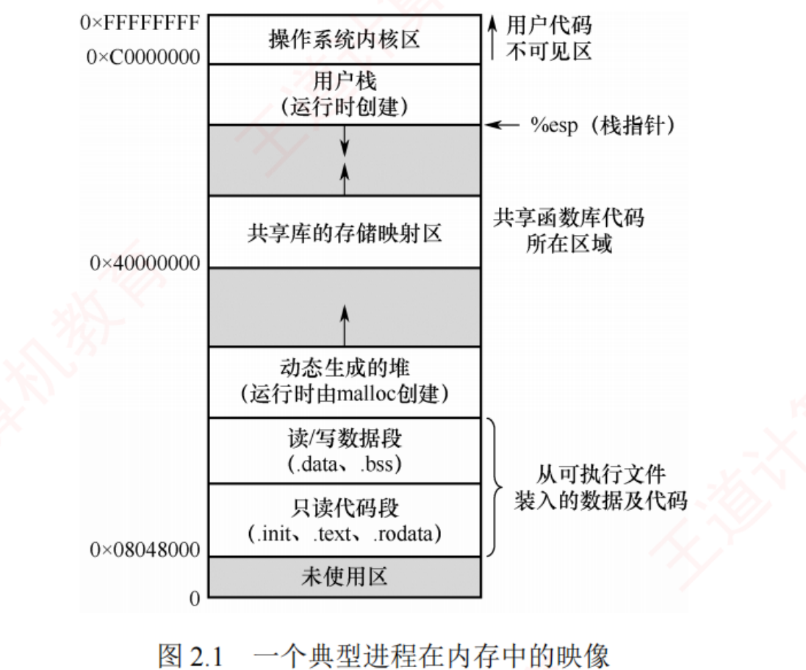
图 2.1 一个典型进程在内存中的映像（p.41）——从上往下看地址在变小 ：内核区（0xC0000000 以上，用户不可见）→ 用户栈（%esp 指针，箭头朝下 ）→ 空洞 → 共享库映射区 → 空洞 → 堆（箭头朝上 ）→ 读/写数据段 → 只读代码段（0x08048000）→ 未使用区。两个空洞就是留给堆栈相向生长的余地 ，也正是"堆栈可动态伸缩"的物理体现。
我的补讲 · 2025 真题就考这张图，但考的是「哪个不在里面」
书上把 PCB 单列一条、并特意说它不属于虚拟地址空间 → 潜台词是：这是命题人唯一能在这张图上设的坑 →
所以能考的是「下列哪个不在进程虚拟地址空间中」。 答案永远是 PCB （或"内核数据结构"这类同义词）。其余五项都在，包括共享库映射区。第二个可设的坑是方向 ：.data/.bss 在堆的下面 （低地址侧），
很多人凭"数据段和堆都放数据"就把它们记反。
按图记：地址从低到高 = 代码段 → 数据段 → 堆 → （空洞）→ 共享库 → （空洞）→ 栈 → 内核区。
我的补讲 · 栈向下、堆向上不是约定俗成，是为了"共用中间那片空洞"
书上只给了两个箭头方向 → 潜台词是：这样设计能让堆和栈共享同一片未分配区域 →
所以能考的是"为什么堆和栈要相向生长"。 理由 ：程序运行前无法知道"这次是堆用得多还是栈用得多"。把它们放在地址空间的两端、相向生长，
中间那片空洞就成了两者共用的余量 ——谁需要谁就往里长，直到撞上对方。⟹ 由此可推出两个现象：
① 栈溢出 （递归太深）与堆耗尽 （malloc 失败）在同一片空间上竞争；
② 现代系统会在两者之间留出保护页 ，撞上就触发异常，而不是让它们静静地互相覆盖。
第二条在 OS ch3 的"内存保护"里会正式出现。
必记 · 图后那句结论（判断题原句）
代码段和数据段的大小在程序加载时 就已确定，而堆和栈则可在运行过程中 动态扩展和收缩。
知识串联 · 这张图在 408 里出现三次，每次问的角度不同
虚拟地址空间
科目/章 同一张图被拿来问什么 本节（OS 2.1） 哪个区放什么内容、谁向上谁向下 OS ch3 虚拟内存 "整个地址空间无须全部驻留物理内存，访问到才靠缺页 调入" 组原 ch4 4.3 栈里的栈帧 ：参数区、返回地址、被保存寄存器、局部变量的排布
⚠️ 书上"通过缺页中断将其调入内存"这句话里的"中断"是口语用法 ：按 OS ch1 的严格分类，
缺页属于异常（内中断），不是外中断 ，且返回时重新执行 那条指令而不是执行下一条。
这个区分 2011–2024 考了不下五次，别被教材这句顺口话带偏。 📄 p.41
知识串联 · 共享库映射区 ↔ ch3 的页面共享 ↔ 2.1.7 的线程共享
代码共享 一份
printf 的代码被所有进程共用，这件事在三处以不同名字出现：
在哪 叫什么 共享的粒度 本节 共享库的存储映射区 一段虚拟地址区间 OS ch3 页面共享 （多个页表项指向同一物理页框）页 2.1.7 线程 同进程线程共享代码段 整个代码段
⟹ 三处的前提完全一样：被共享的必须是只读的（不可修改的纯代码） 。
ch3 讲"共享段/共享页"时若问"为什么数据段不能这样共享"，答案就在这里。 2.1.4 进程的状态与转换
我的补讲 · "创建态"的四个步骤，与 2.1.5 创建原语的四步是同一件事
书上在状态那里写了四步、在进程控制那里又写了四步 → 潜台词是：它们逐条对应 →
所以两处只需记一遍。
2.1.4 创建态的步骤 2.1.5 创建原语 申请一个空白 PCB ① 分配唯一标识并申请 PCB 填写控制和管理进程的信息 ③ 初始化 PCB 分配运行所需资源（如内存） ② 分配运行所需资源 转入就绪态并插入就绪队列 ④ 插入就绪队列
⚠️ 注意两处的顺序标注不同 （2.1.4 是"填信息 → 分资源"，2.1.5 是"分资源 → 初始化 PCB"）——
考试不会考这个顺序差异 ，记住四件事都要做即可。 必记 · 五种状态，前三种是基本状态
① 运行态 ：正在 CPU 上执行。单 CPU 中任一时刻最多只有一个 。② 就绪态 ：已获得除 CPU 外 的所有必要资源，一旦获得 CPU 便可立即运行；组织成就绪队列 。③ 阻塞态（等待态） ：因等待某事件暂停；此时即使 CPU 空闲也无法执行 ；可按阻塞原因分成多个子队列。④ 创建态 ：申请空白 PCB → 填写控制信息 → 分配资源 → 资源到位后转就绪并插入就绪队列。短暂的中间状态。 ⑤ 终止态 ：已完成或被强制终止，等待回收资源；不再参与调度 ，但 PCB 等信息可能暂时保留 。
我的补讲 · 五态里"创建态"和"终止态"为什么不算基本状态
书上说"其中前三种为基本状态" → 潜台词是：创建态与终止态都是过渡态 ，不参与日常调度循环 →
所以能考的是"进程在其生命周期中反复 经历的是哪几个状态"。
状态 进出次数 会不会参与调度 创建 一生只有一次 不会（资源没齐） 就绪 / 运行 / 阻塞 反复循环，可能上千次 就绪态是调度的候选池 终止 一生只有一次 明确"不再参与调度"
⟹ 所以"基本状态"这个词的含义是：它们构成进程运行期的那个闭环 。
图 2.2 里创建在最左、终止在最右，中间三个才是环——一眼可见。 必记 · 区分就绪态与阻塞态（书上专门起了一段）
就绪 = 仅缺 CPU；阻塞 = 需要其他资源（除 CPU 外）或等某一事件。 为什么要把 CPU 与其他资源分开？ 分时系统时间片很短（几毫秒），进程频繁 在运行↔就绪之间切换；
而其他资源的分配或事件的发生往往需要较长时间 ，导致进入阻塞的频率远低于 就绪。
⟹ 二者代表了两种性质完全不同的等待情形。
我的补讲 · 「就绪 vs 阻塞」真正的判据是一句话：等的是不是 CPU
书上用"频率高低"解释为什么要分开 → 潜台词是：这两个态在队列长度、切换开销、调度算法的输入 上完全不同 →
所以能考的是「某个具体场景里进程处于哪个态」。 给一张对照表，考场上直接查：
场景 状态 理由 时间片用完被换下 就绪 只缺 CPU 被更高优先级进程抢占 就绪 只缺 CPU 发起 read() 等磁盘数据 阻塞 等 I/O 事件 执行 P(mutex) 且信号量为负 阻塞 等信号量（2.3） 刚被 fork() 出来、资源已备齐 就绪 创建态已走完 申请内存失败被换出到外存 挂起 （2.2 会讲）不在内存里了
⚠️ 最后一行是 2.2 中级调度引入的"挂起态"，本节的五态图里没有——两张图别混用。
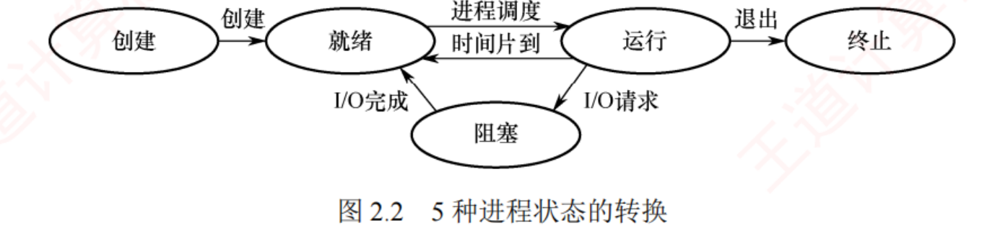
图 2.2 5 种进程状态的转换（p.42）——看清楚箭头的方向和标注 ：就绪→运行标"进程调度"，运行→就绪标"时间片到"，运行→阻塞标"I/O 请求"，阻塞→就绪标"I/O 完成"。图上没有 「阻塞→运行」和「就绪→阻塞」这两条边 ——这正是最常考的两个错误选项。
我的补讲 · 单 CPU 下"任一时刻最多一个运行态"能派生出一串结论
书上在运行态那条里加了"单 CPU 中任一时刻最多只有一个" → 潜台词是：这是很多计数题的隐含前提 →
所以能考的是"某时刻系统中处于各状态的进程数最多/最少是多少"。
问法 单 CPU 下的答案 运行态进程数 0 或 1 （没有就绪进程时是闲逛进程 在跑，见 2.2）就绪态进程数 0 ~ n−1 阻塞态进程数 0 ~ n （可以全都阻塞）n 个进程时"最多几个在运行" 1 ；m 个 CPU 时最多 m 个
⚠️ 最容易漏的是第三行：所有进程都阻塞是允许的 （此时 CPU 跑闲逛进程），
而"所有进程都就绪"也允许。这两种极端在 2.4 判断死锁时会用到。 陷阱 · 两条不存在 的转换，五年考了五次
考点追踪 · 2014、2015、2018、2023、2025 ① 阻塞态 → 运行态：不存在。 等待的事件发生后只能先回就绪 ，再等调度。② 就绪态 → 阻塞态：不存在。 就绪进程没在 CPU 上跑，没有机会发起任何系统调用 ，也就无从阻塞自己。记法：阻塞这个动作只有"正在跑的人"才能做，醒过来的人必须重新排队。
就绪ready
→ 进程调度 →被选中
运行running
→ I/O 请求 →主动
阻塞blocked
→ I/O 完成 →被动
就绪ready
知识串联 · 「阻塞→就绪由中断处理程序完成」把本节接进了 ch1 与组原
中断驱动 书上这句"相应的中断处理程序会将其状态由阻塞态修改为就绪态"，
是全章第一次点明
状态转换的执行者是谁 。把三科的说法拼起来：
阶段 谁在做 出自 设备完成、发出中断请求 I/O 接口硬件 组原 ch7 CPU 在一条指令执行完后响应，保存断点与 PSW 中断隐指令（硬件） 组原 ch5 · OS ch1 进内核跑中断处理程序，把等待该事件的进程改成就绪 OS（软件） 本节 下一次调度时它才真正上 CPU 调度程序 2.2
⟹ 这条链子说明了为什么"阻塞→运行"不存在：唤醒它的是中断处理程序，而中断处理程序做完还要还给被中断的那个进程 ，
轮不轮得到它得看下一次调度。 必记 · 四条转换逐条（连"谁触发"一起背）
就绪 → 运行 ：被调度程序选中，获得 CPU（如分到一个时间片）。运行 → 就绪 ：① 时间片用完，必须主动让出 ；② 可剥夺式 调度下有更高优先级进程就绪，被强制 切换。运行 → 阻塞 ：通过系统调用 请求服务而无法立即满足，主动 进入阻塞。
⭐ 并非所有系统调用都会导致阻塞，只有那些需要等待外部事件的操作才会。 阻塞 → 就绪 ：等待的事件发生，由中断处理程序 把状态改为就绪并重新插入就绪队列。运行→阻塞是主动 行为（自身发起的系统调用触发）；阻塞→就绪是被动 行为（依赖外部事件或其他进程协助）。
我的补讲 · "并非所有系统调用都会导致阻塞"这句话怎么用
书上补了这一句 → 潜台词是：命题人会拿一个不阻塞 的系统调用当选项 →
所以能考的是「执行下列哪个系统调用后进程一定进入阻塞态」。
系统调用 会不会阻塞 为什么 read() 读磁盘会 要等 I/O 完成 wait() 等子进程会 要等外部事件 getpid() 取自己的 PID不会 内核查 PCB 立刻返回 fork() 创建子进程不会 （父进程）建完 PCB 即返回；父子都进就绪 P(S) 且 S > 0不会 有资源可用，S−− 后继续跑
⟹ 一个更好用的判据：这次调用要不要等别人 ？要等就阻塞，只查表/改数就不阻塞。
2.3 的 P 操作是同一条判据的应用：P(S) 只有在 S 减到负数 时才调 block。 我的补讲 · 「主动 vs 被动」这对词，四个转换里只有两个用得上
书上用"值得注意的是"引出主动/被动 → 潜台词是：这对词只用来描述运行↔阻塞 这一对，别乱套 →
所以能考的是"下列状态转换中，由进程自身引起的是"。
转换 谁引起 能不能说"主动" 运行 → 阻塞 进程自己（系统调用） 能，这是标准答案 阻塞 → 就绪 外部事件 / 其他进程 不能，是被动 运行 → 就绪 时间片到（时钟中断）或被抢占 都不是"自愿"的 ，书上也不用这对词就绪 → 运行 调度程序 同上
⚠️ 第三行有个坑：书上在 2.2 说时间片用完"必须主动 让出 CPU"——
那个"主动"指的是"不是被别人抢的"，与本节这对"主动/被动"不是一个语境。
考试问"主动行为"时，标准答案永远是运行→阻塞。 陷阱 · 「执行中断处理程序时进程处于什么状态」
考点追踪 · 2023 中断处理程序是内核 代码，它借用的是"当前被中断进程"的执行现场 。
该进程此刻仍算运行态 （在内核态运行），并没有变成阻塞或就绪。
只有在中断处理程序明确把它挂到某个等待队列上 之后，它才变成阻塞态。⟹ 把这句和 OS ch1「中断处理在内核态执行，但进程还是那个进程」串起来记。
📄 p.42
我的补讲 · 三个"看起来该阻塞其实不阻塞"的高频干扰项
承上一条：命题人最爱拿"看起来要等一等"的动作来骗你 → 所以先把三个惯犯记住。
动作 会不会阻塞 为什么 时间片用完 不会 ，转就绪 它只缺 CPU 被更高优先级进程抢占 不会 ，转就绪 同上 启动了 DMA 传输但不等结果 不会 没有"等"这个动作就没有阻塞 V 操作唤醒了别人 自己不会 V 从不阻塞执行它的进程（2.3）
⟹ 判据仍是那一句：这次动作要不要等别人？ 要等才阻塞。 2.1.5 进程控制
我的补讲 · 进程控制的五个原语，按"改的是哪个状态"排一遍就记住了
书上把创建、终止、阻塞、唤醒分小节讲 → 潜台词是：它们各自对应状态图上的一条边 →
所以能考的是"下列原语会引起什么状态转换"。
原语 状态转换 谁来调用 创建（Create） 无 → 创建 → 就绪 父进程 / 作业调度 撤销（Terminate） 任意 → 终止 自己 / 父进程 / OS 阻塞（Block） 运行 → 阻塞 只能是进程自己 唤醒（Wakeup） 阻塞 → 就绪 中断处理程序 / 合作进程 切换（Switch） 运行 → 就绪 ，另一个 就绪 → 运行调度程序（2.2）
⟹ 五条边正好覆盖图 2.2 的全部转换。第三行"只能是进程自己"是最常考的一格 ——
别人不能替你 Block。 必记 · 原语
进程控制 = 创建新进程 ＋ 撤销已有进程 ＋ 实现状态转换，通常以原语 形式实现。
⭐ 原语在执行期间不允许被中断 ，是一个不可分割的基本单位 ，确保关键操作的原子性和一致性 。
知识串联 · 「原语」这个词在本章会被用到三处，含义完全一致
原子性 ① 本节的创建/撤销/阻塞/唤醒原语 ；② 2.3 的 P、V 操作 （"P、V 是原语，执行时不可中断"）；
③ 2.3 硬件方法里的 TestAndSet / Swap 指令 （硬件保证原子）。⟹ 三处考的是同一件事：中间状态不能被别人看见 。
再往外串：组原 ch7 的"中断响应发生在一条指令执行完 之后"、
数构里没有对应物但计网的原子性靠 TCP 的确认重传 ——不是一回事，别硬串。
本章凡是问"为什么必须是原语"，标准答案都是"防止在中间状态被切换出去，导致数据结构不一致"。
知识串联 · 「原语不可中断」在硬件上就是「关中断」
关中断 原语要求执行期间不被打断，实现手段在 2.3.2 给出了答案：
单 CPU 上就是关中断 （CPU 只在响应中断时才会切换进程，关掉就不会被抢） ；
多处理器上则要靠
TS / Swap 这类原子指令 。
再往硬件走一层 ：组原 ch5 的
中断允许触发器 EINT 就是"关中断"的那个开关，
组原 ch6 的
总线锁 是多核上保证读-改-写不被插入的机制。
层次 怎么保证原子 OS 原语（本节） 关中断 （单核）P/V（2.3） 本身就是原语 TS/Swap（2.3） 硬件指令不可分割 组原 ch6 总线锁 / 读-改-写事务
⟹ 从上到下是同一条需求被逐层落实，考试里四层都可能单独出现。 必记 · 创建原语四步 考点追踪 · 2021
① 分配唯一标识并申请 PCB ：分配唯一 PID，从 PCB 池申请空白 PCB。
若 PCB 资源耗尽则创建失败、返回错误。 ② 分配运行所需资源 ：内存、文件、I/O 设备（记录在 PCB 中）；或从 OS 获得，或从父进程继承 。③ 初始化 PCB ：标识信息、处理机状态信息、调度与控制信息、内存与资源信息。
⭐ 通常把新进程设置为最低 优先级 ，除非用户显式要求高优先级。④ 插入就绪队列 。
我的补讲 · 第 ①③ 步各埋了一个必考点
书上说"若 PCB 资源耗尽则创建失败" → 潜台词是：系统能容纳的进程数由 PCB 表的大小 决定 →
所以能考的是「限制系统中进程数量的是什么」。 答案是 PCB 的数量（进程表长度） ，不是内存大小、不是 CPU 个数。书上说"通常设为最低优先级" → 潜台词是：这与直觉相反（新来的反而排最后）→
所以能考的是判断句「新创建的进程优先级最高」——错 。
理由也要会说：防止用户靠疯狂 fork 抢占 CPU。
我的补讲 · 创建原语第 ④ 步「插入就绪队列」有个隐藏前提
书上写的是"若系统允许 新进程参与调度，则将其 PCB 插入就绪队列" →
潜台词是：创建完不一定立刻可运行 → 所以能考的是"进程创建后一定处于就绪态吗"。 标准答案：创建原语走完后进程进入就绪态 ，但在四步全部完成之前它处于创建态 ；
若资源分配不到位（如内存不够），它会停在创建态 而不会进就绪队列。 ⟹ 这解释了 2.1.4 里"创建态是一个短暂的中间状态，正常情况下 不会长期停留"这句话里
"正常情况下"四个字的分量——不正常的情况就是资源不足。
2.2 的中级调度会把这类进程直接放到"就绪挂起队列"里去。
必记 · 父子进程的关系 考点追踪 · 2020、2024
子进程在创建时会复制 父进程的当前状态 ：程序代码、数据段、堆栈内容、打开的文件描述符 、环境变量等。但子进程与父进程是相互独立 的实体，拥有各自的 PCB 和虚拟地址空间。
我的补讲 · 「复制」与「独立」这对看似矛盾的词，是父子题的全部考点
书上先说"复制父进程状态"、紧接着说"相互独立" → 潜台词是：复制的是内容 ，独立的是载体 →
所以能考的是「父子进程共享什么、不共享什么」。
东西 父子关系 后果 虚拟地址空间 各自一份（内容相同） 子进程改全局变量，父进程看不见 PCB 各自一份 PID 不同、可独立调度 已打开的文件描述符 共享同一个打开文件表项 读写位置是共用的 ——这是 2020/2024 的落点父进程后来才打开的文件 不共享 fork 之后各走各的
⟹ 一句话：「fork 那一瞬间的东西复制过去，之后各改各的；唯独文件描述符指向同一个内核对象。」
管道（2.1.6）能在父子间工作，靠的正是最后这条。 我的补讲 · 异常结束的六个原因，按"谁发现的"分成两类更好记
书上列了六条并列的异常原因 → 潜台词是：它们其实分属两个不同的检测机制 →
所以能考的是"下列哪个会引发异常（内中断）"。
由硬件 当场发现（属 ch1 的"异常/内中断"） 由 OS 事后判定 存储区越界 （地址越界，页表/段表检查）非法指令 （译码失败）特权指令违规 （用户态执行特权指令）算术运算错误 （除零、溢出）I/O 故障 （设备返回错误码）运行超时 （OS 计时发现超过配额）
⟹ 左栏四条全是 OS ch1 讲过的异常（内中断） ，它们的共同点是
由当前指令自身引起、处理完要重新执行或直接终止进程 。
右栏两条不是异常，是 OS 的策略判定。这个分类在 ch1 的选择题里直接考过。 必记 · 终止的三类原因与五步原语 考点追踪 · 2024
三类原因 ：① 正常结束 ；② 异常结束 （存储区越界、非法指令、特权指令违规、算术运算错误、I/O 故障、运行超时 ）；
③ 外界干预 （操作员终止、OS 因资源不足或安全策略终止、父进程请求终止子进程）。五步原语 ：① 按标识符检索 PCB、读当前状态 → ② 若正处于运行态，立即剥夺 CPU 并触发调度 →
③ 释放全部资源归还 OS → ④ 若支持级联终止，则递归终止其所有子孙进程 → ⑤ 把 PCB 从队列中移除。
知识串联 · 「孤儿进程被 init 收养」是 ch4 目录树的同款设计
树形结构 进程之间靠父子关系构成一棵
进程树 ，根是
init（PID＝1）；
ch4 的文件系统 靠目录构成一棵
目录树 ，根是
/。
两棵树面对"父节点没了怎么办"的答案不同，这个差别本身就是考点：
进程树 目录树 父没了 子被 init 收养（Linux）或级联终止 删目录前必须先清空 （或递归删除）根 init，PID＝1根目录 /
⚠️ 别把 init（PID＝1）和闲逛进程 （PID＝0，见 2.2）搞混——
这是本章最容易张冠李戴的一对编号。 陷阱 · 级联终止不是 所有系统都做
⭐ Linux 中父进程终止时，其子进程不会 被自动终止，而是由 init 进程（PID = 1）收养，并继续正常运行。 ⟹ 判断题「父进程终止则其所有子进程必然终止」是错 的。
正确说法要加限定：「在支持级联终止的系统中」 才成立。
我的补讲 · 终止原语第 ② 步「若正在运行则立即剥夺 CPU」隐含一个考点
书上把"若该进程正处于运行态，立即剥夺其 CPU 并触发调度"单列一步 →
潜台词是：一个进程可以被别人终止，而它自己此刻正在 CPU 上跑 →
所以能考的是"终止一个进程一定会引起进程调度吗"。 答案：被终止的若是当前运行进程，必然引起调度 （CPU 空出来了，必须另选一个）；
若被终止的是就绪态或阻塞态的进程，则只需把它从队列里摘掉，不必调度 。 ⟹ 这与 2.2「需要调度的四种时机」里的第 ② 条（进程正常结束或异常终止后）是同一句话的两处表述。
读到 2.2 时回头对一眼，就不用背两遍。
必记 · 阻塞与唤醒 考点追踪 · 2018、2022、2023（阻塞）／2014、2019（唤醒）
⭐⭐ 阻塞是进程的主动 行为，因此只有处于运行态 的进程才能执行阻塞操作。 Block 原语三步 ：① 保存 CPU 现场（PC、状态寄存器等）到 PCB → ② 状态改为阻塞，
把 PCB 插入所等待事件 的等待队列 → ③ 调用调度程序，从就绪队列另选一个进程运行。Wakeup 原语三步 ：① 在指定事件 的等待队列中找到目标 PCB → ② 移出等待队列、状态置就绪 → ③ 插入就绪队列。
由内核的中断处理程序或合作进程 调用。Block 与 Wakeup 是一对作用相反的原语，必须成对使用 ；只 Block 不 Wakeup ⟹ 永久阻塞。
知识串联 · Block/Wakeup 成对 ＝ 2.3 里 P/V 成对 ＝ 2.4 里死锁的成因
成对使用 这条铁律在本章被复用三次，且一次比一次值钱：
层次 成对的东西 不成对的后果 2.1（本节） Block ↔ Wakeup 进程永久阻塞 2.3 信号量 P(S) ↔ V(S) PV 大题最常见的丢分点：少写一个 V 2.4 死锁 申请 ↔ 释放 资源永不归还 ⟹ 死锁
⟹ 2.3 的教材综 06「V(Sy) 该写几次」，本质就是这一条：有几个进程会 P 它，就要 V 几次 。
穷举器实测：少 V 一次 ⟹ 48 个状态后 P₁ 与 P₃ 双双永久停在 P(Sy)。 📄 p.43
我的补讲 · Block/Wakeup 与 P/V 的对应关系，现在就对上，2.3 会省一半力气
书上把 Block/Wakeup 写成两个独立原语 → 潜台词是：2.3 的 P/V 就是建立在它们之上 的 →
所以能考的是"记录型信号量的 wait 操作会导致进程进入什么状态"（2023 真题）。
2.3 的写法 本节的原语 发生了什么 P(S) 且 S.value-- 后 < 0 调用 block() 运行 → 阻塞 ，挂到 S.L 队列 P(S) 且 S.value-- 后 ≥ 0 不调用任何原语 继续运行 V(S) 且 S.value++ 后 ≤ 0 调用 wakeup() 把一个进程从阻塞变就绪 V(S) 且 S.value++ 后 > 0 不调用 无人在等，什么也不发生
⟹ 2023 那道题问的正是第一行与第二行的区别：wait 不一定导致阻塞 。
而 S.L 就是本节说的"所等待事件的等待队列"。 2.1.6 进程的通信（IPC）
我的补讲 · 「低级通信」为什么也叫通信——PV 传的是什么信息
书上把 PV 归为"低级通信"、说它传"控制信息" → 潜台词是：信号量确实携带了信息，只是信息量极小 →
所以能考的是"下列哪种是低级通信方式"。
低级通信（PV） 高级通信（四种） 传的内容 "某事已发生""可以走了"——一个计数 真正的数据 数据量 极小（一个整数的增减） 大 用途 同步与互斥 交换数据 要不要 OS 提供额外机制 信号量本身就是 OS 提供的 要（共享区映射、消息队列、管道等）
⟹ 判据：问"传数据"的是高级通信，问"协调步调"的是低级通信 。
信号（Signal）虽然数据量也极小，但书上把它归在高级通信 里——这是唯一需要死记的一格。 必记 · 两级四种
低级通信 ：传递控制信息 ，典型代表是 PV 操作 （2.3 节）。高级通信 ：高效传输大量数据 ，四种方式 = 共享存储 · 消息传递 · 管道通信 · 信号 （正是考纲点名的四种 ）。
我的补讲 · 四种 IPC 里，只有共享存储不经过内核拷贝，这决定了它的速度
书上说共享存储是"映射到多个进程的虚拟地址空间" → 潜台词是：数据一次都不用复制 →
所以能考的是"下列哪种通信方式效率最高"。
方式 数据要复制几次 速度 共享存储 0 次 （双方直接读写同一块物理内存）最快 管道 2 次 （用户 → 内核缓冲 → 用户）中 消息传递 2 次 （发送方 → 内核队列 → 接收方）中 信号 不传数据 —
⟹ 于是"最快但最难用"这句话有了两个具体理由：快在零拷贝，难在同步全靠自己写 。
这也是 2.3 存在的动机。 必记 · ① 共享存储
通过特殊的系统调用创建一段独立的内存区，映射到多个进程的虚拟地址空间 ，各进程直接读/写该区域。必须由用户程序 引入同步互斥机制（如信号量的 P、V 操作），以避免数据竞争或不一致。 操作系统仅负责分配共享内存区并完成地址映射，并不会自动提供同步保护 。
我的补讲 · 「OS 只管映射不管同步」是共享存储唯一的考点
书上把这句话说了两遍（正文一遍、"需要注意"一遍）→ 潜台词是：这是它与另外三种方式的本质差别 →
所以能考的是「四种 IPC 中哪一种需要用户自己保证互斥」。 答案：只有共享存储。 消息传递把细节封装在内核里、管道由 OS 提供互斥与同步、信号是内核置位——三者都不用户操心 。⟹ 这也解释了为什么共享存储"最快"却"最难用"：省掉了内核拷贝（快），代价是同步全靠自己写（难）。
知识串联 · 共享存储"要用户自己写 PV"这句话，直接串到 2.3 的全部内容
同步责任 四种 IPC 里只有共享存储把同步责任推给用户，这个"推"字的分量在于：
2.3 那 50 页（PV、经典模型、管程）本质上都是在教你怎么承担这个责任。
共享存储的问题 2.3 给的工具 两个进程同时写同一块 ⟹ 数据损坏 互斥信号量 mutex（初值 1） 读的人比写的人快 ⟹ 读到旧数据 同步信号量 full（初值 0） 写的人比读的人快 ⟹ 覆盖未读数据 同步信号量 empty（初值 n） PV 写得太散、容易写错 管程（2.3.6）自动保证互斥
⟹ 换句话说：共享存储 ＋ 2.3 的信号量 ＝ 生产者-消费者模型 。
读到 2.3.5 时会发现那道母题就是在给共享存储补同步。 必记 · ② 消息传递
以格式化的消息（Message） 为单位，通过 OS 提供的发送原语和接收原语 进行。
⭐ 底层细节封装在内核中，对用户透明 。是目前应用最广泛的 IPC 机制 ；
微内核 OS 中微内核与服务器之间的交互正是基于消息传递 ；也很好地支持多处理器系统、分布式系统和计算机网络 。两种模式 ：直接通信 （指名道姓发给某进程，内核复制到接收方的内核缓冲队列 ）／
间接通信 （通过中间实体信箱 交换）。
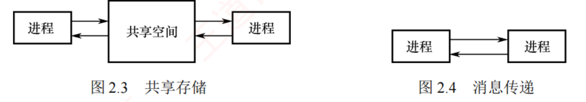
图 2.3 共享存储 · 图 2.4 消息传递（p.44）——差别一眼可见 ：共享存储中间有一块共享空间 （两个进程都伸手进去），消息传递两个进程直接连线 （中间那段线其实是内核，图上没画）。
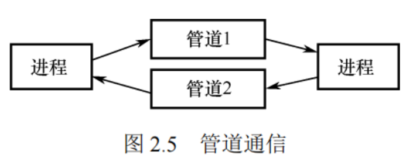
图 2.5 管道通信（p.44）——两根管道各走一个方向 。这张图就是"普通管道单向、双向要两个"的图证。
我的补讲 · 直接通信 vs 间接通信，考的是"发送方需不需要知道接收方是谁"
书上用邮差比喻讲了两种模式 → 潜台词是：区别在耦合度 ，不在效率 →
所以能考的是"下列关于消息传递两种方式的说法"。
直接通信 间接通信（信箱） 发送时要不要指名 要 （指定接收进程）不要 （只投给信箱）消息存在哪 接收方的内核缓冲队列 信箱 （一个独立的内核对象）一对多 / 多对多 不方便 天然支持 接收方不存在时 发送失败 消息仍留在信箱里
⟹ 最后一行是它们最实际的差别，也是"间接通信解耦"的具体含义。
⚠️ 无论哪种方式，消息的投递都由 OS 内核完成 ——书上那句"无论哪种方式，均由邮差（内核）完成可靠投递"
就是用来堵"间接通信不需要内核参与"这个错误选项的。 知识串联 · ls | grep 这个例子里的管道，串起了 2.1.5 与 2.1.6
fork 与管道 shell 里一句
ls | grep txt 背后发生的事，
正好把本节前后两小节缝在一起：
步骤 用到本章的哪一条 ① shell 调 pipe() 建管道 2.1.6：管道由父进程创建 ② fork() 出两个子进程 2.1.5：子进程复制父进程的文件描述符表 ③ 两个子进程因此看得见同一个管道 2.1.5：父子共享打开文件表项 ④ ls 写满了就阻塞，grep 读空了就阻塞 2.1.6：管道自带同步
⟹ 第 ②③ 步就是"管道只能用于有亲缘关系 的进程"的全部原因：
非亲缘进程没有继承那张描述符表，压根拿不到这个管道 。 必记 · ③ 管道通信 考点追踪 · 2014
基于先进先出 ，常用于有亲缘关系 的进程（如父子），以生产者-消费者模式 交换数据。编程接口上看，管道是一种特殊的共享文件 ，支持 read()/write()；
但实现上它不是磁盘上的文件 ，而是内核维护的一块固定大小的内存缓冲区 （Linux 中为环形缓冲区 ，如 64KB ）。 三方面协调能力 ：① 互斥 （任一时刻只允许一个进程读或写）；
② 同步 （管道满则写进程阻塞，管道空则读进程阻塞 ）；③ 写端关闭检测 （读端 read() 返回 0 ）。管道由父进程通过 pipe() 创建，子进程继承文件描述符表因而能访问同一管道。
陷阱 · 管道的三条"反直觉"结论，2014 一次考全
① 管道是内存缓冲区，不是磁盘文件 ——尽管它长得像文件、用文件接口。普通管道单向 ；要双向必须建两个管道。 从管道读是一次性 的：数据一旦被读出，其占用的缓冲区空间即被释放 （不像文件可以反复读同一段）。⟹ 三条合起来的记法：「像文件的接口 ＋ 像队列的语义 ＋ 像水管的方向」。
知识串联 · 管道 = 数构的循环队列 ＋ 2.3 的生产者-消费者
环形缓冲区 "固定大小 ＋ 环形 ＋ 满则写者等、空则读者等"——
这三句话在数构 ch3 叫循环队列 （用 (rear+1)%n == front 判满），
在 2.3 叫生产者-消费者 （用 empty/full 两个信号量），在这里叫管道 。⟹ 三者是同一个数据结构的三种叫法。 更值钱的是反过来用：
2.3 的 PV 大题只要出现"缓冲区""货架""盘子""车间在制品上限"，就把管道这套搬过去，一定对。
我的补讲 · 管道的"三方面协调能力"其实就是一个 PV 模型，现在写出来
书上说管道必须提供互斥、同步、写端关闭检测 → 潜台词是：前两条就是生产者-消费者 →
所以能考的是"管道机制需要解决哪些同步问题"。
管道的要求 对应 2.3 的信号量 初值 任一时刻只许一个进程读或写 mutex1 管道满则写进程阻塞 empty（空闲字节数）64 K （缓冲区大小）管道空则读进程阻塞 full（可读字节数）0 写端关闭时 read() 返回 0 不是同步问题 ，是接口约定—
⟹ 第四行要单独记：它不是靠信号量实现的 ，而是内核发现"再没有写者了"就直接让读者返回，
否则读者会永远阻塞下去。
这一条本质上是在防止 2.1.5 说的"只 Block 不 Wakeup ⟹ 永久阻塞"。 必记 · ④ 信号（Signal）
用于通知进程某个事件已发生 。Linux 实现约 30 种信号，编号 1~30。 PCB 中用一个 n 位向量 （Linux 用一个 32 位整型）记录当前待处理 的信号 ，发送时内核把对应位置 1，处理后清零。PCB 中还有另一个 n 位向量 ，记录被阻塞（屏蔽） 的信号 ：某位为 1 表示该信号不被立即处理、暂存起来。两种发送方式 ：内核发送 （如进程执行非法指令 ，内核发 SIGILL，序号 4 ）／
进程发送 （调用 kill()，需给出目标 PID 和信号序号；也可向自身发送 ）。OS 从内核态返回用户态时（如系统调用结束），检查是否存在未被阻塞的待处理 信号；
若存在则立即处理其中一个（通常优先处理序号较小 的）。 两种处理方式 ：执行默认 处理程序（SIGILL 默认终止进程 ）／执行自定义 处理程序。
处理程序结束后通常返回原程序被中断的位置继续执行。
知识串联 · 「两个位向量」＝ 组原的「中断请求寄存器 ＋ 中断屏蔽字」
中断屏蔽 组原 ch5 5.5 讲多重中断时给了同一套结构：
中断请求寄存器 逐位记录"哪些中断源提出了请求"，中断屏蔽字 逐位记录"哪些被屏蔽"。本节的信号就是它在软件层的翻版 ：待处理向量 ↔ 请求寄存器，屏蔽向量 ↔ 屏蔽字。
连"什么时候检查"都一样：组原是"一条指令执行完就查中断请求"，本节是"从内核态返回用户态时查未决信号"。 ⟹ 记住这个对应，信号这一小段一个字都不用背——照着组原推即可。
我的补讲 · 四种 IPC 的一张终极对照表（选择题查表即可）
书上把四种方式分开讲、没有横向对照 → 潜台词是：命题人正是靠"横着比"来出题的 →
所以能考的是「下列关于四种通信方式的说法哪个正确」。 把四种拉平了比：
共享存储 消息传递 管道 信号 传的是 任意数据 格式化消息 字节流 一个"事件已发生"的比特 数据量 大 中 中 几乎为 0 谁保证同步 用户自己写 PV 内核 内核 内核 方向 双向 双向 单向 单向 要不要亲缘关系 不要 不要 普通管道要 不要 典型场景 大批量数据 微内核、分布式 ls | grepCtrl+C 终止
⟹ 最容易被问倒的一格是「信号能不能用来传数据」——不能 ，它只传"发生了第 n 号事件"这一个编号。 📄 p.45
我的补讲 · 信号的"两个位向量"要能说清它们分别在什么时候被查
书上把待处理向量与屏蔽向量并列写 → 潜台词是：它们的检查时机 与作用 完全不同 →
所以能考的是"进程收到信号后一定会立即处理吗"。
待处理向量 屏蔽（阻塞）向量 谁来置位 内核 （发送信号时）进程自己 （设置屏蔽）何时被查 OS 从内核态返回用户态时，一起查这两个向量 判据 某位在"待处理"里为 1 且 在"屏蔽"里为 0 ⟹ 才处理 处理顺序 通常优先处理序号较小的
⟹ 所以答案是"不一定立即处理"：① 要等到返回用户态那一刻；② 还要没被屏蔽。
这两条限制与组原 ch5 的"中断要等一条指令执行完 + 没被屏蔽字挡住"完全同构。 2.1.7 线程和多线程模型
知识串联 · "轻量级进程"这个词，把 2.1.7 与 2.2 的开销讨论连起来
轻量级 "轻"在哪，2.1.7 与 2.2.4 各说了一半，合起来才完整：
轻在哪 出处 创建/撤销轻 ：只分配栈和少量内核对象2.1.7 第 ⑤ 点 切换轻 ：只保存恢复寄存器，不换地址空间2.1.7 第 ⑤ 点 ＋ 2.2.4 上下文切换五步 通信轻 ：共享地址空间，无须 IPC2.1.7 第 ③ 点 但调度不一定轻 ：KLT 切换仍要陷内核2.2.2 两种线程的调度
⟹ 最后一行是防坑的："线程切换一定比进程切换快"对，但"线程切换一定很快"不对 ——
内核级线程切换仍要付模式切换的成本，书上说它"通常高出用户级线程数倍"。 我的补讲 · "进程处于执行状态 ＝ 它的某个线程在运行"，这句话能推出两个结论
书上这句看似绕口的话 → 潜台词是：引入线程后"进程的状态"要重新定义 →
所以能考的是"多线程进程中，进程的状态由什么决定"。
由这句话推出 说明 进程"运行"⟺ 至少一个线程在运行 多核上可以有多个线程同时在运行 进程"阻塞" ⟺ 全部线程都阻塞 KLT 下一个线程阻塞不代表进程阻塞 ；ULT 下则代表
⟹ 第二行正是 ULT 与 KLT 最大差别的另一种表述：
ULT 下"线程阻塞 ＝ 进程阻塞"，KLT 下两者脱钩 。
把这句话与"内核看不看得见线程"对上，2019 那道比较题就不用背结论了。 必记 · 线程的定位 考点追踪 · 2011、2019、2024
⭐ 引入进程是为了让多道程序并发；引入线程是为了进一步降低并发执行的时空开销 。 轻量级进程 "，是程序执行流的最小单元 ，也是处理器调度的基本单位 。
多线程 OS 中进程不再作为基本的执行实体，但仍保留与执行相关的状态 ；
所谓进程处于"执行"状态，实际是指该进程中的某个线程正在运行。 引入线程后：进程 ＝ 除 CPU 外的系统资源分配单位；线程 ＝ CPU 调度和执行的基本单位。
我的补讲 · 「线程是处理器调度的基本单位」这句话有一个前提
书上直接说线程是"处理器调度的基本单位" → 潜台词是：这只在内核级线程 下成立 →
所以能考的是"用户级线程是调度的基本单位吗"。
实现方式 内核调度的对象是 "线程是调度基本单位"这句话 内核级线程 KLT 线程 成立 用户级线程 ULT 进程 不成立 （内核根本看不见线程）
⚠️ 但要注意王道的口径：在讲"引入线程后进程与线程的分工"时，书上是笼统地 说
"线程是 CPU 调度和执行的基本单位"——这是默认按 KLT 说的 。
⟹ 做题时看题干有没有出现"用户级线程"四个字：出现了就切到第二行的口径。
2019 真题考的正是这个切换。 必记 · 线程的私有与共享（2024 直接考） 考点追踪 · 2024
线程私有 （每个线程一份） 同进程内线程共享 线程 ID（TID） 程序计数器 PC 寄存器集合 栈（私有栈） 线程控制块 TCB 代码段（正文段） 数据段（全局变量、静态变量） 堆 已打开的文件描述符 地址空间
⭐⭐
每个线程的私有栈都位于进程的地址空间内 ，因此技术上一个线程可以访问另一个线程的栈；
但这严重违反编程规范，实际开发中应严格避免。 我的补讲 · 「私有栈却在共享地址空间里」是本节最精致的一刀
书上先说"栈是线程私有"，又说"技术上可以互相访问" → 潜台词是："私有"说的是用法约定 ，不是硬件隔离 →
所以能考的是「下列哪项是线程私有且其他线程无法访问的」。 正确答案只能是寄存器/PC 的值 （在 CPU 里或 TCB 里，别人确实拿不到），不能选"栈"。
这与进程形成鲜明对比：进程之间的地址空间是硬隔离 （靠页表/段表 + 越界检查），越界会触发保护异常；
线程之间只有软约定 ，越界不会报错、只会静静地把别人的数据改坏。 ⟹ 这正是"多线程程序难调试"的根本原因，也是 2.3 同步互斥存在的意义。
知识串联 · 线程私有栈 ↔ 组原 ch4 的栈帧
栈帧 组原 ch4 4.3「程序的机器级代码表示」讲的栈帧 结构（参数区 → 返回地址 → 被保存寄存器 → 局部变量），
在这里成了"线程为什么必须有私有栈"的理由：函数调用的返回地址和局部变量是每条执行流各一份的 ，
两条线程共用一个栈会立刻把彼此的返回地址踩烂。⟹ 反过来也成立：凡是"每条执行流一份"的东西，都是线程私有的 （PC、寄存器、栈）；
凡是"整个程序一份"的东西，都是共享的（代码、全局变量、堆、文件表）。
这条判据比背表管用——2024 真题的选项拿它一秒判完。
知识串联 · 线程的 TCB ↔ 进程的 PCB，同一套设计的两级复制
控制块 OS 里凡是"要管一个东西"，做法都是给它配一个
控制块 ：
被管理的对象 控制块 里面存什么 在哪一章 进程 PCB 标识 · 调度信息 · 资源 · CPU 上下文 2.1.2 线程 TCB TID · 寄存器集合 · 状态 · 优先级 · 栈指针 2.1.7 文件 FCB / inode 文件名 · 大小 · 物理地址 · 权限 OS ch4 设备 设备控制表 DCT 设备标识 · 状态 · 等待队列指针 OS ch5
⟹ 四张表的结构惊人一致：标识 ＋ 状态 ＋ 位置 ＋ 等待队列 。
记住这个模板，ch4 的 FCB 与 ch5 的 DCT 都不必从头背。
而"创建它 ＝ 建控制块，撤销它 ＝ 删控制块"这句话，四处一律成立。 必记 · 线程与进程的六点比较 考点追踪 · 2012
① 调度 ：线程成为独立调度的基本单位。
⭐ 同一进程内线程切换不会 引起进程切换；跨进程的线程切换会 触发进程切换。 ② 并发性 ：进程间可并发，同一进程内的多线程可并发，不同进程中的线程也能并发 。③ 拥有资源 ：进程是资源分配的基本单位；线程不拥有独立的系统资源 ，但有必需的私有数据结构。④ 独立性 ：进程间地址空间完全独立；一个进程中的线程对其他进程完全不可见 。⑤ 系统开销 ：创建/撤销进程要分配回收 PCB、地址空间、I/O 资源，开销显著；
创建/撤销线程仅需分配栈和少量内核对象，开销很小 ；
进程切换要换整个地址空间与资源上下文，线程切换只需保存和恢复寄存器状态 。⑥ 多处理器 ：单线程进程任一时刻只能在一个 CPU 上执行 ；多线程进程可把多个线程同时 调度到多个 CPU。
我的补讲 · 「线程切换开销小」小在哪，要能说出具体的两样东西
书上说线程切换"只需保存和恢复寄存器状态" → 潜台词是：省掉的是地址空间的切换 →
所以能考的是「进程切换比线程切换多做了什么」。 多做的正是这两样：
动作 线程切换（同进程） 进程切换 保存/恢复通用寄存器与 PC 要 要 切换页表基址寄存器 不用 要 刷新 TLB / 部分 Cache 失效 不用 要（代价最大的一项） 陷入内核态 用户级线程不用 ／内核级线程要要
⟹ 第三行是跟组原 ch3 借来的：TLB 里缓存的是"本进程的"页表项，换进程就作废。
能把"要刷 TLB"说出来，这道题就没有任何选项能骗到你。 知识串联 · 「进程切换要刷 TLB」把 OS 与组原缝在了一起
TLB 与地址空间 组原 ch3 的 TLB（快表） 缓存的是虚页号→实页框 映射，
这个映射随进程而异 ；OS ch3 会讲到进程切换时 TLB 要么全部失效、要么靠 ASID（地址空间标识） 区分。⟹ 于是"线程切换比进程切换快"这句 OS 的结论，最终落在组原的一块硬件缓存上。
同一条逻辑还能解释 OS ch3 的另一个结论：页表切换 ＝ 换一个页表基址寄存器的值 ，动作本身很快，
慢的是随后 TLB 全失效带来的连锁缺失。
我的补讲 · 六点比较里最常出选择题的是第 ① 条，把它拆成三种情形
书上说"同一进程内线程切换不引起进程切换，跨进程的会" →
潜台词是：这句话把切换分成了三档 → 所以能考的是"下列哪种切换开销最小"。
切换类型 要不要换地址空间 要不要进内核 开销 同进程内的用户级 线程切换 不要 不要 最小 同进程内的内核级 线程切换 不要 要 中 跨进程的线程切换（＝进程切换） 要（还要刷 TLB） 要 最大
⟹ 三档的分界线分别是"要不要进内核"和"要不要换地址空间"。
选择题若问"用户级线程切换是否需要 OS 内核支持"，答案是不需要 ——这正是第一行。 必记 · 线程的三种基本状态与生命周期
线程只有运行态、就绪态、阻塞态 三种基本状态，转换与进程的三基本态转换类似 。用户程序启动时通常仅有一个初始线程，其主要任务是创建其他线程。
创建时要传入线程主函数入口地址、堆栈大小、调度优先级 ，成功后返回唯一的线程标识符 。多数 OS 中线程终止后不会立即释放 资源，只有进程中其他线程执行了分离 操作后才回收；
已终止但尚未释放资源的线程仍可被其他线程调用 以重新恢复运行。
背景 · 线程终止的四种原因，认字即可
正常执行完主函数 / 运行中发生未处理的异常而退出 / 主动调用线程终止函数 / 被其他线程通过取消机制强制终止。
这四条从没单独考过，扫一眼即可；上一条框里的「不立即释放 + 可恢复」才是考点。
📄 p.47
线程的两种实现方式 考点追踪 · 2019
我的补讲 · ULT 的三条优点，反过来正是 KLT 的三条缺点
书上分别给两者列了优缺点 → 潜台词是：它们是互补 的，记一边就够 →
所以能考的是"下列哪项是用户级线程相对内核级线程的优势"。
维度 ULT KLT 切换开销 优 （不进内核）劣（要陷内核） 调度策略可定制 优 （应用自己定）劣（由内核统一定） 可移植性 优 （与 OS 无关）劣（依赖 OS） 阻塞隔离 劣 （一个阻塞全挂）优 多核并行 劣 （只能在一个核上）优
⟹ 五行里 ULT 三优两劣、KLT 两优三劣，但那两劣是致命的 （现代系统几乎都用 KLT 或组合方式）。
这也是"多对多模型"被提出来的原因——把上面三优和下面两优都要过来。 必记 · 用户级线程 ULT
所有线程管理工作（创建、切换、撤销 ）均由应用程序在用户空间（用户态） 完成，无须 OS 介入 。
⭐⭐ 操作系统内核完全感知不到这些线程的存在。 调度仍以进程 为单位进行 ：调度器只看得见进程，仅为整个进程分配一个时间片 。优点 ：① 切换在用户空间完成，无须切到内核态 ，避免模式切换开销；② 调度策略可由应用程序定制 ；
③ 与 OS 无关 ，可移植性好。缺点 ：① ⭐⭐ 系统调用的阻塞问题 ——某个线程执行阻塞型系统调用时，整个进程被内核挂起，所有线程均被阻塞 ；
② ⭐⭐ 无法发挥多处理器并行优势 ——内核只把该进程调度到一个 CPU，多线程只能在单个 CPU 上交替执行 。
我的补讲 · 那个 100 ms / 100 线程的例子必须算一遍，它是本节唯一的计算题
书上举例：时间片轮转、每个进程每次 100 ms。进程 A 有 1 个 ULT，进程 B 有 100 个 ULT →
A 的那个线程独占 100 ms，B 的每个线程平均只有 1 ms → A 的线程拿到的 CPU 时间是 B 的 100 倍 。
潜台词是：ULT 的调度单位是进程，所以"线程多"反而"人均少" → 所以能考的是「若改成 KLT 结果如何」。
用户级线程 ULT 内核级线程 KLT 调度单位 进程 线程 A 的 1 个线程分到 100 ms 100 ms （101 个线程里占 1 个 ⟹ 约 1 份）B 的每个线程分到 1 ms 与 A 的线程一样多 公平性 按进程公平 按线程公平
⟹ 一句话收口：ULT 让"开线程"占不到便宜，KLT 让"开线程"直接换成 CPU 份额。
这也是为什么 2.2 会专门提"内核级线程与用户级线程调度"这个考纲词。
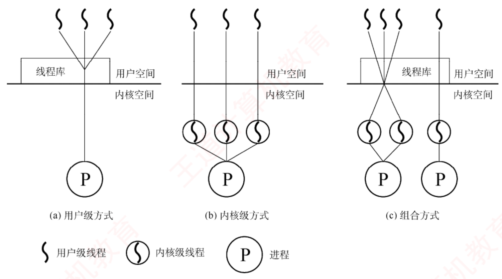
图 2.6 用户级线程和内核级线程（p.48）——先看图例 ：波浪线＝用户级线程，圈住的波浪线＝内核级线程，圆圈 P＝进程。(a) 用户级方式 ：波浪线全在用户空间 那条横线之上，内核里只有一个 P（内核只看得见进程）；(b) 内核级方式 ：每条波浪线都穿过横线 并在内核里配一个圈（内核逐个感知）；(c) 组合方式 ：既有线程库（用户空间）又有多个内核级线程。那条横线就是用户态/内核态的分界，看图只需看"线穿没穿过它"。
我的补讲 · ULT 的两条缺点是同一个根因的两个面
书上把"阻塞问题"与"不能多核并行"并列成两条 → 潜台词是：它们都来自"内核看不见线程"这一条 →
所以能考的是"为什么用户级线程无法利用多处理器"。
根因 后果一 后果二 内核只看得见进程 一个线程发起阻塞型系统调用 ⟹ 内核以为整个进程 要等 ⟹ 全部线程被挂起 内核只把进程 调度到一个 CPU ⟹ 该进程的多个线程只能在这一个 CPU 上交替执行 ⟹ 两条都能靠 KLT 解决，因为 KLT 让内核"看得见"每个线程。
⚠️ 一个常见误解：以为 ULT"不能并发"——能并发（交替执行），不能并行（同时在多核上跑） 。
并发与并行这对词在 ch1 定义过，这里是它最典型的应用场景。 必记 · 内核级线程 KLT
管理完全由 OS 内核负责 ，所有线程操作均在内核空间（内核态） 完成；OS 为每个 KLT 维护一个 TCB 。优点 ：① 能发挥多处理器的并行优势 ；② ⭐ 阻塞处理更灵活 ——某线程阻塞时内核仍可调度同进程的其他线程 ；
③ 内核自身可采用多线程技术 。缺点 ：⭐ 线程切换需从用户态陷入内核态 ，每次都涉及模式转换与上下文保存/恢复，开销较大 。
背景 · 组合方式，一句话带过
内核支持多个 KLT 的创建与调度，同时允许用户程序在用户空间管理多个 ULT，兼取两者之长。
它就是下面"多对多模型"的实现基础，本身没有独立考点，看懂图 2.6(c) 即可。
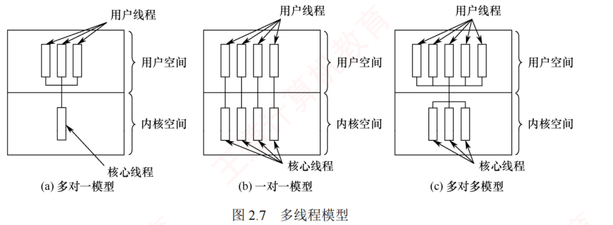
图 2.7 多线程模型（p.49）——数线条数就能认出模型 ：(a) 多对一＝用户空间多根、内核空间只有一根 ；(b) 一对一＝上下根数相等且一一对应 ；(c) 多对多＝上面 n 根、下面 m 根且 n ≥ m 。
我的补讲 · 三种模型与两种实现方式的对应关系（别把四个概念搅成一团）
书上先讲 ULT/KLT/组合三种"实现方式"，又讲多对一/一对一/多对多三种"模型" →
潜台词是：这两组词是一一对应 的，只是视角不同 → 所以能考的是"下列说法哪个把两者对错了"。
实现方式（图 2.6） 对应模型（图 2.7） 一句话 (a) 用户级方式 多对一 内核里只有一根 (b) 内核级方式 一对一 上下一一对应 (c) 组合方式 多对多 n ≥ m
⟹ 于是"多对一的缺点"与"ULT 的缺点"是同一段话，"一对一的缺点"与"KLT 的缺点"也是同一段话——
只需背一遍 。
⚠️ 唯一不重合的一句：一对一模型额外强调"限制了系统可支持的最大线程数 "，
这是 KLT 那一段没写、但一对一那一段写了的，别漏。 必记 · 三种多线程模型
模型 映射 优点 缺点 多对一 多个 ULT → 1 个 KLT每次只允许一个线程映射 管理在用户空间，切换效率高 任一线程阻塞则整个进程挂起 ；无法多处理器并行 一对一 每个 ULT → 一个独立的 KLT 阻塞时可调度同进程其他线程，支持真正并发 ，可多 CPU 并行 每建一个用户线程就得建一个内核线程，开销大，限制了最大线程数 多对多 n 个 ULT → m 个 KLT，要求 n ≥ m 既克服多对一并发度低，又避免一对一开销大；兼具两者优点
陷阱 · 多对多的 n ≥ m 方向别写反
n 是用户级线程数、m 是内核级线程数，要求 n ≥ m （用户级的多、内核级的少，才叫"多对多"有意义）。写成 n ≤ m 就变成"给每个用户线程配了不止一个内核线程"，毫无意义。
记法：内核级线程是稀缺资源，永远不会比用户级线程多。
知识串联 · 「多对多的 n ≥ m」与组原 Cache 的「组相联」是同一种折中
多对少的映射 把 n 个东西映射到 m 个槽位、且 n ≥ m，这个结构在 408 里反复出现：
场景 n（多的一侧） m（少的一侧） 两个极端 本节多线程模型 用户级线程 内核级线程 m＝1 是多对一，m＝n 是一对一 组原 Cache 映射 主存块 Cache 行/组 直接映射 ↔ 全相联，组相联居中 OS ch3 页式管理 虚页 物理页框 —
⟹ 三处的取舍方向完全一致：m 越小越省资源但并发/命中越差，m 越大越灵活但开销越高，中间那档是工程上的选择 。
能把"多对多之于多对一/一对一"类比成"组相联之于全相联/直接映射"，这三种模型的优缺点就再也不用背。 背景 · 线程库的实现与三种主流库
两种实现：纯用户空间实现 （调用库函数只是本地过程调用，对应 ULT）／内核支持实现 （API 会触发系统调用，对应 KLT）。POSIX Pthreads （可基于用户级也可基于内核级 ）·
Windows 线程 API （直接构建于内核之上，属内核级 ）·
Java 线程 API （通过调用宿主 OS 的线程库实现 ——Windows 上用 Windows API，类 UNIX 上用 Pthreads）。这一小段只可能出一道"下列哪个是内核级线程实现"，答案 Windows；Pthreads 是那个"两可"的干扰项。
📄 p.50
2.1.8 本节小结（回答开头三问）
我的补讲 · 线程"终止后不立即释放资源"这条冷知识，值一道判断题
书上说"多数 OS 中线程终止后不会立即释放资源，只有其他线程执行了分离 操作后才回收"，
并补了一句"已终止但尚未释放资源的线程仍可被其他线程调用以重新恢复运行 " →
潜台词是：线程的"死"和进程的"死"不一样 → 所以能考的是"线程终止后其资源立即被回收"（错）。
进程终止 线程终止 资源回收 五步原语里明确"释放全部资源" 不立即释放，等分离操作 能否"复活" 不能 能 （尚未释放资源时可被恢复运行）PCB / TCB PCB 被移出队列 TCB 仍在
⟹ 记法：进程死了是注销户口，线程死了只是请假。
这条与 2.1.4「终止态的进程 PCB 等信息可能暂时保留 」呼应——两处都在说"清理是异步的"。 知识串联 · 三大问题的解法，各自指向本章后面的一节
章节地图 小结里的三大问题不是收尾，是
目录 ：
问题 本节给的答案 真正展开在 失去封闭性 地址空间隔离 OS ch3 内存管理（越界保护、页表） 执行的间断性 PCB 保存/恢复上下文 2.2.4 进程切换 结果不可再现 隔离机制 ＋ 调度策略 2.3 同步与互斥（这才是正解）
⟹ 第三行要留个心：光靠"隔离"解决不了共享数据的不可再现性 ——
一旦两个进程真的共享一块内存，就只能靠 2.3 的 PV。
这句话就是 2.1 与 2.3 之间的桥。 必记 · 引入进程解决了并发执行的三大问题
① 失去封闭性 ⟹ 靠地址空间隔离 提供独立、受保护的执行环境；执行过程的间断性 ⟹ 靠 PCB 保存和恢复执行上下文 ，中断后能准确连续地继续；结果不可再现性 ⟹ 靠进程的隔离机制与 OS 的调度策略 共同保障可控性与可再现性。
背景 · 书上的"人生历程"类比，读一遍找感觉即可
书把进程比作人的生命历程：进程实体（程序段+数据段+PCB）＝"人"这个主体，PCB ＝ 身份标识 ；
"充满斗志"＝就绪、"发奋图强"＝运行、"遭遇挫折而失落"＝阻塞、"受鼓励重新充满斗志"＝回到就绪。这段是教学味的比喻，不会考。真要留一句的话，留"PCB ＝ 身份证"——它能帮你记住"撤销进程 ＝ 撤销 PCB"。
我的补讲 · 2.1 节 74 道题的失分点集中在这七条，读完自查一遍
把本节所有加粗的反直觉结论抽出来，就是这张自查表——七条全对才算读完 2.1：
# 结论 常见错答 1 PCB 不在进程虚拟地址空间里 以为它在内核区之外的某个用户段 2 阻塞→运行、就绪→阻塞两条边不存在 看到"事件完成后立即运行"就选 3 阻塞是主动的、唤醒是被动的 方向记反 4 并非所有系统调用都阻塞 见"系统调用"就判阻塞 5 共享存储要用户自己写 PV 以为 OS 会自动加锁 6 管道是内存缓冲区、单向、读走即释放 当成磁盘文件、当成双向 7 ULT 里一个线程阻塞 ⟹ 整个进程挂起 与 KLT 的结论对调
⟹ 建议：先做练习系统 2.1 的 74 题，把错的对照这张表定位；七条之外的错题多半是"读题不细"，不是知识缺口。 2.2 CPU 调度
我的补讲 · 这一节是全章选择题 失分第一（0.67 道真题/页），但它的题型只有三类
我把 2.2 的 22 道真题按题型分了一遍 → 潜台词是：这一节看起来概念多，实际上只在三个地方设卡 →
所以能考的是这三类，其余全是背景。
题型 占真题 要练的动作 ① 作业执行的相关计算 （甘特图、周转时间、带权周转）2012、2016、2018、2019、2023、2024 共 6 年 动笔画时间轴，CPU 与 I/O 分两行 ② 算法特点辨析 （谁抢占、谁饥饿、谁退化）2009、2011、2014、2016、2017、2021、2024 等 背下面那张表 2.4 ③ 调度时机 / 切换概念 （能不能调度、模式切换 vs 上下文切换）2012、2021、2023、2024、2025 记两条"不能调度"与一条分界线
⟹ ① 的分值最重（2016 那道是本章唯一的调度综合真题），但 ③ 最容易凭感觉做错。
读这一节时，遇到"计算"就动笔，遇到"辨析"就在旁边写下反例。 📄 p.66
2.2.1 调度的概念
我的补讲 · 三级调度的名字有两套，题干用哪套都得认得
书上每一级都给了两个名字 → 潜台词是：真题会随机用其中一个 → 所以先把对照表钉住。
层次 别名 管的是 状态变化 高级调度 作业调度 外存后备队列 → 内存 无 → 创建 → 就绪 中级调度 内存调度 （＝对换 ）内存 ⇄ 外存 就绪 ⇄ 就绪挂起 、阻塞 ⇄ 阻塞挂起低级调度 进程调度 就绪队列 → CPU 就绪 → 运行
⟹ 一个好用的区分口诀：高级调度决定"谁能进内存"，中级调度决定"谁能留在内存"，低级调度决定"谁能上 CPU"。 知识串联 · 三级调度对应进程状态图上的三段路，图 2.8 与图 2.2 要合起来看
状态图 2.1.4 的五态图与本节的三级调度图讲的是同一件事的两个侧面：
图 2.2 上的边 由哪一级调度负责 创建 → 就绪 高级调度（作业调度） 就绪 → 运行 低级调度（进程调度） 就绪 ⇄ 就绪挂起 · 阻塞 ⇄ 阻塞挂起 中级调度（对换） ——图 2.2 上没有 这两条，要看图 2.8运行 → 阻塞 · 阻塞 → 就绪 不归调度管 （由进程自身与中断处理程序引起）
⟹ 最后一行值得单独记：状态转换不都是调度引起的 。
"运行→阻塞"是进程自己 Block 的，"阻塞→就绪"是中断处理程序改的，两者都与调度程序无关。 必记 · 三级调度各自管什么
① 高级调度（作业调度） ：从外存后备队列 挑作业，分配内存/设备并创建进程 。
⭐ 实现的是内存与外存之间的调度；每个作业在整个生命周期中仅被调入一次、调出一次 。
传统多道批处理系统普遍配备；分时/实时系统一般不设 独立的作业调度模块 （进程由交互命令直接创建）。② 中级调度（内存调度） ：内存紧张时把暂时无法运行的进程（如阻塞且等待时间长的）换出到外存 ，此时状态称挂起态 ；
条件具备时再换入内存、恢复为就绪态 。⭐ 中级调度实际上就是存储器管理中的对换 功能。 ③ 低级调度（进程调度） ：从就绪队列 选一个进程分配 CPU。
⭐ 最基础、最频繁，所有 OS 中都必须存在 ；频率很高，通常每几十毫秒一次。 调度频率：作业调度最低 < 中级调度次之 < 进程调度最高。
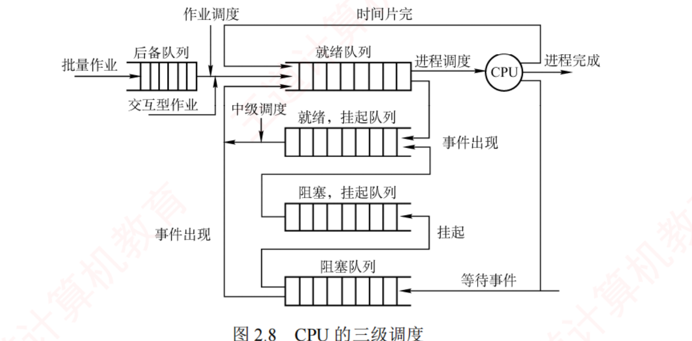
图 2.8 CPU 的三级调度（p.67）——这张图要横着读三层 ：最上一层是「后备队列 →（作业调度）→ 就绪队列 →（进程调度）→ CPU」的主干；中间两层「就绪，挂起队列」「阻塞，挂起队列」是中级调度 换出去的进程；最下一层「阻塞队列」是没被换出的阻塞进程。注意「事件出现」有两条：阻塞队列 → 就绪队列（在内存里）、阻塞挂起队列 → 就绪挂起队列（在外存里） ——这就是"挂起态要再分两种"的图证。
我的补讲 · 五态图 → 七态图，多出来的两个态全在这张图上
书上在 2.1.4 给了五种状态，这里又冒出"挂起态" → 潜台词是：挂起是另一个维度 （在内存 / 在外存），不是第六种并列状态 →
所以能考的是「就绪挂起与阻塞挂起之间能不能直接转」。
在内存 被换出到外存（挂起） 只缺 CPU 就绪 就绪挂起 等事件 阻塞 阻塞挂起
⟹ 于是四条转换全都有意义：阻塞挂起 →（事件出现）→ 就绪挂起 （人还在外存，但已经不等事件了）；
就绪挂起 →（换入）→ 就绪。
⚠️ 反过来「就绪挂起 → 阻塞挂起」不存在 ——理由与 2.1.4 那条一样：
没在 CPU 上跑就没法把自己阻塞。 我的补讲 · "作业在整个生命周期中仅被调入一次、调出一次"这句话是用来对比中级调度的
书上专门给作业调度加了这一句 → 潜台词是：它与中级调度形成鲜明对照（中级调度可以来回换很多次）→
所以能考的是"下列关于三级调度频率的说法"。
作业调度 中级调度 进程调度 一个作业一生发生几次 调入 1 次、调出 1 次 可能很多次 成百上千次 频率 最低 次之 最高（几十毫秒一次） 哪些系统一定有 批处理有；分时/实时一般没有 可选 所有 OS 必须有
⚠️ 第三行是最容易漏的：只有进程调度是"所有 OS 中都必须存在"的 ，另外两级都可以没有。 知识串联 · 中级调度 ＝ ch3 的对换 ＝ 组原存储层次的"往下挪一层"
对换与换页 书上明说"中级调度实际上是存储器管理中的对换功能"。
这条线一直通到 OS ch3 虚拟内存 （页面 的换入换出）与组原 ch3 存储系统 （块 在 Cache–主存–外存间搬）。三者的粒度不同但机制同构 ：Cache 行（几十字节）→ 页（4 KB）→ 整个进程（整片地址空间）。
⟹ 记住"粒度不同、思想相同"这句，ch3 的对换那一节可以省一半时间。
⚠️ 但别把中级调度说成"页面置换"：中级调度换的是整个进程 ，页面置换换的是某几页 ，考试里这两个词不能互换。
📄 p.67
2.2.2 进程调度
知识串联 · "分时/实时系统一般不设作业调度"这句话，回指 ch1 的四类 OS
系统类型 OS ch1 把系统分成批处理、分时、实时三类，本节给了它们在调度上的具体差别：
系统类型（ch1） 有没有作业调度 典型调度算法（2.2.5/2.2.7） 多道批处理 有 （后备队列是它的标志）FCFS · SJF · 高响应比 分时系统 没有 （交互命令直接建进程）时间片轮转 · 多级反馈队列 实时系统 没有 抢占式优先级
⟹ 这张表把 ch1 的系统分类、本节的三级调度、2.2.7 的"谁适合谁"三处缝成了一条线，
三处的题都能靠它一次判完。 必记 · 调度程序的三个部件
① 排队器 ：把所有就绪进程按策略组织成一个或多个就绪队列；每有进程转为就绪，就插入相应队列。② 分派器 ：从就绪队列移出目标进程、触发上下文切换、把 CPU 控制权交给它 。③ 上下文切换器 ：⭐ 一次 CPU 切换会发生两对 上下文切换 ——
第一对 ：把当前进程的上下文存进它的 PCB，再装入分派程序 的上下文；
第二对 ：移出分派程序的上下文，把新选进程的现场装入 CPU 寄存器。上下文切换要执行大量 load 和 store 指令，开销较大。
硬件优化：用两组寄存器（一组供内核、一组供用户），切换时只需改指针指向当前所需的寄存器组。
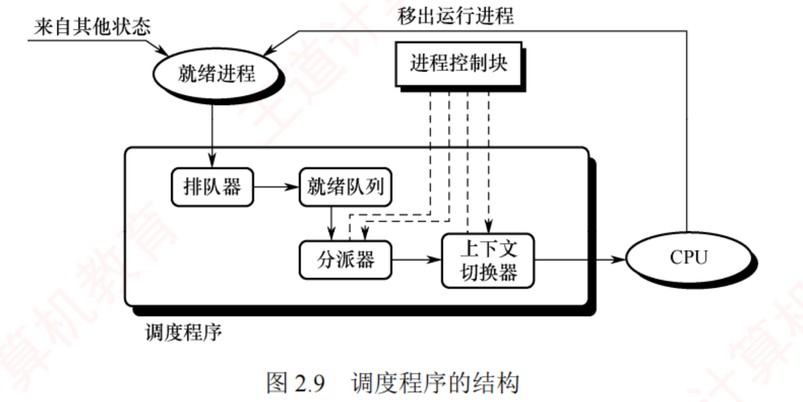
图 2.9 调度程序的结构（p.68）——实线是进程流、虚线是数据流 ：就绪进程经排队器 进入就绪队列，分派器 取出后交给上下文切换器 送上 CPU；顶上那个「进程控制块」用虚线 连向分派器与切换器，表示它们读写的都是 PCB 。右上角「移出运行进程」那条回边，就是被剥夺的进程重新变成"就绪进程"的路径。
我的补讲 · "两对上下文切换"是个容易被略过的数字，但它解释了开销从哪来
书上强调切换发生"两对" → 潜台词是：中间还夹了一个分派程序 自身的上下文 →
所以能考的是「一次进程切换涉及几次现场保存/恢复」。 逐步数：存旧进程现场（1）→ 装分派程序现场（2）→ 卸分派程序现场（3）→ 装新进程现场（4）。
这也是为什么书上紧接着说"要执行大量 load/store" ——不是一次，是四趟。⚠️ 但考试里问"上下文切换开销"时，标准答案仍是"保存和恢复寄存器 + 更新页表基址 + TLB 失效"，
别把"两对"当成答题要点写上去，它只是帮你理解为什么贵。
我的补讲 · 调度程序的三个部件，各对应"调度任务"的哪一项
书上先讲三项调度任务、又讲三个部件 → 潜台词是：它们是一一对应的 →
所以能考的是"上下文切换器完成的是哪一步"。
三项任务 由哪个部件完成 ① 保存 CPU 现场信息到 PCB 上下文切换器 ② 选取待运行进程（改状态为运行态） 排队器 ＋ 调度算法 （谁排队、选谁）③ 完成 CPU 分配（把现场装回寄存器） 分派器 ＋ 上下文切换器
⚠️ 注意"分派器（dispatcher）"与"调度程序（scheduler）"不是一回事：
scheduler 决定选谁（决策），dispatcher 负责把 CPU 真交出去（执行） ——
这正是 2.2.4 那条"调度 vs 切换"的部件级说法。 必记 · 需要调度的四种时机 考点追踪 · 2012、2021
① 创建新进程后 ：父子都就绪，需决定先跑谁（调度程序可以合法地选择其中一个 ）。② 进程正常结束或异常终止后 ：必须另选一个；若没有就绪进程，则运行闲逛进程 。③ 进程因 I/O 请求、信号量操作或其他原因被阻塞时 。④ I/O 设备就绪、发出 I/O 中断后 ：原等待进程转就绪，需决定让它上还是让被中断的进程继续。支持抢占的系统中 ，更高优先级进程进入就绪队列 或当前进程时间片用完 也会触发调度。
陷阱 · 两种不能 进行调度与切换的情况（这才是 2012/2021 的落点）
① 处理中断的过程中。 中断处理逻辑复杂、难以安全切换；且中断处理属内核工作，
逻辑上不隶属于任何用户进程，不应被剥夺 CPU 。② 执行原子操作的过程中。 加锁/解锁、中断现场的保护与恢复等要屏蔽中断 以保证原子性，
连中断都被禁止，更不应调度切换 。若在这期间发生了调度条件，系统会设置一个「调度请求标志」 ，
待临界区或中断处理完成后再据此执行调度与切换。 ⟹ 一句话记法：「中断里不换人，原子操作里不换人，但会记账（置标志），出来再换。」
我的补讲 · 四种调度时机可以按"谁把 CPU 让出来"分成两组，一组必然调度、一组不一定
书上把四条并列 → 潜台词是：其中有两条是"必须调度"、两条是"可以选择" →
所以能考的是"下列哪种情况一定会引起进程调度"。
时机 CPU 空出来了吗 一定调度吗 ② 进程正常结束/异常终止 空了 一定 （没就绪进程就跑闲逛进程）③ 进程因 I/O 或信号量被阻塞 空了 一定 ① 创建新进程后 没空（父进程还能跑） 不一定 ——"调度程序可以 合法地选择其中一个"④ I/O 完成、有进程转就绪 没空 不一定 ——取决于是否抢占
⟹ 判据一句话：CPU 被腾空了就必须调度；只是"多了一个候选人"则要看抢占策略。 我的补讲 · 这条与 OS ch1 那条"进程切换发生在内核态"合起来才是完整答案
书上说"调度程序是 OS 内核程序""三个步骤理论上按顺序执行" → 潜台词是：
请求调度（事件）→ 运行调度程序（决策）→ 进程切换（执行） 是三件不同的事 →
所以能考的是「哪一步一定在内核态、哪一步可能被推迟」。
步骤 在哪一态 能否被推迟 ① 请求调度的事件发生 用户态也可能 （如时间片到、系统调用）不适用 ② 运行调度程序（决策） 内核态 能 ——中断中/原子操作中要延后③ 进程切换（执行） 内核态 跟着 ② 一起延后
⟹ 这正好接上 OS ch1 那条 2024 真题的分界线：「进程切换的发生 与执行 都在内核态，
这是所有事件里唯一一个连'发生'都在内核态的」。 知识串联 · 「调度请求标志」＝ 组原的「中断请求触发器」＝ 延迟处理的通用套路
延迟处理 "现在不能做，先记一笔，出来再做"这个套路在 408 里到处都是：
场景 记在哪 什么时候真正处理 本节：中断/原子操作期间来了调度条件 调度请求标志 临界区或中断处理完成后 组原 ch5：中断被屏蔽 中断请求触发器保持为 1 屏蔽字解除后 2.1.6：信号被阻塞 PCB 里的待处理位向量 解除阻塞并返回用户态时 组原 ch5：一条指令执行中来了中断 请求线保持有效 指令执行完
⟹ 四处的共同点：请求不会丢，只会被推迟 。凡是问"此时中断/调度请求会被忽略吗"，答案都是"不会，会被挂起等待"。 必记 · 两种调度方式
非抢占（非剥夺） ：即使有更紧迫的进程到达，仍让当前进程跑到完成 或主动阻塞 （等 I/O、执行 Block 原语）才交出 CPU。
优点 实现简单、开销小，适用于早期批处理；缺点 无法满足分时系统和大多数实时系统的及时响应要求 。抢占（剥夺） ：出现更高优先级就绪进程时可暂停当前进程。优点 提高吞吐率和响应效率。
⭐ 但"抢占"必须遵循一定的原则，主要有优先级原则、短进程优先原则和时间片原则 。
我的补讲 · 抢占式的三条"原则"是干什么用的
书上说"抢占必须遵循一定的原则，主要有优先级、短进程优先和时间片原则" →
潜台词是：抢占不是"想抢就抢"，必须有依据 → 所以能考的是"下列哪种做法体现了抢占原则"。
原则 什么时候抢 对应算法 优先级原则 来了更高优先级的进程 抢占式优先级调度 短进程优先原则 新来的进程比当前进程的剩余时间 更短 SRTN（最短剩余时间优先） 时间片原则 当前进程的时间片用完 时间片轮转 RR
⟹ 三条原则恰好对应 2.2.5 里三种可抢占的算法。反过来，FCFS 与高响应比优先没有对应的抢占原则，所以它们是非抢占的。 必记 · 闲逛进程（考纲点名的冷词）
系统中没有就绪进程时运行的进程，PID 为 0 。
⭐ 优先级最低 ，一旦有新进程进入就绪队列就立即让出 CPU ；
主要任务是在空闲循环中不断检测中断请求 。
⭐⭐ 不占用除 CPU 外的其他系统资源，也不会因等待事件而被阻塞。
我的补讲 · 闲逛进程的四条属性，每一条都是一个判断题
书上用四句话交代闲逛进程 → 潜台词是：它是一个"哪儿哪儿都例外"的进程 →
所以能考的是「关于闲逛进程，下列说法错误的是」。
属性 常见错误说法 PID = 0 说成 PID = 1（那是 Linux 的 init，两码事） 优先级最低 说成"最高，因为它总在跑" 不会阻塞 说成"等待中断时进入阻塞态"——它是轮询 检测，不是等待 不占 CPU 外的资源 说成"占用少量内存所以算占资源"
⚠️ 第三条最值钱：闲逛进程永远处于就绪或运行 ，从不进阻塞队列——
否则系统就会出现"一个可运行进程都没有"的空档。 我的补讲 · 闲逛进程存在的真正理由：让"调度程序"永远有得选
书上只说"没有就绪进程时运行它" → 潜台词是：它把"没进程可跑"这个特例消灭 了 →
所以能考的是"系统中就绪队列为空时 CPU 在做什么"。 没有闲逛进程会怎样？ 调度程序会遇到"选不出进程"的情况，
必须写一段特殊的空转代码，还要处理"这段代码算谁的时间" 。
做成一个 PID＝0、优先级最低的进程之后，调度程序的逻辑就统一了：永远从就绪队列里选优先级最高的 ，闲逛进程垫底兜着。 ⟹ 这是操作系统里非常典型的一招：用一个"哨兵"消灭边界情况 。
数构里的带头结点的单链表 、顺序查找的哨兵位 用的是完全一样的思路。
知识串联 · 「调度」这个词在 408 五门课里的统一形式
调度的三要素 无论调度的是 CPU、内存、磁盘臂还是链路，任何一个调度问题都由三样东西定义：
要素 本节（CPU 调度） OS ch5（磁盘调度） ① 候选集 就绪队列 待处理的磁道请求 ② 选择规则 FCFS / SJF / 优先级 / RR FCFS / SSTF / SCAN ③ 触发时机 四种调度时机 ＋ 抢占条件 上一个请求服务完
⟹ 做任何调度题都先问这三句：谁在排队？按什么挑？什么时候挑？
这三问答完，甘特图就能画了。 知识串联 · 闲逛进程 ↔ 组原「CPU 的空转与中断查询」
中断查询 组原 ch7 讲程序查询方式时，CPU 在 while(!ready); 里空转叫忙等 ；
本节的闲逛进程干的正是这件事——在空闲循环中不断检测中断请求 。差别在于"谁在忙等" ：组原那里是用户程序 在等自己的 I/O（浪费），
这里是系统 在没活可干时兜底（不浪费，因为本来也没人要 CPU）。⟹ 因此不能拿"忙等浪费 CPU"去否定闲逛进程——这是 2.3 学到"忙等 vs 让权等待"后最容易串错的一处。
我的补讲 · 用户级线程调度的"两级"结构，画出来就不会答错
书上说"内核仍以进程为单位调度，CPU 给进程后由线程库决定跑哪个线程" →
潜台词是：ULT 下存在两层调度 → 所以能考的是"用户级线程的调度由谁完成"。
内核调度器看得见：进程
→ 把 100 ms 给进程 B →
线程库调度器在用户态
→ 在 B 的 100 个线程间分 →
某个用户级线程拿到 1 ms
⟹ 两层各管各的：第一层由 OS 内核做（进程之间），第二层由线程库做（进程内部，不进内核） 。
KLT 则只有一层——内核直接选线程。这就是"KLT 切换要陷内核、ULT 不用"的结构性原因。 知识串联 · 闲逛进程 ↔ 数构的"哨兵结点"，同一种消灭边界情况的手法
哨兵 用一个"永远存在的假成员"来消灭特例，这在 408 里至少三处：
场景 哨兵是谁 消灭了什么特例 2.2 闲逛进程 PID＝0、优先级最低 "就绪队列为空"这个特例 数构 带头结点的链表 头结点 "在表头插入/删除"要特殊处理 数构 顺序查找的哨兵位 A[0] 存待查值循环里的越界判断
⟹ 三处的共同收益：主逻辑变成一条直线，不用写 if 特判 。
这也是为什么闲逛进程"优先级最低"——它必须保证只在没别人时才被选中 ，否则就成了干扰。 必记 · 两种线程的调度
用户级线程 ：内核不知道线程存在，仍以进程 为单位调度 ，CPU 给进程后由线程库决定跑哪个线程；
切换只需保存少量寄存器，开销极小 ；但一个线程阻塞会导致整个进程阻塞 。内核级线程 ：内核直接选择的是特定线程 而非进程 ，每个线程可被单独赋予时间片；
⭐ 切换涉及完整上下文切换、地址空间更新（跨进程时）以及可能的 TLB 刷新和缓存失效 ，
开销远高于用户级线程，通常高出数倍。
📄 p.70
2.2.3 调度的目标（本节所有计算题的公式来源）
知识串联 · 内核级线程切换要"刷 TLB"的条件，比想象中窄
TLB 失效 书上说 KLT 切换涉及"地址空间更新（
在跨进程线程间 ）以及可能的 TLB 刷新和缓存失效"。
括号里那句限定很重要：
KLT 切换的情形 换地址空间吗 刷 TLB 吗 同一进程内的两个 KLT 不换 （共享地址空间）不刷 不同进程的两个 KLT 换 要刷 （或靠 ASID 区分）
⟹ 所以"KLT 切换开销大"这句话，大的主要是陷入内核那部分 ；
只有跨进程时才额外背上 TLB 的代价。
组原 ch3 讲 TLB 时若问"什么操作会导致 TLB 全部失效"，答案是进程切换 ，不是"线程切换"。 知识串联 · 「响应时间 vs 周转时间」的取舍 ＝ 计网「时延 vs 吞吐量」的取舍
延迟与吞吐 书上说"交互式系统里响应时间比周转时间更有意义"，
这与计网里"时延敏感型业务 vs 带宽敏感型业务"是同一组取舍：
关心"快点开始" 关心"总共多久干完" OS 调度 响应时间 （分时系统）周转时间 / 吞吐量 （批处理）计网 时延 （语音、游戏）吞吐量 （文件下载）典型手段 小时间片、抢占、优先级 大时间片、批量、减少切换
⟹ 第三行解释了为什么"不存在一种调度算法能同时满足所有目标"：
小时间片改善响应但增加切换开销、降低吞吐；两者天然对立。 必记 · 五个指标与四条公式 考点追踪 · 2012、2016、2018、2019、2023、2024
CPU 利用率 ＝ 有效工作时间 ÷（有效工作时间 ＋ 空闲等待时间）
周转时间 ＝ 作业完成 时间 − 作业提交 时间
带权周转时间 ＝ 周转时间 ÷ 作业实际运行 时间
响应比 ＝（等待时间 ＋ 估计运行时间）÷ 估计运行时间
系统吞吐量 ＝单位时间完成的作业数（
长作业降低吞吐量，短作业提升吞吐量 ）。
等待时间 ＝在
就绪队列 中等 CPU 的总时间。
响应时间 ＝从提交请求到系统
首次产生响应 的时间（
交互式系统里比周转时间更有意义 ）。
⭐
调度算法不改变 作业的实际执行时间和 I/O 时间，只改变它在就绪队列中的等待时长
——所以"等待时间"是评估调度算法的核心指标。
⭐⭐
不存在一种调度算法能同时满足所有用户需求和系统目标。 我的补讲 · 五个指标里，哪些是"越大越好"、哪些是"越小越好"
书上把五个指标平铺 → 潜台词是：判断题最爱在"方向"上做手脚 → 先把方向钉死。
指标 方向 谁最关心 CPU 利用率 越大越好 系统管理员 系统吞吐量 越大越好 批处理系统 周转时间 / 带权周转时间 越小越好 批处理用户 等待时间 越小越好 评估调度算法的核心指标 响应时间 越小越好 分时/交互式用户
⚠️ 带权周转时间有个下界：它永远 ≥ 1 （周转时间至少等于运行时间）。
算出小于 1 的带权周转，一定是算错了——这是最好用的自查。 陷阱 · 书上专门加框的那句「注意」，是所有综合大题的命门
⚠️⚠️ 「在计算作业完成时间时，需注意 CPU 与 I/O 设备之间、以及不同 I/O 设备之间可以并行 执行。」 这句话的意思是：画时间轴时，CPU 一行、I/O₁ 一行、I/O₂ 一行，三行可以在同一列同时有色块 。
把它们串成一条线去加，答案必错。⟹ 2.2 综 02（作业 A/B 交替使用 CPU 与两台 I/O 设备）就是靠这一条区分 210 ms 与 220 ms 的：
我第一次转录时把作业 B 第三段的 I/O₂ 抄成了 I/O₁，两台设备就被并成一台，立刻算出 220 ms 的错误答案。
⚠️ 读题时把每一段用的是哪台设备逐字圈出来，这是本节最贵的一个习惯。
我的补讲 · "调度算法不改变实际运行时间"这句话是所有计算题的守恒律
书上用它解释"为什么等待时间是核心指标" → 潜台词是：它同时是一条可用来自查的守恒式 →
所以能考的是"换一种调度算法后，下列哪个量不会变"。
周转时间 ＝ 等待时间 ＋ 运行时间 ＋ I/O 时间
换算法后 变不变 各作业的运行时间、I/O 时间 不变 各作业的等待时间 会变 （这正是算法起作用的地方）周转时间 随等待时间一起变 所有作业的总运行时间之和 不变 ——可用来验算甘特图有没有漏画
⟹ 最后一行是考场自查法：把甘特图上属于 CPU 的色块加起来，必须等于各作业运行时间之和 。
对不上就是漏画或多画了。 我的补讲 · 周转时间类计算题的标准动作（六年真题都是这一套）
书上只给公式不给流程 → 潜台词是：流程要自己固化，否则考场上会漏项 →
所以能考的是"算错一格全盘皆错"这种题。 我固定按五步走：
步 动作 易错点 1 画三行时间轴 （CPU / I/O₁ / I/O₂），横轴对齐只画一行 ⟹ 丢掉并行 2 标出每个作业的到达时刻 "以 1,2,3 的顺序到达"可能全在 0 时刻 （见下）3 按算法逐段填色块，每次调度都写下"此刻就绪队列里有谁" 忘了刚到达的作业也要进队 4 读出每个作业的完成时刻 → 算周转 → 除运行时间得带权 拿"开始时间"当"完成时间" 5 求平均时分母是作业数 n 带权周转的平均是"先各自带权再平均"，不是"总周转 ÷ 总运行"
⚠️ 第 5 步的坑最隐蔽：平均带权周转时间 ＝ Σ(Tᵢ/Rᵢ)/n，不等于 (ΣTᵢ)/(ΣRᵢ)。
用表 2.2 验一下：Σ带权/4 ＝ 5.625，而 ΣT/ΣR ＝ 10/3.7 ≈ 2.70——差了一倍多。 知识串联 · 「CPU 与 I/O 可以并行」在组原那里叫「DMA / 通道方式」
设备并行 本节要求算完成时间时把 CPU 与 I/O 分行画，前提是
它们真能同时工作 。
这个前提由组原 ch7 的 I/O 控制方式提供：
I/O 控制方式（组原 ch7） 传输期间 CPU 能不能干别的 本节的时间轴能不能并行 程序查询（忙等） 不能 ，CPU 在死等不能并行 程序中断 能 （只在传每个字时打断一下）能 DMA / 通道 能 （整块传完才打断一次）能，且几乎完全并行
⟹ 所以那句"注意 CPU 与 I/O 可以并行"，隐含的前提是系统用的是中断或 DMA 方式 。
组原 ch7 里"周期窃取"这个词说的就是 DMA 与 CPU 争访存周期——那是唯一会互相拖慢的地方。 陷阱 · 中文题干的歧义：「以 1,2,3,4,5 的顺序到达」
2.2 综 04 的原话是「在时刻 0 以 1,2,3,4,5 的顺序到达」——它的意思是五个作业全部在 0 时刻到达 ，
"顺序"只是说明它们在队列里的先后，不是 "依次在 1、2、3、4、5 时刻到达"。 我第一次读就理解反了，算出来的甘特图整个错位。
⟹ 凡遇到"在时刻 X 以…的顺序到达"这种句式，必须回读原文确认到达时刻只有一个数。
更稳的做法：把每个作业的到达时刻抄成一张小表再动手，别在脑子里存。
📄 p.70
2.2.4 进程切换（本节最重要的分界线在这里）
我的补讲 · 甘特图题的三种常见变形，各自的加分点在哪
六年真题都在算周转时间，但题面每年换皮 → 把三种皮记住即可。
题面长什么样 关键动作 易错点 只给"到达时刻 + 运行时间" 单行时间轴即可 非抢占算法要等当前进程跑完才重新选 给"CPU 段 / I/O 段 交替" 必须画多行时间轴 不同 I/O 设备之间也能并行 给"时间片大小 + 上下文切换开销" 每次切换要额外加一段 最后一次跑完不需要再切换 ；进程主动结束也算一次切换
⚠️ 第三行是最容易多算/少算一次的地方。切换开销只在"换人"时发生 ，
同一个进程连续用两个时间片（前面没有别人排队）不产生切换。 必记 · 上下文切换五步 考点追踪 · 2024、2025
⭐ 进程上下文由其 PCB 表示，包括 CPU 寄存器的值、进程状态、内存管理信息等。 保存到它的 PCB → ② 把该 PCB 移入相应队列 （就绪队列或阻塞队列）
→ ③ 选择另一个进程 执行并更新其 PCB → ④ 恢复新进程的 CPU 上下文
→ ⑤ 跳转到新进程 PCB 中 PC 所指位置 开始执行。单次切换时间为微秒量级 ，但高负载下每秒数十上百次，累计消耗可观。
我的补讲 · 上下文切换五步里，第 ② 步决定了这个进程"去哪儿"
书上第 ② 步写"把 PCB 移入相应的队列，例如就绪队列，或因等待某事件而进入的阻塞队列" →
潜台词是：同样是上下文切换，被换下的进程去向不同 → 所以能考的是"进程被换下后处于什么状态"。
换下的原因 PCB 进哪个队列 新状态 时间片用完 / 被抢占 就绪队列 就绪 请求 I/O、执行 P 操作被阻塞 对应事件的阻塞队列 阻塞 进程终止 不入任何队列，PCB 被回收 终止
⟹ 于是"上下文切换"这个动作本身是中性的，状态变成什么由原因决定 ，
这正是 2.1.4 那张状态转换图在调度层面的落实。 陷阱 · 上下文切换 vs 模式切换（2023/2024/2025 连考三年）
考点追踪 · 2023、2024、2025
模式切换 （用户态↔内核态）上下文切换 （换进程）进程变了吗 没变，同一进程内部 变了，从一个进程到另一个 要不要存 PCB 不涉及上下文切换 必须保存旧的、恢复新的 谁能做 硬件 + 内核 只能由内核完成，全程在内核态 典型触发 系统调用、中断、异常 时间片到、阻塞、被抢占
⟹ 一句话：模式切换是换"身份"，上下文切换是换"人"。
发生一次上下文切换必然伴随模式切换（要进内核）；但发生模式切换不一定 有上下文切换（大多数系统调用完就原路返回）。 我的补讲 · 一次系统调用里到底发生了几次模式切换
书上说模式切换"发生在同一进程内部"、"完成后返回用户态继续执行该进程" →
潜台词是：一次系统调用有去和回 两次模式切换 → 所以能考的是"执行一次系统调用发生几次模式切换/上下文切换"。
过程 模式切换 上下文切换 系统调用（不阻塞） ：用户态 → 内核态 → 用户态2 次 0 次 系统调用（阻塞，之后被唤醒重新调度） 2 次以上 至少 1 次 时钟中断且时间片到，换了进程 2 次 1 次 时钟中断但时间片没到 2 次 0 次
⟹ 最后一行最能说明问题：每次时钟中断都有模式切换，但绝大多数没有上下文切换 。
这就是"模式切换 ≠ 上下文切换"的量化版本。 必记 · 调度 vs 切换（书上专门加了「注意」框）
⭐⭐ 调度是决策 行为——决定把 CPU 分配给哪个进程；切换是执行 行为——实际完成 CPU 控制权的转移。
通常先由调度程序做出决策，随后触发上下文切换来实现它。
我的补讲 · 2023 那道「进程调度前后 CPU 模式的变化」怎么答
书上说"进程切换同样是在内核的支持下实现的" → 潜台词是：调度前后 CPU 一定经过 内核态 →
所以能考的是"调度发生前后 CPU 的运行模式序列是什么"。
完整序列 ：
用户态（老进程在跑）→ 内核态（响应中断/系统调用 → 跑调度程序 → 上下文切换）→ 用户态（新进程开始跑） 。
用户态老进程
陷入中断/系统调用
内核态调度 + 切换
返回IRET
用户态新进程
⚠️ 两个细节：① 调度程序本身永远在内核态跑 ；
② 若被调度的是内核线程或系统进程，最后一步可能仍在内核态——但 408 的题默认是用户进程。 知识串联 · 「两组寄存器减少切换开销」是组原 ch5 的原话
多组寄存器 本节说"通常采用两组寄存器，一组供内核使用，另一组供用户使用，切换时只需改指针"。
组原 ch5 讲 CPU 内部结构时给的是同一件事的硬件侧 ：现代 CPU 用寄存器组（register file）+ 重命名 ，
某些架构（如 SPARC）甚至用寄存器窗口 ，函数调用时滑动窗口而不真的存栈。⟹ 于是 OS 的"上下文切换开销大"与组原的"寄存器窗口/多组寄存器"是同一个问题的两侧：
软件想少存点，硬件就多给几组。
考试里若问"下列哪种硬件支持能减少上下文切换开销"，答案就是"多组寄存器"。
📄 p.71
2.2.5 CPU 调度算法
知识串联 · 「上下文切换全程在内核态」对上 ch1 的三条分界线
内核态 OS ch1 的 1.3 反复考"某个动作发生/执行在哪一态"，本节给了进程切换的确定答案：
事件 "发生"时在哪一态 "执行"时在哪一态 系统调用 用户态 （陷入指令在用户态执行）内核态 缺页异常 用户态 内核态 外中断 用户态或内核态 内核态 进程切换 内核态 内核态
⟹ 进程切换是唯一一个"连发生都在内核态"的事件 ——因为它由调度程序发起，而调度程序本身就是内核代码。
2024 真题把这条切得更细（"发生时"vs"开始执行时"），ch1 精读版里已单列，这里是它的机制解释。 必记 · ① 先来先服务 FCFS 考点追踪 · 2017
既可用于作业调度，也可用于进程调度 ；每次选最早进入队列 的。
⭐ 非抢占式。实现简单但效率低。 对长作业 有利、对短作业不利；对 CPU 繁忙型 作业有利、对 I/O 繁忙型作业不利。 常被结合到其他策略中：优先级调度里同优先级的多个进程，通常按 FCFS 处理。
我的补讲 · FCFS 的四条"有利/不利"要成对记，反着问就答不上来
书上一口气写了"对长作业有利、对短作业不利、对 CPU 繁忙型有利、对 I/O 繁忙型不利" →
潜台词是：这四条的理由其实只有一条 → 所以记理由比记结论稳。
唯一的理由：FCFS 不剥夺，谁先来谁一直占着 CPU 直到跑完或阻塞。
由这一条推出 为什么 对长作业有利 长作业一旦上台就不会被打断 对短作业不利 排在长作业后面要干等（带权周转时间被放大到 13.5） 对 CPU 繁忙型有利 它就是需要长时间占 CPU 对 I/O 繁忙型不利 它本可以用一下 CPU 就去做 I/O、让设备忙起来 ，却被堵在长作业后面
⟹ 最后一行与 2.2.5「I/O 型进程优先级更高」是同一个道理的正反两面。 必记 · 表 2.2 FCFS 的算例（4 个作业，一定要自己算一遍）
作业号 提交 运行 开始 等待 完成 周转 带权周转 1 8.0 2 8.0 0 10.0 2 1 2 8.4 1 10.0 1.6 11.0 2.6 2.6 3 8.8 0.5 11.0 2.2 11.5 2.7 5.4 4 9.0 0.2 11.5 2.5 11.7 2.7 13.5
平均等待 1.575 · 平均周转 2.5 · 平均带权周转 5.625。 我的补讲 · 表 2.2 的带权周转时间为什么会冲到 13.5，这个数字本身就是考点
书上算出作业 4 的带权周转时间是 13.5 → 潜台词是：短作业受长作业拖累的程度会被"带权"放大 →
所以能考的是"为什么要引入带权周转时间"。
作业 4 只需运行 0.2，却等了 2.5、周转了 2.7 ⟹ 带权 ＝ 2.7 ÷ 0.2 ＝ 13.5 。
而作业 1 运行 2、周转 2 ⟹ 带权 ＝ 1（完全没等）。
指标 作业 1（长） 作业 4（短） 说明什么 周转时间 2 2.7 差别不大，看不出问题 带权周转时间 1 13.5 差 13 倍，问题一目了然
⟹ 这就是带权周转时间存在的意义：它衡量的是"相对等待程度"，能暴露出周转时间掩盖的不公平 。 必记 · ② 短作业优先 SJF 考点追踪 · 2016、2017
按预计运行时间 调度；用于进程调度时称短进程优先 SPF 。三条缺点 ：① 对长作业不利 ，甚至长作业饥饿 （不断有短作业到达时长作业永远排不上）；
② 未考虑作业的紧迫程度 ；③ "长短"由用户估计值决定，用户可能故意低估以获取调度优势 。SPF 既可非抢占（默认），也可抢占；抢占式版本称最短剩余时间优先 SRTN
——新进程到达时若其估计运行时间比当前进程的剩余 执行时间更短，立即抢占。 「当所有作业同时到达 且运行时间已知时，SJF 的平均等待时间和平均周转时间是最优的。」
我的补讲 · SJF 那句"最优"的两个前提，缺一个结论就不成立
书上加框写"当所有作业同时到达 且运行时间已知 时，SJF 的平均等待与平均周转最优" →
潜台词是：这两个前提是命题人最爱删掉的东西 → 所以能考的是"SJF 一定能得到最短平均周转时间吗"。
前提 去掉后 所有作业同时到达 不再最优 ——陆续到达时，SRTN（抢占式）才可能更优 运行时间已知 只能靠估计 ，而"用户可能故意低估"（书上第三条缺点）
⚠️ 表 2.3 本身就是"不同时到达"的例子（提交时刻 8.0/8.4/8.8/9.0），
所以那三个平均值并不是理论最优 ，只是比 FCFS 好。别把表 2.3 当成"最优"的证据。 知识串联 · 表 2.2 与表 2.3 的对照，是"局部最优 vs 全局公平"的第一课
公平与效率 同一组作业换个算法，平均值变好了但个别变差了——
这个现象在 408 里还会遇到三次：
场景 整体变好 谁被牺牲 2.2 FCFS → SJF 平均周转 2.5 → 2.1 作业 2：2.6 → 3.3 2.3 读者优先 读者吞吐量最大 写者（可能饿死） OS ch5 SSTF 磁盘调度 平均寻道时间最短 远离磁头的请求
⟹ 三处的解法也一致：引入"等待时间"这个维度 （高响应比 / 门卫 w / SCAN）。
记住这条线索，任何"某算法会不会饿死谁"的题都能现推。 必记 · 表 2.3 SJF 的算例（同一组作业，与表 2.2 对照着看）
作业号 提交 运行 开始 等待 完成 周转 带权周转 1 8.0 2 8.0 0 10.0 2 1 2 8.4 1 10.7 2.3 11.7 3.3 3.3 3 8.8 0.5 10.2 1.4 10.7 1.9 3.8 4 9.0 0.2 10.0 1 10.2 1.2 6
平均等待 1.175 · 平均周转 2.1 · 平均带权周转 3.525 ——三项都优于 FCFS。
关键一步：t ＝ 10 作业 1 结束时队列里有 2(1)、3(0.5)、4(0.2)，按最短依次是 4 → 3 → 2，
所以开始时刻是 10 / 10.2 / 10.7。 知识串联 · SJF 的"贪心"与数构里的贪心算法是同一族
贪心策略 SJF 每次都挑"当前最短的"，这正是
贪心算法 ：只看眼前最优，不回头。
算法 每步贪什么 全局最优吗 本节 SJF 当前最短作业 仅在"同时到达"时最优 数构 哈夫曼树 每次合并权值最小的两棵 是 （可证明）数构 Prim/Kruskal 每次加权值最小的边 是 数构 Dijkstra 每次选距离最小的顶点 是（无负权时）
⟹ 这张表提醒的是：贪心不总是最优，能不能最优取决于问题是否具备"最优子结构" 。
SJF 之所以只在"同时到达"下最优，就是因为陆续到达破坏了这个结构。
2.4 银行家算法的安全性检查也是贪心（能满足谁就先推谁），但那里贪心是正确 的——
因为"某个进程能完成"这件事一旦成立就不会因为先推别人而失效。 我的补讲 · 拿这两张表对照，能一次看清"谁被牺牲了"
书上把同一组作业算了两遍 → 潜台词是：这是让你亲眼看到"平均值变好"的代价 →
所以能考的是「换成 SJF 后哪个作业变差了」。
作业 FCFS 周转 SJF 周转 变化 1（最长，2） 2 2 不变（它先到且先跑） 2（次长，1） 2.6 3.3 变差 —— 被 3、4 插队 3（0.5） 2.7 1.9 变好 4（最短，0.2） 2.7 1.2 变好最多 平均 2.5 2.1 整体变好
⟹ 这就是"平均最优 ≠ 人人变好"。SJF 把短作业的收益建立在长作业的等待上 ，
推到极端就是饥饿。 能说出"作业 2 从 2.6 变成 3.3"这一句，饥饿类的题就再也不会被绕晕。 我的补讲 · SRTN 的抢占判据里，"剩余"两个字是全部
书上说 SRTN 是"新进程的估计运行时间比当前进程的剩余 执行时间更短就抢占" →
潜台词是：比较的两个量不对称（一个是全长、一个是剩余）→ 所以能考的是甘特图题里"该不该抢"。
比较的双方 用哪个量 新到达的进程 它的全部运行时间 （还没跑过）正在运行的进程 剩余时间 ＝ 总运行时间 − 已跑时间
⚠️ 做题时必须在时间轴旁边维护一列"各进程剩余时间"，每推进一格就更新。
拿"总运行时间"去比较是 SRTN 题最常见的错法。
⟹ 另外记住：SRTN 只在"有新进程到达"这一刻才需要重新判断 ，
中途不会无缘无故抢占——这能省掉大量无效比较。 陷阱 · 饥饿 ≠ 死锁（2016 直接考这个词）
⭐⭐
饥饿是由调度策略 导致的无限期等待 （系统一直在正常运行，只是永远轮不到它）；
死锁是循环等待 （相关进程全都停住，谁也推不动）。
饥饿 死锁 系统整体 照常推进 相关进程全部停滞 成因 调度策略不公平 四个必要条件同时成立 典型例子 SJF 下的长作业 、静态优先级下的低优进程2.4 的哲学家全拿左筷 解法 老化（等待越久优先级越高） 、高响应比预防/避免/检测解除
⟹ 记法：「饥饿是被插队插到死，死锁是大家一起卡住。」 我的补讲 · 饥饿的两个"解药"，2.2 和 2.4 各出现一次
书上在 SJF 处提饥饿、在高响应比处说"能避免饥饿" → 潜台词是：解药只有一种思路 →
所以能考的是"下列哪种机制能防止饥饿"。
唯一的思路：让等待时间反过来提高被选中的机会 （老化 aging）。
在哪 怎么老化 本节 高响应比优先 响应比 ＝ 1 ＋ 等待/运行 ，等待越久越高本节 动态优先级 "优先级随等待时间的增加而提高" 本节 多级反馈队列 降级后时间片变长，且最低级仍用 RR 保证公平 2.4 死锁解除 资源剥夺法要防止被挂起的进程饥饿 （同样靠老化）
⚠️ 注意静态优先级 不具备老化能力，所以书上明说它"可能出现低优先级进程长期得不到调度的饥饿现象"。 必记 · ③ 高响应比优先 HRRN
主要用于作业调度 ，是 FCFS 与 SJF 的
综合平衡 ；每次选
响应比最高 的。
响应比 R ＝（等待时间 ＋ 估计运行时间）÷ 估计运行时间 ＝ 1 ＋ 等待时间 ÷ 运行时间
①
等待时间相同时，运行时间越短响应比越高 （像 SJF）；
②
运行时间相同时，等待越久响应比越高 （像 FCFS，体现公平）；
③ ⭐
长作业的响应比随等待时间不断提高，最终会被调度 ⟹ 有效避免饥饿。 我的补讲 · 高响应比"主要用于作业调度"这个限定，是它与其他算法的一处差别
书上给 FCFS 和 SJF 都写了"既可用于作业调度也可用于进程调度"，唯独给高响应比写"主要 用于作业调度" →
潜台词是：它的计算代价太高，不适合几十毫秒一次的进程调度 → 所以能考的是表 2.4 里"计算响应比开销大"这条缺点。
算法 作业调度 进程调度 为什么 FCFS ✅ ✅ 只需看队首，代价 O(1) SJF / SPF ✅ ✅（称 SPF） 选最小，代价可接受 高响应比 ✅ 主要 不适合 每次调度都要给所有 等待作业重算响应比 RR / 多级反馈 — ✅ 本来就是为进程调度设计的
⟹ 这也解释了表 2.4 里为什么给它写"适用于：无"——它谁都不特别适合，是个折中方案。 我的补讲 · 把响应比改写成 1 + 等待/运行，三条性质就不用背了
书上给的是 (等待+运行)/运行 这个形式 → 潜台词是：它其实是 1 ＋ 等待/运行 →
所以能考的是"为什么它能兼顾两头"。 看这个改写形式：分子是"等了多久"（越久越该给），分母是"要用多久"（越短越该给），
三条性质全在这一个分式里，一眼可见。 ⚠️ 两个易错点： ① 响应比要在每次调度时刻重算 （等待时间在变），不是一次算完排好序；
② 书上写它「适用于：无」 （表 2.4 里 FCFS 和 HRRN 的"适用于"一栏都是"无"）——
这是王道的口径，别自己填成"批处理系统"。
知识串联 · 响应比公式 ＝ 计网里"加权公平"的同一种思想
加权公平 "把等待时间放进分子、把服务量放进分母"这个构造，在 408 里出现过三次：
场景 公式形态 效果 本节 高响应比 (等待 ＋ 运行) ÷ 运行 短作业占便宜，但长作业靠等待翻身 2.2 保证调度算法 公平比率 ＝ 实际获得 ÷ 应获得 ，选比率最小的 谁吃亏谁先上 计网 加权公平队列 WFQ 按权重分配带宽 各流按比例共享链路
⟹ 三处的共同结构是：拿"应得"去除"已得"，用比值决定下一个服务谁 。
记住这一个结构，保证调度算法那一小段（考纲外围）也不用单独背。 必记 · ④ 优先级调度 考点追踪 · 2010、2013、2016、2018、2022、2023、2025
按是否抢占分两类 ：非抢占式 （等当前进程因自身原因让出 CPU 才换）／
抢占式 （更高优先级进程一到就立即 暂停当前进程）。按是否可变分两类 ：静态优先级 （创建时定、终生不变；依据进程类型、资源需求、用户指定；
实现简单开销小，但不灵活、可能饥饿 ）／
动态优先级 （随推进或等待时间调整，如等待越久优先级越高 ）。三条设置原则 ：① 系统进程 > 用户进程 ；② 交互型 > 非交互型（前台 > 后台） ；
③ ⭐⭐ I/O 型进程 > 计算型进程 。
我的补讲 · 优先级调度的四种组合，题干只要给两个词就能定位
书上把"抢占/非抢占"与"静态/动态"分成两组讲 → 潜台词是：它们是正交 的两个维度，可以自由组合 →
所以能考的是"某系统采用抢占式动态优先级，下列描述正确的是"。
静态优先级 动态优先级 非抢占 最简单；会饥饿 等待久了会升优先级，但要等当前进程让出 抢占 适合实时系统 （2.2.7 原话）最灵活 ，接近多级反馈队列的效果
⟹ 两个维度问的是不同的事：抢占与否 ＝ "来了高优先级的立刻换人吗"；
静动与否 ＝ "优先级这个数字本身会不会变"。
2018 考非抢占式、2022/2023 考抢占式、2016 考静态 vs 动态、2010 考"什么时候该调整优先级"——四道题各占一格。 我的补讲 · 「I/O 型优先」这条反直觉，理由必须能说出来
书上给的理由是"I/O 设备速度远低于 CPU，让 I/O 型进程尽快启动 I/O，设备就能尽早开工" →
潜台词是：这是在提高设备并行度 ，不是在照顾"可怜的慢进程" →
所以能考的是 2013 那道「I/O 型和计算型的优先级该怎么设」。 正确的因果链 ：I/O 型进程用一小会儿 CPU 就去阻塞 ⟹ 让它先跑，CPU 很快就还回来 ，
同时设备开始工作 ⟹ CPU 与设备同时忙 ⟹ 吞吐量上升。反过来：让计算型先跑，设备就一直闲着，等它跑完再启动 I/O，总时间被拉长。 ⟹ 这条与 2.2.3 那个「CPU 与 I/O 可以并行」的注意框是同一件事的两种说法：
一个说"算的时候别忘了并行"，一个说"调度的时候要制造 并行"。
我的补讲 · 优先级三原则里，前两条其实是同一条
书上列了"系统 > 用户""交互 > 非交互""I/O 型 > 计算型"三条 →
潜台词是：前两条讲的是紧迫性 ，第三条讲的是系统吞吐 ，理由完全不同 →
所以能考的是"下列优先级设置的理由是什么"。
原则 理由类型 一句话 系统进程 > 用户进程 紧迫性 系统进程管着核心资源，卡住它全系统受影响 交互型 > 非交互型（前台 > 后台） 用户在等着看结果 I/O 型 > 计算型 吞吐量 让慢设备尽早开工，制造 CPU 与设备的并行
⟹ 第三条是唯一"不为了谁着急，而为了整体效率"的原则，也是最容易被问理由的一条。 必记 · ⑤ 时间片轮转 RR 考点追踪 · 2017、2021、2024
主要适用于分时系统，最大特点是公平性 ；就绪队列按 FCFS 原则 组织。
每隔一个时间片 产生一次时钟中断 ，激活调度程序，把 CPU 给队首 进程；
时间片用完即使没跑完也必须被剥夺，重新放入就绪队列末尾 。两个调度时机 ：① 时间片结束前 就跑完了 ⟹ 立即激活调度程序切换；
② 时间片用尽 ⟹ 由时钟中断处理程序 触发调度。时间片过大 ⟹ 退化为 FCFS；时间片过小 ⟹ 频繁切换，开销吃掉 CPU。
⭐ 合理值应略长于一次典型交互 所需时间 ；取值要综合考虑
期望响应时间、就绪队列进程数、系统处理能力 三因素。
我的补讲 · RR 的两个调度时机，对应两种不同的中断来源
书上把 RR 的调度时机分成"时间片内跑完"与"时间片用尽"两种 →
潜台词是：这两种的触发者不同 → 所以能考的是"时间片轮转下引起调度的是什么"。
情形 谁触发调度 属于哪类中断（ch1） 时间片结束前进程就跑完了 进程自己（终止/阻塞的系统调用） 内中断（陷入/异常） 时间片用尽仍未完成 时钟中断处理程序 外中断
⟹ 于是"RR 一定要有时钟中断支持"这句话有了准确含义：
第二种情形离开时钟中断就实现不了 ，而第一种情形不依赖时钟。
组原 ch7 里"时钟是最典型的外中断源"这句话，落点就在这里。 知识串联 · RR 靠时钟中断驱动 ↔ ch1 的中断机制 ↔ 组原 ch7 的程序中断方式
时钟中断 "每隔一个时间片产生一次时钟中断"这句话把三章缝在一起：
组原 ch7 说时钟是一种外中断 源、由中断请求线送到 CPU；
OS ch1 说外中断的处理要陷入内核态 、返回时执行下一条指令；
本节 说这次陷入内核后顺便运行调度程序、可能换人 。⟹ 于是"时间片到"这个事件的完整链条是：时钟硬件计数溢出 → 发中断请求 → CPU 在一条指令执行完 后响应
→ 保存断点与 PSW（硬件）→ 进内核跑时钟中断处理程序 → 更新时间片计数 → 若用完则置调度标志/直接调度 → 上下文切换。
这条链能整条背下来，2.2 和 ch1 的调度时机题就都是送分题。
我的补讲 · 时间片"过大退化为 FCFS"要能说出临界值
书上说时间片过大会退化成 FCFS → 潜台词是："过大"有一个可判定的界 →
所以能考的是"时间片至少多大时 RR 等价于 FCFS"。
临界值：时间片 ≥ 最长作业的运行时间 ⟹ 每个作业都能在一个时间片内跑完 ⟹ 完全等价于 FCFS。
时间片 RR 的行为 ≥ 最长运行时间 ＝ FCFS 适中（略长于一次典型交互） 正常的 RR，书上推荐值 → 0 切换开销吃掉全部 CPU ，理论上叫"处理机共享"
⚠️ 反过来的问法也常见："RR 什么时候等价于 FCFS" ——除了时间片够大，
还有一种情况：所有作业的运行时间都小于时间片 。两种说法是一回事。 背景 · 多级队列的"进程分类"举例，认名字即可
书上举的分类是系统进程、交互型进程、批处理进程 ，并说"每个队列对应一类具有相似特性的进程"。
这个分类既不唯一也不会被考具体名单 ——真题只会问队间调度规则 （高优先级队列全空才轮到低的）
与队内可用不同算法 这两条。⟹ 看到"多级队列"三个字，脑子里只需浮现两句话："各队各法" ＋ "高队优先" 。
必记 · ⑥ 多级队列 · ⑦ 多级反馈队列 考点追踪 · 2019、2020
多级队列 ：就绪进程分成多个独立就绪队列 （系统进程/交互型/批处理），
⭐ 每个队列可独立采用适合自己的算法 （交互型用 RR、批处理用 FCFS 或 SJF），
⭐ 各队列本身还有不同优先级：高优先级队列全空 时才调度低优先级队列。 多级反馈队列 ＝时间片轮转 ＋ 优先级 的综合与发展。三条机制：第 1 级优先级最高，依次降低；优先级越高时间片越小 ，第 i+1 级的时间片通常是第 i 级的 2 倍 。 队内用 RR；新进程先进第 1 级 队尾；时间片用完仍未完成 ⟹ 降到下一级队尾 ；
最低级队列时间片较长、行为接近 FCFS 但仍用 RR。 仅当第 1 ~ i−1 级全空时才调度第 i 级；
新进程进入第 1 级会立即抢占正在跑的低优先级进程 ，被抢占者放回原队列末尾 。 优势：既利于短进程（提高吞吐、缩短平均周转），又利于 I/O 型进程（提升设备利用率与响应速度），
且无须事先知道进程的运行时间 。
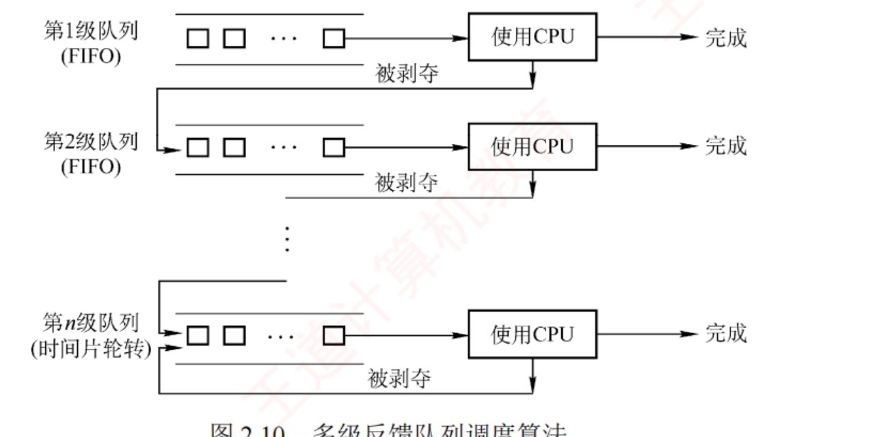
图 2.10 多级反馈队列调度算法（p.75）——看三样东西 ：① 每级队列右边都有一条「使用 CPU → 完成」的出口（说明任何一级都可能直接跑完 ）；② 每级下方的「被剥夺」箭头指向下一级队列的入口 （这就是降级）；③ 最低级（第 n 级）的"被剥夺"箭头回到自己 ——因为再没有更低的一级了，所以它退化成纯 RR。图上没有画的一条是"新进程只能从第 1 级进"，那是文字里的规定。
知识串联 · 多级反馈队列的"分层 + 逐级下沉" ↔ 组原存储层次 ↔ ch3 多级页表
分层结构 "分成若干层、上层小而快、下层大而慢、不满足就往下走"这个结构在 408 里出现三次：
场景 上层 下层 下沉的触发条件 本节 多级反馈队列 第 1 级，时间片小、优先级高 第 n 级，时间片长 时间片用完仍未完成 组原 ch3 存储层次 Cache（小而快） 主存 → 外存 不命中 OS ch3 多级页表 顶级页表（小） 下级页表（大） 需要更细的映射
⟹ 三处的设计动机一致：让"绝大多数情况"在最上层就解决掉，只有少数才付出下沉的代价 。
多级反馈队列的"绝大多数"是短进程与 I/O 型进程——它们从来用不完时间片，因此永远待在第 1 级。 我的补讲 · 多级反馈队列题的三个必查点（2019/2020 就靠它们区分选项）
书上把机制写成三条 → 潜台词是：命题人会各改一条造错误选项 → 所以能考的是"下列描述正确的是"。
查什么 正确 典型错误选项 时间片大小与优先级的方向 优先级越高，时间片越小 "越高越大"（记反） 降级的触发条件 时间片用完仍未完成 "因 I/O 阻塞而降级"（阻塞不降级 ） 新进程进哪一级 永远是第 1 级队尾 "按估计运行时间决定进哪级" 被抢占者去哪 回到原 队列末尾 "降一级"（被抢占不等于时间片用完 ） 要不要预知运行时间 不需要 "和 SJF 一样需要估计运行时间"
⚠️ 第 2、4 行是同一个坑的两面：只有"时间片耗尽"才降级 ；
主动阻塞、被高优先级抢占都不降级。
这也解释了为什么它"有利于 I/O 型进程"——I/O 型进程总是没用完时间片就阻塞了，因而长期赖在高优先级队列 。 我的补讲 · 多级队列与多级反馈队列的差别只有一个字：反馈
书上把两个算法分开讲、名字只差两个字 → 潜台词是：区别就在"进程能不能换队列" →
所以能考的是"下列哪个算法允许进程在队列之间移动"。
多级队列 多级反馈队列 进程能换队列吗 不能 ——按类型（系统/交互/批处理）固定归属能 ——时间片用完就降级队内算法 各队可以不同 （RR / FCFS / SJF）队内一律 RR 队间调度 都是"高优先级队列全空才轮到低的" 要不要预知运行时间 若队内用 SJF 则要 不需要
⟹ "反馈"两个字的含义就是：用进程过去的行为 （用没用完时间片）来决定它将来的优先级 。
这是它"无须事先知道运行时间"的根本原因——它靠观察，不靠预言。 背景 · 基于公平原则的两种算法，考纲外围，认名字即可
保证调度算法 ：给每个进程约 1/n 的 CPU 时间；
算公平比率 ＝ 实际获得 ÷ 应获得 ，选比率最小的跑，直到它的比率超过最接近它的那个进程 。公平分享调度算法 ：保证每个用户 获得相同（或按比例）的 CPU 时间。
书上的例子：用户 1 有 A/B/C/D 四个进程、用户 2 只有 E 一个，
要两人各半就排成 A E B E C E D E …；要用户 1 拿两倍就排成 A B E C D E …。这两个算法从没在真题里出现过，理解"对进程公平 ≠ 对用户公平"这一句就够了。
我的补讲 · 表 2.4 里三个最容易记错的格子
整张表 20 个格子，真正会考的就这三个。
格子 王道的口径 容易记成 SJF 能否抢占 可以 （抢占版即 SRTN）"SJF 是非抢占的"——只有默认版本是 FCFS / 高响应比"适用于" 都写"无" 填成"批处理系统" 多级反馈队列能否抢占 "队列内算法不一定" 直接写"可以"
⚠️ 第三个格子的措辞很微妙：队间 是会抢占的（新进程进第 1 级会抢占低级队列的进程），
但队内 用的是 RR，是否算"抢占"看怎么定义 ——王道给的答案是"不一定"，照抄即可。 知识串联 · 五种调度算法在 OS ch5 磁盘调度里的"对应物"，提前对上省一半时间
磁盘调度 ch5 的磁盘调度算法几乎是本节的原样翻拍：
本节 CPU 调度 ch5 磁盘调度 共同的优缺点 FCFS FCFS 公平、简单，但平均性能差 SJF / SPF SSTF（最短寻道时间优先） 平均最优，但远处的请求会饥饿 高响应比优先 SCAN（电梯算法） 靠"必然轮到"防止饥饿 时间片轮转 C-SCAN 更均匀，代价是多走空程
⟹ 第二、三行值钱：SSTF 会饥饿的理由与 SJF 一字不差，SCAN 防饥饿的理由与高响应比一字不差 。
读 ch5 时直接套本节的结论即可，那一节能省一半时间。 我的补讲 · 五种算法按"要不要预知未来 / 要不要时钟中断"分类，选择题一秒定位
表 2.4 是按优缺点排的 → 潜台词是：换两个维度重排，能直接回答另外两类问法。
算法 要预知运行时间吗 要时钟中断吗 FCFS 不要 不要 （非抢占）SJF / SRTN 要 SRTN 要 高响应比优先 要 （要估计运行时间）不要（非抢占） 时间片轮转 不要 要 多级反馈队列 不要 要
⟹ 两列各回答一类题："下列哪个算法无须事先知道进程运行时间" （答 FCFS/RR/多级反馈）、
"下列哪个算法必须有时钟中断支持" （答 RR/多级反馈/SRTN）。 必记 · 表 2.4 五种算法横向对照（背这一张就够应付辨析题）
先来先服务 短作业优先 高响应比优先 时间片轮转 多级反馈队列 能否抢占 否 可以 否 可以 队列内算法不一定 优点 公平，实现简单 平均等待、平均周转最优 兼顾长短作业 兼顾长短作业 兼顾长短作业，响应时间好，可行性强 缺点 不利于短作业 长作业饥饿，估计时间不易确定 计算响应比开销大 平均等待时间较长，切换浪费时间 最复杂 适用于 无 批处理系统 无 分时系统 相当通用
⚠️ 最后一行的两个"无"是王道的原始口径，做题按此记。 📄 p.77
2.2.6 多处理机调度
我的补讲 · 时间片大小的三个考量因素，各自往哪个方向拉
书上说要综合考虑"期望响应时间、就绪队列进程数、系统处理能力" →
潜台词是：这三个因素拉扯方向不同 → 所以能考的是"进程数增多时时间片应该怎么调"。
因素 它要求时间片 理由 期望响应时间短 小 响应时间 ≈ 进程数 × 时间片 就绪进程数多 小 否则轮一圈太久，最后一个等太长 系统处理能力强（切换快） 可以更小 切换开销占比低，切得起 切换开销大 大 否则真正跑用户代码的时间被吃掉
⟹ 一个可用的估算式：时间片 ≈ 期望响应时间 ÷ 就绪进程数 ，
再与"一次典型交互所需时间"比较，取略大者。 必记 · 两种结构 ＋ 两个矛盾 ＋ 两套方案
非对称多处理机 AMP ：主从式 ，一个主 CPU 负责全部调度决策 ，其余从 CPU 只执行；
主 CPU 维护全局就绪队列 。⭐ 实现简单，但主 CPU 在高负载下容易成为瓶颈。 对称多处理机 SMP ：所有 CPU 地位对等，均可参与调度 （本节主要讨论它）。两个核心矛盾 ：⭐ 处理器亲和性 （进程迁到另一个 CPU 要让原 CPU 的缓存失效、再重填新 CPU 的缓存，代价高 ）
与 负载平衡 （否则有的 CPU 闲、有的 CPU 挤）。
⭐⭐ 负载平衡通常会抵消处理器亲和性带来的好处，因此某些系统只有在不平衡达到一定程度后才触发迁移。 方案一 公共就绪队列 ：负载平衡好、亲和性差 ；改善亲和性靠
软亲和 （尽量留在原 CPU，但可迁移）与硬亲和 （用户通过系统调用绑定 到固定 CPU）；Linux 两者都有 。方案二 私有就绪队列 ：亲和性好、必须做负载平衡 ；靠
推迁移 （系统程序周期性 检查，从超载 CPU"推"出去）与拉迁移 （空闲 CPU 主动"拉"过来）；实际系统常两者结合 。
我的补讲 · AMP 与 SMP 的差别，用一句话记住并推出全部优缺点
书上分别描述了两种结构 → 潜台词是：差别只在"谁有资格跑调度程序" →
所以能考的是"非对称多处理机的主要瓶颈是什么"。
AMP（主从式） SMP（对称） 谁跑调度程序 只有主 CPU 任何 CPU 都可以 就绪队列 主 CPU 维护的全局队列 公共队列或各自私有队列 优点 实现简单 （无须多核间同步）可扩展、无单点瓶颈 缺点 主 CPU 在高负载下成为瓶颈 要处理多核同时改就绪队列的互斥
⟹ SMP 那条缺点正是 2.3 的用武之地：多个 CPU 同时访问就绪队列，本身就是一个临界区问题 ，
且因为是多核，只能用 TS/Swap 或自旋锁，不能用关中断 。 知识串联 · 处理器亲和性 ＝ 组原局部性原理在多核上的直接后果
局部性原理 组原 ch3 说 Cache 有效是因为时间局部性与空间局部性 ——
一个程序反复访问同一小块数据。把进程迁到另一个核，等于把它跟自己的 Cache 拆散 ，
之前积累的全部命中率 清零，还要在新核上从头预热。⟹ 这就是"亲和性"三个字的全部含义：不是玄学，是 Cache 命中率。
同一条局部性原理在 408 里至少还管着四件事：Cache 行大小的选择 · 页面置换算法（LRU 有效的前提）
· 磁盘预读 · TLB 的存在意义 。凡是看到"迁移/切换代价高"，第一反应就该是"缓存白热了"。
📄 p.78
我的补讲 · 亲和性与负载平衡的冲突，用一个具体数字感受一下
书上说"负载平衡通常会抵消处理器亲和性带来的好处" → 潜台词是：迁移不是免费的，
要算一笔账 → 所以能考的是"什么时候才应该迁移进程"。
要算的两笔账 大致量级 迁移的收益 ：目标核空闲，进程立刻能跑省下的排队时间，可能是毫秒级 迁移的代价 ：原核 Cache 全部作废、新核要重新预热几万到几十万次访存的命中率损失
⟹ 所以书上说"只有当不平衡达到一定程度后，才会触发进程迁移 "——
这个"一定程度"就是让第一行的收益盖过第二行的代价。
⚠️ 考试不会考具体数字，但要能说出"代价来自 Cache 失效"这一句，那是判分点。 2.2.7 本节小结
我的补讲 · 推迁移与拉迁移的区别，一个字：谁主动
书上给了两个名字 → 潜台词是：方向由"发起者"决定 → 所以能考的是"下列哪种是拉迁移"。
推迁移 push 拉迁移 pull 发起者 一个专门的系统程序 （周期性检查）空闲的那个 CPU 自己 时机 周期性 事件驱动 （我闲下来了）动作 从超载 CPU 队列里"推"走一些 从超载 CPU 队列里"拉"过来一些
⚠️ 两者的效果一样（都是把进程从忙的核挪到闲的核），区别只在谁发起、什么时候发起 。
书上明说"实际系统中常被结合使用"，所以"某系统只能用其中一种"是错误说法。 必记 · 哪些算法适合分时系统、哪些适合实时系统（小结里的原话）
⭐ FCFS 和 SJF 都无法保证在限定时间内响应，既不适用于分时系统，也满足不了实时系统。 优先级调度 按紧急程度赋优先级、优先服务高优先级任务，尤其适合实时系统 （通常配合抢占）。高响应比优先、时间片轮转、多级反馈队列 都能保证每个就绪进程在一定时间内获得 CPU，
更适合分时系统 。
我的补讲 · 软亲和与硬亲和的一处细节：谁在请求
书上说软亲和是"调度程序尽量保持"、硬亲和是"用户进程通过系统调用主动请求绑定" →
潜台词是：一个是 OS 的策略、一个是用户的权利 → 所以能考的是"下列关于处理器亲和性的说法"。
软亲和 硬亲和 谁决定 OS 调度程序 用户进程（系统调用） 能否迁移 能 （只是尽量不迁）不能 （绑死在指定 CPU 上）与负载平衡 可让步 不让步 ，可能导致负载不均
⭐ 书上点名：Linux 实现了软亲和，也支持硬亲和的系统调用 ——两者并存，不是二选一。 知识串联 · 书自己点名了：调度思想在 408 里至少复用五次
调度思想 小结末尾原话：
"还将接触到内存调度、磁盘调度、I/O 调度等多种资源调度问题，
将它们与 CPU 调度对比，会发现设计思想异曲同工。" 把这五处并排列出来：
调度对象 在哪 与 CPU 调度同构的算法 CPU 本节 FCFS · SJF · 优先级 · RR 磁盘臂 OS ch5 磁盘调度 FCFS · SSTF（＝SJF）· SCAN（＝防饥饿的电梯） 页面（换出谁） OS ch3 页面置换 FIFO（＝FCFS）· LRU · CLOCK 内存分区 OS ch3 动态分区 首次适应（＝FCFS）· 最佳适应（＝SJF 式贪心） 分组/报文 计网 路由器队列 FIFO · 优先级队列 · 加权公平队列 WFQ
⟹ 特别值钱的是第二行：SSTF 会饥饿 的理由与 SJF 会饥饿 一字不差，
SCAN 防饥饿 的理由与高响应比防饥饿 也一字不差。
ch5 那一节因此可以只花本节一半的时间。 我的补讲 · 2.2 节 67 道题的失分点集中在这八条，读完自查一遍
# 结论 常见错答 1 只有进程调度是所有 OS 必须有的 ；分时/实时一般无作业调度以为三级都必须有 2 中级调度 ＝ 对换，换的是整个进程 与"页面置换"混为一谈 3 中断处理中、原子操作中不能 调度切换 ，但会置调度请求标志以为请求会被丢弃 4 闲逛进程 PID＝0、优先级最低、永不阻塞 与 init（PID＝1）混淆 5 算完成时间时 CPU 与不同 I/O 设备可以并行 串成一条线加 6 模式切换 ≠ 上下文切换 ；后者只能由内核完成认为系统调用必然引起上下文切换 7 SJF 最优有"同时到达 + 时间已知"两个前提 直接说"SJF 平均周转最短" 8 多级反馈队列只有"时间片耗尽"才降级 ，被抢占回原 队列以为阻塞或被抢占也降级
⟹ 建议：先做练习系统 2.2 的 67 题，把错题按这八条定位；八条之外的错题多半是甘特图画漏了，不是知识缺口。 2.3 同步与互斥 全章按分值算的第一重心
必记 · 书上开篇的原话（把它当作本节的读法说明）
「用 PV 操作解决进程之间的同步互斥问题是这一节的重点，统考中频繁考查这一内容，请读者务必多加练习，掌握好求解该类问题的方法。」 PV 大题 · 2009、2011、2013、2014、2015、2017、2019、2025
—— 再加上练习系统里收录的 13 道综合真题，2009–2025 一年不落。
我的补讲 · 这 50 页真正要产出的东西，只有一样：一套能落笔的写法
书上把 2.3 分成软件方法、硬件方法、互斥锁、信号量、经典问题、管程六块 →
潜台词是：前三块是"为什么信号量是对的"，只出选择题；第四五块才是大题的主场 →
所以能考的是两类完全不同的东西。
小节 页数 出什么题 该花多少时间 2.3.1 基本概念 2 选择（四准则、临界区四部分） 10% 2.3.2 软/硬件方法 3 选择（四种软件算法各违反哪条准则） 15% 2.3.3 互斥锁 1 选择（自旋锁＝忙等） 5% 2.3.4 信号量 4 选择 + 大题的地基 25% 2.3.5 经典同步问题 6 综合大题（8 分/年） 40% 2.3.6 管程 3 选择（四组成、条件变量 vs 信号量） 5%
⟹ 读法：2.3.1–2.3.3 快读，只记"谁违反了哪条准则"；2.3.4 起必须动笔 ，
三个经典模型（生产者-消费者、读者-写者、哲学家）要能默写。
配套的 PV 同步模板手册 有 26 张模板卡，
读完本节就去那里默写，别只看不写——PV 是"看会了但写不出"的重灾区。 📄 p.99
2.3.1 同步与互斥的基本概念
知识串联 · 「1 ＋ 2 × 3」这个引子，其实是 2.3.4 前驱关系的最小实例
前驱关系 乘法进程必须排在加法进程前面——这就是一条只有
一条边 的前驱图。
引子里的说法 2.3.4 的正式写法 加法必须等乘法 一条边 S乘 → S加 需要"一种机制" 一个初值为 0 的同步信号量 乘法做完通知加法 V(S) 写在乘法之后加法先检查 P(S) 写在加法之前
⟹ 读到 2.3.4 第 5 小点时回头看一眼这个引子，会发现整节都是它的放大版。 背景 · 书上的引子：算 1 + 2 × 3
假设为此建了两个进程，一个做乘法、一个做加法。加法进程必须等乘法进程完成才能正确执行，
但由于 OS 的异步性，若不加约束，加法进程完全可能先跑，导致结果错误。 这个例子只是用来引出"需要一种机制"，本身不会考。真正要记的是它对应的那句话：
异步性 ⟹ 结果不可再现 ⟹ 需要同步机制。
我的补讲 · 「临界资源」与「共享资源」不是一回事，差一个字就是错项
书上说"虽然多个进程可以共享系统中的各种资源，但其中许多资源在同一时刻仅允许一个进程访问" →
潜台词是：临界资源是共享资源的真子集 → 所以能考的是"下列哪个是临界资源"。
资源 共享 临界 理由 打印机 ✅ ✅ 两个进程同时打会串页 共享变量、共享数据结构 ✅ ✅ 同时写会不一致 只读的代码段 / 常量表 ✅ ❌ 只读，同时读没有任何问题 磁盘（作为整体） ✅ ❌ 可交替访问，靠磁盘调度排队即可
⟹ 判据一句话："同时访问会不会出错"——会才是临界资源。
只读的东西永远不是临界资源，这与 2.1 的"代码段可共享"是同一条。 必记 · 临界资源与临界区四部分 考点追踪 · 2016、2021、2023、2024
临界资源 ＝同一时刻仅允许一个进程访问的资源（
物理设备如打印机、被多进程共享的变量与数据结构 ）。
临界区 ＝进程中
访问临界资源的那段代码 。访问过程分四部分：
while(true){
entry section; //进入区：检查能否进入，能则设"正在访问"标志
critical section; //临界区（临界段）：真正访问临界资源的代码
exit section; //退出区：清除标志，表示已释放
remainder section; //剩余区：其余部分
} 我的补讲 · "临界区"这个词考的是范围 ，不是概念
书上把四部分分得很细 → 潜台词是：命题人会拿"哪一段属于临界区"来设题 →
所以能考的是 2024 那道「临界区与临界资源的分析」。
说法 对错 理由 临界区是一段代码 对 它是程序里的一段，不是资源本身 临界资源是一段代码 错 资源是打印机、共享变量这些东西 P(S) 与 V(S) 属于 临界区 错 P 在进入区 、V 在退出区 ，都在临界区之外 不同进程访问同一 临界资源的代码段，是同一组 临界区 对 它们之间才需要互斥 访问不同 临界资源的两段代码需要互斥 错 各配各的信号量，互不干扰
⟹ 最后一条就是 2.3.4 那条铁律「不同的临界资源应配置独立的互斥信号量」的选择题版本。 我的补讲 · 临界区四部分里，「进入区」和「退出区」才是本节全部内容的战场
书上把访问过程分成四段 → 潜台词是：临界区和剩余区的代码是题目给的、改不了，
我们能写的只有进入区和退出区 → 所以能考的是"下列哪段属于进入区"。
四部分 本节各种方案往里填什么 进入区 while(turn!=0); · while(TestAndSet(&lock)); · acquire(); · P(S);临界区 题目给的，不动 退出区 turn=1; · lock=false; · release(); · V(S);剩余区 题目给的，不动
⟹ 整个 2.3.2 到 2.3.4，讲的都是"这两栏该填什么"。四种软件算法、TS/Swap、互斥锁、信号量，
是同一个空格的四代填法 ，一代比一代好。 必记 · 同步 vs 互斥（两个"制约关系"的方向不同）
同步 ＝ 直接制约关系 ，源于进程之间的相互合作 ：为完成某任务而协调彼此的运行次序 。
例：输入进程 A 通过单缓冲给进程 B 送数据，空则 B 阻塞、A 送入后唤醒 B；满则 A 阻塞、B 取走后唤醒 A。互斥 ＝ 间接制约关系 ：一个进程在临界区中用临界资源时，其他进程必须等待。
例：一台打印机，A 想打印但已分给 B，A 阻塞；B 打完释放，系统唤醒 A、由阻塞转就绪。
我的补讲 · 一句话判据：同步管"先后"，互斥管"同时"
书上用"直接/间接制约"来区分 → 潜台词是：这两个词太抽象，考场上要一个能立刻判的判据 →
所以我把它翻译成两句问话。
问自己 答"是"就是 信号量初值 「A 必须排在 B 前面吗？」 同步 0 （东西还没有）「A 和 B 能同时 碰这个东西吗？不能。」 互斥 1 （或资源总数）
⟹ 这两句在大题里就是"关系分析"那一步的全部内容。
做题时逐对进程问一遍这两句，问完信号量清单就出来了——这比背定义有用得多。
⚠️ 第三种关系是前驱关系 （2.3.4 第 5 小点），它其实是同步的推广：一条边一个初值为 0 的信号量。 知识串联 · 同步 ↔ 2.1 的 Block/Wakeup ↔ 2.1 的管道 ↔ 计网的滑动窗口
生产消费 书上讲同步用的例子是"输入进程 A 通过单缓冲给进程 B 送数据"，
这个例子在 408 里穿了四层皮：
在哪 叫什么 空了谁等 满了谁等 本节引例 单缓冲 B（读者） A（写者） 2.1.6 管道 内核环形缓冲区 读进程 写进程 2.3.5 生产者-消费者 empty / full消费者 生产者 计网 滑动窗口 发送/接收缓存 接收方 发送方（零窗口）
⟹ 四处的解法本质相同：用两个计数器分别记"还能放几个"和"已有几个" 。
计网里那两个计数器变成了"窗口大小"与"已发未确认数"。 背景 · 「直接制约」与「间接制约」这两个术语，认名字即可
书上给同步贴的标签是直接制约关系 （进程之间直接协作、互相传信号），
给互斥贴的标签是间接制约关系 （进程之间并不认识，只是都要用同一个东西 ，通过资源间接互相影响）。这两个词只在概念题里以名词形式出现，理解"直接＝互相打招呼，间接＝互不相识但抢同一样东西"就够，
不必背定义句。真正要练的是下一小节起的写法。
必记 · 同步机制的四准则 考点追踪 · 2020
① 空闲让进 ：临界区空闲时，应允许一个请求进入的进程立即进入 。② 忙则等待 ：已有进程在临界区内时，其他进程必须等待 （保证互斥）。③ 有限等待 ：应保证请求进程在有限时间内 能进入（避免饥饿 ）。④ 让权等待 ：等待时应主动放弃 CPU 、转为阻塞态，而不是原地循环测试（避免忙等待 ）。
⭐ 注意书上的限定：让权等待"原则上应该遵循，但非必须 "。
📄 p.100
我的补讲 · 四条准则的对立面各是什么现象，反着记一遍更牢
书上正着给了四条准则 → 潜台词是：每条准则被破坏后都有一个专有名词 →
所以能考的是"某算法会导致什么现象"。
准则 被破坏后的现象 典型犯规者 空闲让进 资源明明空着却进不去 单标志法 · 双标志后检查法 忙则等待 互斥被破坏，两个进程同时进临界区 双标志先检查法 有限等待 饥饿 双标志后检查法 · Swap（锁获取顺序不定） 让权等待 忙等待（自旋），浪费 CPU Peterson · TS · Swap · 自旋锁 · 整型信号量
⚠️ 最后一行的五个"犯规者"要能一口气报出来——2018 真题问的正是"下列哪种方法遵循让权等待"，
答案只有记录型信号量（和管程） 。 2.3.2 实现临界区互斥的基本方法
我的补讲 · 四种软件算法是一条"改进链"，按顺序理解比逐个背省一半力气
书上按 ①②③④ 编号 → 潜台词是：每一个都是在修上一个的毛病 →
所以能考的是"算法 ④ 相比算法 ③ 改进了什么"。
从 发现的毛病 改成 ① 单标志 必须交替 （对方不来我也进不去）② 各人一个标志，不再交替 ② 先检查后设置 检查与设置之间会被切换 ⟹ 同时进入 ③ 调换顺序：先设置后检查 ③ 先设置后检查 两人都设置了 ⟹ 互相僵持 ④ 加一句 turn=j 主动谦让 ④ Peterson 还在忙等 2.3.4 记录型信号量 （改用阻塞）
⟹ 一条链读下来，四个算法的优缺点全都是"上一步的病 + 这一步的药"，
最后一格直接把你送进信号量那一节 。 知识串联 · 四种软件算法的"标志变量"，就是 2.3.4 信号量的前身
状态变量 从
turn/
flag[] 到
semaphore，
变的是"这个变量能不能被原子地读改写"：
方案 状态变量 谁保证原子 软件算法 turn、flag[]没人保证 ⟹ 要靠精巧的次序设计 TS / Swap lock硬件指令 信号量 S.valueP/V 本身是原语 管程 管程内的共享数据 管程自动互斥
⟹ 四代方案是同一件事的四种"原子性来源"。
Peterson 之所以能只靠软件成功，是因为它对单个变量只做单次读或单次写 ——
而单次读/写在硬件上本来就是原子的。 必记 · 四种软件算法与它们各自的破绽（本小节唯一的考点）
算法 做法 违反了哪条准则 后果 ① 单标志法 公用变量 turn，退出时把使用权转让 给对方 空闲让进 必须交替进入 ；对方不来，自己也进不去② 双标志先检查 法 先查 flag[j]，再置 flag[i]=true 忙则等待 按 ①②③④ 序两个进程同时进入 ③ 双标志后检查 法 先置 flag[i]=true，再查 flag[j] 空闲让进 ＋ 有限等待 两个都置了标志 ⟹ 互相等待、饥饿 ④ Peterson flag[i]=true; turn=j; 再 while(flag[j]&&turn==j);只违反让权等待 忙等 ，但前三条全满足
⭐⭐
Peterson 是纯软件方案中满足前三条准则最完善 的方案。 我的补讲 · 单标志法为什么连"两个进程轮流用"都保证不了公平
书上说单标志法"必须交替进入" → 潜台词是：它把"互斥"和"轮换"这两件事捆死了 →
所以能考的是"单标志法违反了哪条准则"。
具体场景 ：P₀ 用完把
turn 置 1；此后
P₁ 一直不来 。
此时临界区空着，P₀ 想再进却卡在 while(turn!=0); 上——空闲让进被违反 。
准则 单标志法 空闲让进 ❌ 空着也进不去 忙则等待 ✅（turn 只有一个值） 有限等待 ❌ 对方永不进入时会无限等 让权等待 ❌ 忙等
⚠️ 王道的口径只强调它违反"空闲让进"，答题按书上口径答 ；
但知道它其实三条都不满足，能帮你排除"单标志法满足有限等待"这类干扰项。 我的补讲 · 算法 ②③ 的差别只有两行的顺序 ，但后果完全相反，务必自己走一遍时序
书上分别用"①②③④"标出交错顺序 → 潜台词是：这两题的正确答案要靠手推时序 得出，背结论容易记反 →
所以能考的是"下列写法会出现什么问题"。
② 先检查后设置 ③ 先设置后检查 P₀ 的进入区 while(flag[1]); flag[0]=true;flag[0]=true; while(flag[1]);坏的交错 两人都先查到对方是 false 两人都先把自己置成 true 结果 双双进入 （互斥被破坏）双双卡住 （谁也进不去）违反 忙则等待 空闲让进 + 有限等待
⭐⭐
根因只有一句：「检查对方标志」与「设置自己标志」这两个操作不是原子的 ，中间可能发生进程切换。
⟹ 记法："先看后举手"会撞车，"先举手后看"会僵持。
Peterson 的补救是在举手后加一句 turn=j;（主动谦让），谁后谦让谁就得让路——僵持被打破。 我的补讲 · Peterson 算法为什么一定有一个人能进：把 turn 的最终值想清楚
书上说"turn 的最终值由后执行赋值的进程决定" → 潜台词是：这是一个抽屉 论证 →
所以能考的是"Peterson 算法为什么满足互斥"。
逐步推 ：两人都执行了
flag[i]=true，所以
flag[] 帮不上忙；
再看
turn——
两次赋值有先后，后写的那个值留下来 。
设最后写
turn 的是 P₀（写成 1），那么：
进程 它的等待条件 成立吗 结果 P₀ flag[1] && turn==1成立 等 P₁ flag[0] && turn==0不成立 （turn 是 1）进入
⟹ turn 只有一个值，所以两个等待条件不可能同时成立 ——互斥成立，且总有一人能进（无死锁）。
这就是"谦让"的精妙：后谦让的人反而排在后面 。 知识串联 · "不是原子的"这个根因，在 408 里至少炸了四次
原子性 同一个病根、四处发作：
场景 被打断的两步 解法 本节双标志法 检查对方 / 设置自己 硬件 TS、Swap 指令 2.3.4 P 操作 S-- / 判断是否阻塞P、V 本身就是原语 读者-写者的 count++ 读 count / 写 count 用 mutex 把它夹起来 组原 ch6 总线 读存储单元 / 写回 总线锁 · 读-改-写事务
⟹ 组原那一行最值得记：硬件层的 read-modify-write 总线事务 就是 TS 指令的物理实现，
它靠"整个事务期间不释放总线"来保证原子性。
于是 OS 说的"TS 由硬件保证原子"，在组原那里有了具体机制。 知识串联 · 四种软件算法只处理"两个进程"，这一点本身就是它们的致命伤
可扩展性 单标志、双标志、Peterson 全都写成 P₀/P₁ 两个进程的形式，
推广到 n 个进程需要复杂得多的构造（如面包店算法），王道不讲 。对比一下就知道后面的方案为什么更好：
方案 支持几个进程 支持多处理器 让权等待 四种软件算法 2 个 是（纯软件，靠共享变量） 否 关中断 任意 否 否 TS / Swap 任意 是 否 记录型信号量 任意 是 是
⟹ 这张表就是 2.3.2–2.3.4 的完整评分卡，最后一行四项全优，所以考研默认的信号量就是它 。 知识串联 · 关中断在 408 三科里的三种身份
关中断 同一个动作，在三科里承担着完全不同的职责：
科目/章 关中断用来干什么 组原 ch5 中断响应时由中断隐指令自动关中断 ，保护现场期间不被再次打断OS ch1 关中断是特权指令 ，用户态不能执行OS 2.1.5 / 2.3.2（本节） 保证原语的原子性 · 实现临界区互斥
⟹ 三条合起来解释了书上那句"不能把关中断权限开放给用户进程"：
它是特权指令（ch1），而且一旦关了不开，整个系统就失去响应（本节） 。 必记 · 硬件方法之一：中断屏蔽（关中断） 考点追踪 · 2021
做法：关中断; 临界区; 开中断;
⭐ 原理：CPU 仅在响应中断时才可能发生进程/线程切换，关中断期间当前进程不会被抢占。 三条缺点 ：① 限制 CPU 的并发能力 ，显著降低效率；
② 不能把关中断权限开放给用户进程 （关了不开会导致系统死锁或崩溃）；
③ ⭐⭐ 不适用于多处理器系统 ——在一个 CPU 上关中断，拦不住其他 CPU 上的进程 访问同一临界区。
我的补讲 · 关中断的三条缺点里，第 ③ 条最常考，理由要说得出来
书上说关中断"不适用于多处理器系统" → 潜台词是：关中断只关得住自己这一个核 →
所以能考的是"下列互斥实现方法中，哪种不适用于多处理器"。 逐步推 ：CPU₀ 关中断后，它自己不会被切换出去；但 CPU₁ 上跑的进程从未被关中断影响，
它照样可以进入同一个临界区 ⟹ 互斥失效。而 TS/Swap 为什么行？ 因为它们操作的是内存里的共享变量 lock ，
而"读-改-写"的原子性由总线 保证（组原 ch6 的总线锁） ——总线是所有核共用的，所以对所有核都有效。⟹ 一句话：关中断管的是"我这颗 CPU 会不会被打断"，TS/Swap 管的是"这块内存会不会被别人插一脚"。
必记 · 硬件方法之二：TestAndSet 指令 考点追踪 · 2016、2018
boolean TestAndSet(boolean *lock){
boolean old;
old = *lock; //记下旧值
*lock = true; //无论如何都置为 true（上锁）
return old; //返回旧值
}
//用法
while(TestAndSet(&lock)); //忙等：旧值为 true 说明别人占着
临界区;
lock = false; //解锁
⭐
与软件方法相比：由硬件 保证"检查锁"与"加锁"的原子性。
与关中断相比：因为 lock 是共享变量，适用于多处理器系统 。
缺点 ：⭐
等待进程持续执行 TS 指令，形成忙等待 ，无法实现"让权等待"。 我的补讲 · TS 指令"无论如何都置 true"这一句，是它能成立的全部原因
书上的伪码里 *lock = true; 不带任何判断 → 潜台词是：这个"无脑置位"看似浪费，
实则保证了任何时刻最多一个进程能看到 false → 所以能考的是"TS 指令返回值的含义"。
返回值（旧值） 说明 该进程 lock 的新值 false此前无人占用，我是第一个 进入临界区 true （我上的锁）true已有人占用 继续循环 true（本来就是 true，重置无影响）
⟹ 关键在第二行：失败的进程把 true 又写了一遍，什么也没破坏 ——这就是"无脑置位"安全的原因。
⚠️ 因此 while(TestAndSet(&lock)); 这一行既是"检查"也是"上锁"，
不能拆成两句写 ，一拆就退回到双标志先检查法的毛病。 陷阱 · 硬件指令法的"饥饿"是怎么来的，别与"忙等"混为一谈
书上给硬件指令法列了
两条 缺点：①
忙等待 ；② ⭐
锁的获取顺序不确定，可能产生饥饿 。
这是两件不同的事，考试会分开问：
忙等待 饥饿 问题在于 浪费 CPU 某个进程可能永远抢不到锁 违反的准则 让权等待 有限等待 根因 用循环而不是阻塞 没有排队机制，全靠"谁先执行到 TS 谁得手"
⟹ 对比记忆：记录型信号量有等待队列，因此两条都不犯 ——
它既让权等待，又按队列顺序唤醒（有限等待）。这就是它胜出的全部理由。 必记 · 硬件方法之三：Swap 指令 考点追踪 · 2018、2023
void Swap(boolean *a, boolean *b){ //原子地交换两个变量
boolean temp = *a; *a = *b; *b = temp;
}
//用法
boolean key = true; //⚠️ 每次进入前必须重新置 true
while(key != false)
Swap(&lock, &key); //把 lock 的旧值换进 key
临界区;
lock = false;
进入临界区的条件是 key 变为 false。 与 TS 本质相同：一次原子操作既取回锁的旧状态、又把锁置为占用。
硬件指令法的三个优点 ：① 实现简单、正确性易验证；②
支持任意数量的进程，适用于多处理器 ；
③
可有多个临界区，各配一个独立的 lock 变量 。
两个缺点 ：①
忙等待 ；② ⭐
锁的获取顺序不确定，可能饥饿 。
我的补讲 · key 那行注释是 2023 的落点：为什么必须"每次"置 true
书上写"每次尝试进入临界区前将 key 初始化为 true" → 潜台词是：这个 true 是"我准备好要抢锁了"的标记，
它必须在每轮循环前重置 → 所以能考的是"把 key=true 挪到 while 循环外/上一轮后会怎样"。 逐步推 ：某进程成功进入临界区时，key 已被换成 false、lock 被换成 true。
若下一轮不重新置 key=true，那么 while(key!=false) 直接不成立 ⟹ 它不检查锁就冲进临界区 ⟹ 互斥被破坏。 ⟹ 一句话：key=true 不是初始化，是"每轮的入场券"。
这与 TS 版本不同——TS 每次都调用函数、旧值现取，不存在这个坑。
我的补讲 · TS 与 Swap 的差别，只在"旧值放哪儿"
书上说"其工作原理与 TS 指令本质相同" → 潜台词是：会一个就会另一个，只需记住形式差异 →
所以能考的是"下列代码用的是哪条指令"。
TestAndSet Swap 旧值去哪 作为返回值 换进局部变量 key 锁的新值 固定写 true 写进 key 原来的值 （所以 key 必须是 true）进入条件 返回 falsekey == false每轮要不要重置 不用 必须重置 key = true
⟹ 最后一行就是 Swap 唯一多出来的坑，也是 2023 真题的落点。 必记 · 书上的收束句（提醒你别把这些代码当 API 背）
⭐⭐ 「上述代码并非实际编程接口，而是描述进程间同步与互斥的抽象模型 。
在真实操作系统中，这些底层机制已被封装在信号量、互斥锁 等高级同步原语中，用户通常无须直接编写忙等待循环。」
📄 p.103
知识串联 · 硬件指令法"可有多个临界区，各配一个 lock" ↔ 2.3.4 的第一条铁律
一资源一锁 硬件方法的第三个优点说"系统中可存在多个临界区，只需为每个临界区分配独立的
lock 变量"，
2.3.4 的铁律 ① 说"不同的临界资源应配置
独立的 互斥信号量"——
两句话是同一件事 。
层次 一个资源配一个什么 共用一个会怎样 硬件方法 一个 lock 变量 本来能并发的两组进程被强行串行化，并发度下降；
更糟的是可能引入本不存在的死锁 信号量 一个 mutex 2.3.5 双缓冲（教材综 04） 两个缓冲区要两把锁 + 两个计数器
⚠️ 第三行是我建模时栽过的跟头：两个缓冲区共用一把锁，两级流水会互相堵死 。
凡是题目里出现"两个货架 / 两道工序 / 两个盘子"，先想"要几把锁"。 2.3.3 互斥锁
我的补讲 · 互斥锁的 acquire() 为什么"必须是原子操作"
书上说"acquire() 或 release() 的执行必须是原子操作，因此互斥锁通常采用硬件机制实现" →
潜台词是：acquire() 里那两行（while(!available) 和 available=false）
合起来正是"检查 + 上锁" → 所以能考的是"互斥锁的实现依赖什么"。 不原子会怎样 ：两个进程同时看到 available == true，
先后把它置为 false，双双进入临界区 ⟹ 这正是双标志先检查法 的老毛病。⟹ 所以互斥锁本身不是一种新机制，它是 TS/Swap 的一层封装 ：
底层靠硬件原子指令，上层给程序员一个干净的 acquire/release 接口。
这与书上收束句说的"底层机制已被封装在信号量、互斥锁等高级同步原语中"完全对应。
我的补讲 · 互斥锁、自旋锁、信号量三个名字的关系，别被术语绕晕
书上在 2.3.3 说"上述互斥锁也称自旋锁" → 潜台词是：这里的"互斥锁"特指忙等版本 →
所以能考的是"下列关于互斥锁的说法"。
名字 等不到时怎么办 书上的归属 互斥锁（＝自旋锁） 忙等（循环调 acquire()） 2.3.3，不满足让权等待 互斥信号量 （初值 1 的记录型信号量）阻塞（block()） 2.3.4，满足让权等待
⚠️ 两者作用相同（都实现互斥）但等待方式相反 。
题目里出现"互斥锁"三个字时，按王道口径它指的是自旋锁 （忙等）；
出现"互斥信号量"时指的是记录型信号量 （阻塞）。这个术语差别本身就是一道选择题。 必记 · 自旋锁
acquire(){ //进入临界区前调用
while(!available) ; //忙等待
available = false; //获得锁
}
release(){ available = true; } //退出临界区时调用
⭐
acquire() / release() 必须是原子操作，因此互斥锁通常采用硬件机制 实现。
⭐⭐
上述互斥锁也称自旋锁 ，主要缺点是忙等待 。
类似的还有单标志法、TS 指令、Swap 指令。
⭐
自旋锁通常用于多处理器 系统 ——一个线程在一个处理器上"旋转"，不影响其他线程执行。
⭐
优点：等待期间没有上下文切换 ；持锁时间短时，等待代价较低。 知识串联 · 自旋锁的取舍 ＝ 组原"忙等 vs 中断"的同一道选择题
等待方式 "原地转圈"还是"睡一觉等人叫"，这道选择题在 408 里做过三次：
场景 忙等方案 让权方案 什么时候选忙等 组原 ch7 I/O 控制 程序查询方式 程序中断方式 传输极快、中断开销反而更大时 本节 互斥 自旋锁 / TS / Swap 记录型信号量 多处理器 + 临界区极短 2.2 闲逛进程 空转检测中断 — 本来就没别的活可干
⟹ 三处的判据统一成一句：等待的时间 vs 两次上下文切换的固定开销，谁小选谁。
组原那一行的"中断开销"和这里的"上下文切换开销"是同一笔账。 我的补讲 · "忙等一定不好"是错的，这里是本节最容易被自己带偏的地方
书上前面一路批判忙等（不满足让权等待），到这里却说自旋锁"等待代价较低" →
潜台词是：忙等的好坏取决于等待时长与切换开销谁大 → 所以能考的是"什么情况下自旋锁优于阻塞锁"。
自旋（忙等） 阻塞（让权等待） 等待期间 CPU 空转，被浪费 让给别的进程 代价 等多久浪费多久 两次上下文切换（睡 + 醒） ，固定开销划算的场景 多处理器 + 临界区极短 单处理器 或 临界区较长 单 CPU 上 灾难 ：持锁者根本没机会跑正确选择
⚠️ 最后一行要能说出来：单 CPU 上自旋是死等 ——占着 CPU 转圈，持锁的那个进程反而拿不到 CPU 去解锁。
这正是"自旋锁通常用于多处理器"的原因。 📄 p.104
2.3.4 信号量 本节核心
我的补讲 · 从整型信号量到记录型信号量，改动只有一处：把 while 换成 block
书上分两小节讲 → 潜台词是：它们的语义完全相同 ，差别只在"等不到时怎么办" →
所以能考的是"记录型信号量相比整型信号量的改进是什么"。
整型信号量 记录型信号量 等不到时 while(S<=0); 原地转圈 block() 自我阻塞S 会不会变负 不会 （先判断后减）会 （先减后判断）要不要等待队列 不要 要（S.L） 让权等待 ❌ ✅
⚠️ 第二行是极易被忽略的差别：只有记录型信号量的值才会是负数 ，
所以"|value| ＝ 阻塞进程数"这条规则只对记录型成立。
题目里出现负的信号量值，就默认它是记录型。 必记 · 整型信号量 vs 记录型信号量 考点追踪 · 2010、2018、2023
整型信号量 ：
wait(S){ while(S<=0); S=S-1; }／
signal(S){ S=S+1; }
⭐
S ≤ 0 时持续循环测试 ⟹ 忙等待 ，不遵循"让权等待"。
记录型信号量 （
Dijkstra 提出，考研默认的信号量就是它 ）：加一个等待队列
L，
用阻塞实现"让权等待" 。
typedef struct{ int value; struct process *L; } semaphore;
void wait(semaphore S){ //P 操作 ＝ 申请资源
S.value--; //先减
if(S.value < 0){ //减完为负 ⟹ 没资源了
add this process to S.L;
block(S.L); //自我阻塞，让出 CPU
}
}
void signal(semaphore S){ //V 操作 ＝ 释放资源
S.value++; //先加
if(S.value <= 0){ //加完仍 ≤0 ⟹ 还有人在等
remove a process P from S.L;
wakeup(P); //唤醒一个
}
}
⭐⭐
数值语义（必背）：S.value > 0 表示可用资源数 ；
S.value < 0 时，其绝对值 ＝ 等待队列中被阻塞的进程数 。 我的补讲 · 「S.L 是哪个队列」——它就是 2.1.5 说的"所等待事件的等待队列"
书上给记录型信号量加了一个 struct process *L → 潜台词是：每个信号量自带一个阻塞队列 →
所以能考的是"进程阻塞在信号量上时，它的 PCB 在哪儿"。
2.1.5 的说法 2.3.4 的实现 "把 PCB 插入所等待事件 的等待队列" 插入 S.L "在指定事件 的等待队列中找到目标 PCB" 从 S.L 中移出一个 阻塞队列"可按阻塞原因分成多个子队列" 每个信号量一个队列 ⟹ 天然按原因分开
⟹ 于是 2.1.4 那句"阻塞队列还可按阻塞原因划分为多个子队列"在这里落了地：
系统里有多少个信号量，就有多少条阻塞子队列 。
唤醒时之所以能精确唤醒"等这个资源的人"，靠的正是这种分队。 我的补讲 · P/V 里的"先算后判"与两个不对称的比较符，是信号量数值题的全部
书上给的是 wait 判 <0、signal 判 <=0 →
潜台词是：这两个符号不对称 是故意的 → 所以能考的是"某时刻 S 的值是多少 / 有几个进程阻塞"。
操作 顺序 判据 为什么是这个符号 P 先 value--，后判断 < 0减完变负 ⟹ 我拿的是"第 |value| 个欠账"，得排队 V 先 value++，后判断 <= 0加完仍 ≤0 ⟹ 说明加之前 < 0，确实有人在等
⟹ 一个典型的数值题：三个进程共享一台打印机，mutex 初值 1。
第一个进程 P 后 value＝0（进临界区）；第二个 P 后 value＝−1（阻塞 1 个）；第三个 P 后 value＝−2（阻塞 2 个）。
此时执行一次 V：value＝−1，唤醒一个 ，仍有 1 个在等。
⚠️ 两个高频错答：① 把 |value| 说成"还需要的资源数"（应为阻塞进程数 ）；
② 认为 value 为 0 时有进程阻塞（0 表示恰好用完、无人等待 ）。 知识串联 · S.L 的组织方式 ↔ 2.1.2 的"PCB 链接方式"
链式队列 struct process *L 是一个
指针 ，说明
S.L 用的是
2.1.2 讲的
链接方式 组织 PCB。这个实现细节能解释两个考点：
现象 由链式实现推出 V 操作"唤醒一个"而不是全部 从链头摘一个 O(1)，唤醒全部要遍历且会造成惊群 写者优先里"按 FCFS 顺序唤醒" 队列是先进先出的链表 ⟹ 先阻塞的先被唤醒
⟹ 第二行就是 2.3.5 里"写者优先只是相对 优先"的实现级理由：
队列本身不区分读者写者，只按到达顺序排 。
能把这句话说出来，那道题的四个选项一秒排除。 知识串联 · 「一个信号量护一种资源」贯穿全章的三处铁律
一资源一锁 同一条规矩在本章被写了三遍，措辞不同但意思一致：
出处 原话 2.3.2 硬件方法 "系统中可存在多个临界区，只需为每个临界区分配独立的 lock 变量 " 2.3.4 铁律 ① "不同的临界资源应配置独立的互斥信号量 ，避免相互干扰" 2.3.5 读者-写者 mutex 护 count、rw 护文件——两种资源两个信号量
⟹ 反过来说，看到一道题里有两种以上需要互斥的资源，就该准备两个以上的互斥信号量 。
用一把大锁罩住全部虽然"不会错"，但会被扣"并发度不足"的分。 必记 · 用信号量实现互斥 考点追踪 · 2024
互斥信号量 S，初值 ＝ 1 （＝该资源可用数量为 1），把临界区夹在 P(S) 与 V(S) 之间。只有两个进程竞争时，S 的取值只可能是 1、0、−1 ：
1 ＝两个都没进；0 ＝有一个在临界区；−1 ＝一个在临界区、另一个已阻塞在等待队列。三条铁律（书上加框） ：
① 不同的临界资源应配置独立的 互斥信号量 ；
② P(S) 与 V(S) 必须严格成对 出现——缺 P 则互斥失效，缺 V 则资源永不释放、等待进程永久阻塞 ；
③ 系统中有多个同类资源时，信号量初值设为资源总数 。
我的补讲 · 互斥信号量在多个进程竞争时的取值范围，会算就不怕数值题
书上只给了"两个进程时 S ∈ {1, 0, −1}" → 潜台词是：推广到 n 个进程要会自己算 →
所以能考的是"n 个进程共享一台打印机，mutex 的取值范围是"。
情形 mutex 的值含义 无人使用 1 资源空闲 1 人在临界区，无人等 0 刚好用完 1 人在临界区，k 人阻塞 −k |−k| ＝ 阻塞进程数 n 个进程全都想用 最小 ＝ −(n−1) 1 人在里面，其余 n−1 人全在等
⟹ 所以 n 个进程时取值范围是 [−(n−1), 1] ，共 n+1 个可能值。
⚠️ 若信号量初值是 m（m 个同类资源），范围就是 [−(n−m), m] 。这个推广式直接可用。 我的补讲 · 同一个信号量既做互斥又做同步，行不行？
书上把互斥与同步分成两小节讲 → 潜台词是：初值不同、P/V 的落点也不同，不能混用 →
所以能考的是"下列写法是否正确"。
互斥信号量 同步信号量 初值 1 （或资源总数）0 P 和 V 在 同一个进程 不同进程 作用 不许同时 规定先后
⟹ 三行全都不同，所以一个信号量不能身兼两职 。
⚠️ 唯一的例外是"容量为 1 的缓冲区"（苹果橘子的 plate）：
它形式上是同步信号量（P/V 在不同进程），但顺带实现了互斥 ——
因为资源只有一份，拿到的人天然独占。这是"顺带"，不是"身兼两职"。 必记 · 用信号量实现同步 考点追踪 · 2024
同步信号量 S，初值 ＝ 0 （⭐ 可理解为：初始时后者所需的资源尚未产生，只能由前者提供）。
semaphore S = 0;
P1(){ … x; V(S); … } //x 做完，通知 P2
P2(){ … P(S); y; … } //等 x 完成，再做 y
两种执行顺序都对 ：P₁ 先 V ⟹ S 由 0 增为 1，P₂ 的 P 操作 S−− 后为 0，
不阻塞 ，直接做 y；
P₂ 先 P ⟹ S 由 0 减为 −1，
阻塞 ；P₁ 做完 x 执行 V，S 由 −1 增为 0，
唤醒 P₂ 。
我的补讲 · 同步信号量初值为 0 的三种等价说法，题干换哪种都得认出来
书上用"初始时 P₂ 所需的某个资源尚未满足"来解释初值 0 →
潜台词是：这个"0"有好几种自然语言表述 → 所以能考的是"下列信号量的初值应设为多少"。
题干这么说 初值 "表示某事是否已发生 " 0 "表示缓冲区中产品的个数 "（初始为空） 0 "表示可用的空缓冲区个数 "（初始全空） n "表示对某资源的使用权 " 1 "表示还能容纳几个人 "（限 k 人） k
⟹ 统一判据：初值 ＝ "开局时这种资源有几个" 。
互斥信号量之所以是 1，是因为"使用权"这种资源开局恰好有一份。 知识串联 · "P 在前 V 在后"的口诀，与 2.1.5 的 Block/Wakeup 成对是同一条
成对使用 这条规矩在本章出现三次，一次比一次具体：
出处 说法 违反的后果 2.1.5 Block 与 Wakeup 必须成对使用 永久阻塞 2.3.4 铁律 ② P(S) 与 V(S) 必须严格成对出现 缺 P ⟹ 互斥失效；缺 V ⟹ 永久阻塞 2.3.5 教材综 06 有几个进程 P 它，就要 V 几次 🐍 48 个状态后 P₁ 与 P₃ 双双卡死
⟹ 第三行是"成对"的精确版：不是"各写一次"，而是"次数配平" 。
多个进程等同一个信号量时，V 的次数要跟上 P 的次数。 必记 · ⭐⭐⭐ PV 操作的用法总结（本节最该背的一句，直接决定大题能不能落笔）
在同步 问题中：若某个行为会提供 某种资源，则应在该行为之后 V 这种资源；
若某个行为需要使用 这种资源，则应在该行为之前 P 这种资源。 在互斥 问题中：P、V 操作必须紧夹 使用临界资源的那个行为，中间不得插入任何无关代码。
我的补讲 · 「P 在使用之前、V 在提供之后」这句话的两个容易写反的场景
书上的规则很清楚，但真题里的"提供"与"使用"常常被绕 → 先把两个绕点固定下来。
场景 谁在"提供" V 写在哪 消费者取走产品，腾出一个空位 消费者提供了"空位" 消费者的 V(empty) ，写在"取出"之后进程离开临界区，交出使用权 它提供了"使用权" V(mutex)，写在临界区之后2025 真题：树坑被填土后重新可用 填土的人 V(position) ——书上放在"放树苗之后"而非"填土之后"
⚠️ 第三行是那道真题的精妙处：树坑在"树苗放进去"的那一刻就不再需要"空坑"这个身份了 ，
所以可以提前 V，让下一个人早点开工。🐍 实测：提前 V 与拖后 V 都是 0 死锁 0 违约，
但拖后写法的"白等场面"从 4 个涨到 20 个（5 轮），稳定 5 倍。 我的补讲 · 把这句话变成一张"填空表"，大题就成了机械劳动
书上这句话是抽象规则 → 潜台词是：它可以直接变成一个填表流程 →
所以我把每道 PV 大题都按这四栏填，填完代码就写好了。
信号量名 它代表什么资源 初值 谁 P 它 / 谁 V 它 mutex对某临界资源的使用权 1 同一个进程 自己 P 自己 V（紧夹）empty空位 的个数n 生产者 P；消费者 V full产品 的个数0 消费者 P；生产者 V 某同步信号量 "某事已发生" 0 做事的人 V，等事的人 P
⚠️ 两条最值钱的检查规则：
① 互斥信号量的 P 和 V 一定在同一个 进程里；同步信号量的 P 和 V 一定在不同 进程里。
写完扫一眼，凡是"同一个进程里 P 又 V 了某个初值为 0 的信号量"，必错。
② 每个信号量被 P 的次数与被 V 的次数，在一轮完整流程里必须配平 。
教材综 06「V(Sy) 该写几次」考的就是这一条：有几个进程会 P 它，就要 V 几次。
穷举器实测：少 V 一次，48 个状态后 P₁ 与 P₃ 双双永久停在 P(Sy)。 知识串联 · 「一个信号量 = 一种资源的计数器」——这个抽象通吃全部 PV 题
资源计数 无论题面是水果、车轮、树坑还是筷子，信号量永远只做一件事：
数某种东西还剩几个 。
题面里的东西 信号量数的是 初值 盘子（容量 1） 空盘位 1 缓冲区（容量 n） 空位 / 产品 n / 0 筷子（5 根） 每根筷子各一个信号量 各 1 博物馆名额（k 人） 剩余名额 k "S₁ 已完成"这件事 已发生的次数 0
⟹ 最后一行是最抽象也最有用的一条："某事已发生"也是一种可以计数的资源 。
前驱图的七个信号量数的正是"这条边被激活了几次"。 我的补讲 · 前驱图与"同步"的关系：它就是把同步做了 n 遍
书上说"每对前驱关系都对应一个同步问题" → 潜台词是：前驱图不是新知识点，是同步的批量应用 →
所以能考的是"实现前驱关系需要几个信号量"。
2.3.4 第 4 点（同步） 2.3.4 第 5 点（前驱） 约束 一条：y 必须在 x 之后 n 条边 信号量 1 个，初值 0 n 个，初值全 0 写法 x; V(S); ／ P(S); y;入边全 P 在前，出边全 V 在后
⟹ 所以只要把"一条边"的写法记牢，前驱图题就是抄 n 遍。不必单独背前驱图的解法。 必记 · 用信号量实现前驱关系 考点追踪 · 2020、2022
⭐ 每条前驱边配一个同步信号量，初值均为 0。
规则：前驱段执行完毕后 V 通知所有直接后继；后继段开始前 P 等待所有直接前驱。
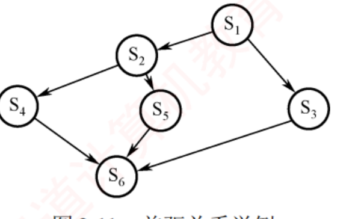
图 2.11 前驱关系举例（p.106）——七条边：S₁→S₂、S₁→S₃、S₂→S₄、S₂→S₅、S₃→S₆、S₄→S₆、S₅→S₆。看图只做两件事：数每个结点的入度 （写几个 P）和出度 （写几个 V）。 S₆ 入度 3 ⟹ 三个 P；S₁ 出度 2 ⟹ 两个 V；S₂ 入度 1 出度 2 ⟹ 一个 P 两个 V。
semaphore a12=0,a13=0,a24=0,a25=0,a36=0,a46=0,a56=0;
S1(){ …; V(a12); V(a13); }
S2(){ P(a12); …; V(a24); V(a25); }
S3(){ P(a13); …; V(a36); }
S4(){ P(a24); …; V(a46); }
S5(){ P(a25); …; V(a56); }
S6(){ P(a36); P(a46); P(a56); …; }
我的补讲 · 前驱图能不能"省信号量"——2020/2022 的进阶问法
书上按"一条边一个信号量"给了最直白的方案 → 潜台词是：这不是唯一方案，
真题可能问"最少需要几个信号量" → 所以要知道哪些边能合并。
情形 能不能合并 怎么写 S₁ → S₂ 与 S₁ → S₃ （同一前驱、不同后继）不能用一个初值 0 的信号量 必须 V(a12); V(a13); 两次 S₃/S₄/S₅ → S₆ （不同前驱、同一后继）可以合并成一个 三家各 V(a6)，S₆ 写 P(a6) 三次
⟹ 第二行的合并是安全的：S₆ 需要"三次通知"，至于是谁发的无所谓 。
这样 7 个信号量可压缩到 5 个（a12、a13、a24、a25、a6）。
⚠️ 但第一行不能合并：若 S₂ 与 S₃ 共用一个信号量，S₂ 可能把本该给 S₃ 的那次通知抢走 ，
导致 S₃ 永远等不到。"多个后继" ⟹ 必须分开；"多个前驱" ⟹ 可以合并。 知识串联 · 前驱图的"入度出度"数法，与数构建图时的度统计完全一致
度 数构 ch6 定义有向图的
入度 （指向该顶点的边数）与
出度 （从该顶点出发的边数）；
本节的 P/V 个数就是这两个数：
结点 入度 出度 P 的个数 V 的个数 S₁ 0 2 0 2 S₂ 1 2 1 2 S₆ 3 0 3 0
⟹ 于是有一条整体校验：全部 P 的总数 ＝ 全部 V 的总数 ＝ 图的边数
（本例都是 7）。写完数一遍，数目对不上必错。
而"入度为 0 的结点没有 P"对应数构里"入度为 0 的顶点可以最先输出"——同一句话。 我的补讲 · 前驱图题是全部 PV 题里最容易拿满分的，因为它有机械口诀
书上给了一个 7 边的例子 → 潜台词是：只要能数出入度出度，代码是照抄的 →
所以能考的是 2020/2022 那两道"给一个新图，写出 PV"。
⭐ 口诀：一条边一个信号量，初值全 0；入边全 P 写在前，出边全 V 写在后。
三条容易丢分的细节：
细节 正确做法 错误做法 信号量个数 ＝边数 （本例 7 条边 ⟹ 7 个）按结点数设 6 个 多入度 S₆ 写三个连续的 P 只写一个 P 或用一个信号量初值 −2 多出度 S₁ 写两个连续的 V 写一个 V 两次（漏写）
⟹ 检查法：写完后数一遍，每个信号量恰好出现一次 P、一次 V ，共 7 个 P、7 个 V。
数目对不上就一定错了。 我的补讲 · 三步法里第 ① 步"关系分析"的具体操作：画一张两两关系表
书上说要"识别参与并发的进程，厘清其间的关系" → 潜台词是：这一步要有可执行的动作，
否则"分析"就成了空话 → 我固定画一张 n×n 的关系表。
以苹果橘子为例（四个进程）：
爸爸 妈妈 女儿 儿子 爸爸 — 互斥 （抢盘子）同步 （放了才能吃）无 妈妈 互斥 — 无 同步 女儿 同步 无 — 无 儿子 无 同步 无 —
⟹ 表填完，信号量清单就出来了：每一格"互斥"配一个初值 1 的，每一格"同步"配一个初值 0 的 。
本例是 1 个互斥（盘子）＋ 2 个同步（苹果、橘子）。
⚠️ 右下角那两个"无"是本题的题眼——书上专门强调"儿子与女儿之间既无互斥也无同步"，
填表时最容易凭感觉给它们加一条不存在的关系 。 知识串联 · 前驱图 ＝ 数构的 AOV 网，PV 就是给每条边配一把钥匙
拓扑排序 数构 ch6 的
AOV 网 （顶点表示活动、边表示先后约束）与本节的前驱图
是同一个图 ；
拓扑排序求的是"一个合法的串行执行顺序"，而 PV 求的是"让它并发 执行也不出错的同步方案"。
数构 AOV 网 本节前驱图 入度为 0 的顶点可先执行 没有 P 操作的程序段可先执行 （如 S₁）执行完把后继入度减 1 执行完对每个后继 V 一次 入度减到 0 才入队 所有 P 都通过才继续 有环 ⟹ 拓扑排序失败 有环 ⟹ 所有段互相等待 ＝ 死锁
⟹ 最后一行值钱：前驱图里出现环，PV 方案必然死锁 ——这与 2.4 的循环等待条件是同一件事。
考场上若画出的依赖图有环，先怀疑自己读错题。 知识串联 · 三步法 ＝ 大题三层铁律里的「💭 思路层」，两者是同一件事
大题三层 复盘中心对所有需要写过程的大题都要求
「💭 思路 → ✍️ 考场卷面 → 📌 批注」 三层。PV 大题的三层长这样：
层 写什么 对应书上的 💭 思路 关系分析（两两关系表）→ 类比哪个经典模型 → 信号量清单（名·义·初值） 正是这里的三步法 ✍️ 考场卷面 semaphore 声明行 ＋ 每进程一个 while(1){} ＋ P/V 右侧注释书上的参考代码 📌 批注 P 的顺序为什么不能换 · 少一个信号量会怎样 · 改成 n 个缓冲区要改哪里 书上的"需特别注意"
⭐ 采分点分布（按 8 分估）：信号量定义与初值 2~3 分 · 每个进程的 P/V 位置各 2~3 分 · 顺序正确不死锁 2 分 。
⟹ 所以卷面第一行必须是 semaphore 声明——那是白给的 2 分，漏写直接亏 。 必记 · ⭐⭐ 分析同步互斥问题的三步法（大题的「💭 思路层」就写这三步）
① 关系分析 ：找出参与并发的进程，判断两两之间是互斥 （竞争同一临界资源）、
同步 （一方需等另一方的结果）还是前驱关系 （明确的顺序约束）。② 思路梳理 ：确定关键同步点，初步规划 P、V 的位置；
可类比生产者-消费者、读者-写者、前驱图三个典型场景 。③ 信号量设置 ：定义信号量、写明语义与初值 ，把 P、V 嵌入正确位置，
确保无死锁、无饥饿 且满足全部约束。
📄 p.107
我的补讲 · 三步法第 ③ 步的自查清单：信号量写完先过这五关
书上说第 ③ 步要"确保逻辑正确，避免死锁与饥饿" → 潜台词是：需要一套可机械执行的检查 →
所以我把它固化成五条，写完卷面逐条扫一遍。
# 检查什么 不过关的典型症状 1 每个信号量都写了初值吗 漏写声明行，直接丢 2 分 2 互斥信号量的 P 和 V 在同一进程里吗 跨进程 ⟹ 互斥失效 3 同步信号量的 P 和 V 在不同进程里吗 同进程 ⟹ 自己等自己 4 一轮流程里每个信号量被 P 的次数 ＝ 被 V 的次数吗 不配平 ⟹ 迟早耗尽或溢出 5 有没有"先 P(mutex) 再 P(资源)"的写法 抱着锁睡觉 ⟹ 死锁
⟹ 这五条覆盖了我用穷举器抓到的全部 四类建模错误。写完卷面花 30 秒扫一遍，
比重新推一遍思路划算得多。 2.3.5 经典同步问题 八年综合大题主场
① 生产者-消费者问题（一切 PV 大题的母题）
我的补讲 · 默写这段代码时，按"三行一组"的节奏背最不容易漏
书上把代码写成一整块 → 潜台词是：它其实有固定的三段结构 → 按结构背比按行背牢。
段 生产者 消费者 记忆点 进场 P(empty); P(mutex);P(full); P(mutex);资源在前，锁在后 干活 放入缓冲区 取出产品 只有这一句在临界区里 退场 V(mutex); V(full);V(mutex); V(empty);锁先还，资源后给 （顺序可换）
⚠️ 还有两句常被漏掉："生产一个产品"必须写在 P(empty) 之前 ，
"消费产品"必须写在 V(empty) 之后 ——
这两句是纯计算、不碰缓冲区，放进临界区会白白降低并发度 ，按"尽可能并发"的口径要扣分。 知识串联 · empty/full 这对信号量 ＝ 数构循环队列的两个判据
环形缓冲区 数构 ch3 的循环队列用
(rear+1)%n == front 判满、
rear == front 判空（牺牲一个单元法）；本节改用两个信号量把这两个判断"自动化"了：
数构 循环队列 本节 信号量 判满：(rear+1)%n == front empty == 0 ⟹ P(empty) 自动阻塞判空：rear == front full == 0 ⟹ P(full) 自动阻塞牺牲一个单元区分满/空 不需要牺牲 ——两个计数器天然分得开
⟹ 最后一行是信号量方案额外的好处：n 个缓冲区全都能用上 。
数构那边要牺牲一格，是因为只有两个指针、信息量不够；这里有两个独立计数器，信息量足够。 我的补讲 · 把 empty 与 full 加起来永远等于 n，这是最好用的自查
书上没点这层关系 → 潜台词是：两个计数器是互补 的 →
所以能考的是"某时刻 empty ＝ 3，则 full ＝ ?"。
稳态下：empty ＋ full ＝ n（缓冲区总数）
时刻 emptyfull说明 初始（全空） n 0 和为 n ✅ 放了 k 个 n−k k 和为 n ✅ 全满 0 n 和为 n ✅
⚠️ 严格说，在"某进程已执行 P(empty) 但还没执行 V(full)"的中间时刻，
两者之和会暂时 小于 n（那一格正被占用着填/取）。考试问的是稳态值，用 n 即可 。 必记 · 标准解（必须能默写，一个字都不错）
约束 ：缓冲区初始为空、容量 n；
未满生产者才能写、非空消费者才能读、缓冲区互斥访问 。
信号量 ：
mutex=1（互斥访问缓冲区）·
empty=n（空缓冲区数）·
full=0（满缓冲区数）。
semaphore mutex = 1, empty = n, full = 0;
producer(){
while(1){
生产一个产品;
P(empty); //要用空位 ⟹ 先 P
P(mutex); //互斥夹紧
将产品放入缓冲区;
V(mutex); //互斥夹紧
V(full); //提供了产品 ⟹ 后 V
}
}
consumer(){
while(1){
P(full); //要用产品 ⟹ 先 P
P(mutex);
从缓冲区取出一个产品;
V(mutex);
V(empty); //腾出了空位 ⟹ 后 V
消费产品;
}
} 我的补讲 · "抱着锁睡觉"这个说法可以推广成一条通用禁令
书上只在生产者-消费者这里分析了颠倒 P 的后果 → 潜台词是：这是一条通用 规则，不限于本题 →
所以能考的是任何一道"下列 PV 解法是否会死锁"。
通用禁令：持有互斥锁的进程，不得再执行任何可能阻塞 的操作。
持锁期间做这个 会不会死锁 P(某个可能为 0 的信号量)会 ——本题的经典反例发起 I/O 并等待 会 （别人也进不来）再申请另一把 锁 可能会 ——两把锁反序加锁即死锁纯计算 / V 操作 不会 （V 从不阻塞）
🐍 第三行实测：两把锁反序加锁（2017 变体）仅 23 个状态 就死锁，现场是 my2=0, mz=0。
⟹ 这条禁令与 2.4 破坏"请求并保持条件"是同一件事：别攥着一个去要另一个 。 陷阱 · ⭐⭐⭐ 两个 P 的顺序绝不能换（全章最经典的死锁分析，几乎必考）
规则：先申请资源（empty/full），再申请互斥（mutex） 。 颠倒后的死锁现场 ：缓冲区已满（empty=0）时，生产者先拿到 mutex，
再执行 P(empty) 被阻塞——它抱着锁睡着了 ；此时消费者想取产品，
却因 mutex 被生产者持有而进不去、执行不到 V(empty)。
生产者等消费者腾空位，消费者等生产者放锁，双向死等。 🐍 穷举器实测 （工具/pv.py，n＝2、各 1 个生产者消费者）：
颠倒 P 顺序后仅 49 个状态就走到死锁，现场是 mutex=0, empty=2, full=0
——消费者占着锁等货。 一句话口诀：先资源后互斥；两个 V 的顺序可以换，两个 P 的顺序绝不能换。
我的补讲 · 多生产者/多消费者时，mutex 能不能省掉？
书上的标准解带 mutex → 潜台词是：它是不是必需的，取决于有几个生产者、几个消费者 →
所以能考的是"下列情形中哪个可以省略 mutex"。
情形 要不要 mutex 理由 1 生产者 + 1 消费者 + n 个缓冲区 可以不要 两者操作的是不同的 槽位（一个写 in、一个读 out） 多生产者 （哪怕只有 1 个消费者）必须要 两个生产者可能抢到同一个空槽 缓冲区容量为 1 可以不要 empty 只有 1 个，拿到的人天然独占 （苹果橘子就是这样）
⚠️ 但王道的标准解一律写 mutex，考场上除非题目明确要求"信号量尽可能少"，否则不要擅自省
——写了不扣分，省错了要扣分。 我的补讲 · 为什么"V 的顺序可以换"也要能说出理由
书上只强调 P 不能换 → 潜台词是：V 能换是因为V 永远不阻塞 →
所以能考的是"下列哪种改动不影响正确性"。 V 操作只做两件事：value++、必要时唤醒一个。它自己从不阻塞 ，
因此无论先 V(mutex) 还是先 V(full)，执行它的进程都会继续往下跑，不会卡住任何人。 ⚠️ 但"不影响正确性"不等于"完全一样" ：先 V(full) 再 V(mutex) 时，
被唤醒的消费者会立刻卡在 P(mutex) 上多睡一会儿——只影响并发度，不影响正确性 。
这个区分在 2025 真题里被直接考过（见下面「V 的位置」那一条）。
知识串联 · 「V 写早一点提高并发度」这条口径，2017/2022/2024/2025 反复考
并发度 真题里"尽可能并发""信号量尽可能少""最大并发度"这几个词一出现，
就是在考同一件事：
把不必要的东西挪出临界区、把 V 尽量往前提 。
可以优化的地方 优化前 优化后 纯计算语句 写在 P(mutex) 与 V(mutex) 之间 挪到临界区外 V 的时机 拖到整段流程最后 资源一不再被占用就立刻 V 门卫型信号量 （读者-写者的 w）持到"读文件"之后 更新完计数就 V 互斥范围 一把大锁罩住全部 按资源拆成多把小锁
⟹ 四条都是同一句话：临界区越短越好，锁持有时间越短越好。
这也是工程上"减小锁粒度"的标准做法。 我的补讲 · 多个生产者时，"放入缓冲区"这一句为什么必须在临界区里
书上的代码把"将产品放入缓冲区"夹在 P(mutex)/V(mutex) 之间 →
潜台词是：真正需要互斥的只有这一句 → 所以能考的是"哪些语句必须放在临界区内"。
语句 要不要互斥 为什么 生产一个产品 不要 纯计算，不碰共享数据 将产品放入缓冲区 要 要改共享的写指针 in 从缓冲区取出产品 要 要改共享的读指针 out 消费产品 不要 纯计算
⟹ 判据是"这句话会不会读写共享变量 "，而不是"这句话属不属于业务流程"。
⚠️ 由此还能推出 1 生产者 1 消费者时可省 mutex：
只有一个人改 in、只有一个人改 out，谁也不会撞谁 。 我的补讲 · 把这道母题改一个条件，就是历年真题的全部套路
书上只给了标准版 → 潜台词是：真题不会原样出，一定改条件 → 所以能考的是"改了之后哪儿要跟着改"。
条件被改成 解法怎么变 对应真题/教材题 缓冲区容量为 1 可以省掉 mutex （empty/full 天然互斥）苹果橘子（见下） 产品分两种、消费者各吃一种 每种产品配一个同步信号量 ，不能只用一个 full苹果橘子 · 2013 博物馆 两个缓冲区（半成品→成品） 两套 empty/full，两把锁要两个计数器 教材综 04 双缓冲 按比例消费（1 车架配 4 车轮） 给每种零件的在制品数封顶 教材综 09 限制同时进入的人数 ≤ k 加一个初值为 k 的计数信号量 2013 博物馆 · 2019 哲学家 bowl 要求"尽可能并发/信号量尽可能少" 能省的 mutex 省掉，V 尽量早写 2017 · 2022 · 2024 · 2025
⟹ 六种变形都在 PV 模板手册 里有单独的卡，
每张都附了"反例 + 穷举出来的死锁现场"。
⚠️ 第三行是我自己建模时栽过的跟头：两个缓冲区必须用两个 互斥信号量与两个 计数器，
共用一把锁会把两级流水串死。 我的补讲 · 母题的六种变形里，最容易在考场上写崩的是"按比例封顶"
教材综 09 是"1 个车架配 4 个车轮"型的题 → 潜台词是：不封顶就会被某一种零件挤爆 →
所以能考的是"为什么要给每种零件的在制品数设上限"。
🐍 实测（N＝4）：去掉 s1/s2 的封顶后，352 个状态即死锁 ，
现场是 empty=0, wheel=4——车轮把箱子占满了，车架再也放不进去 ，
而装配工需要"1 架 + 4 轮"才能开工。
写法 信号量 结果 只有一个 empty empty=N死锁 ：某一种零件独占全部空位每种零件各自封顶 s1（车架上限）· s2（车轮上限）0 死锁
⟹ 判据：只要"消费者需要多种零件同时到齐"，就必须给每种零件单独封顶 ，
否则一种把空间吃光，另一种进不来 ⟹ 死锁。 ② 苹果橘子问题（盘子容量 ＝ 1）
必记 · 标准解
关系分析 ：爸爸与妈妈
互斥 （抢同一个盘子）；爸爸↔女儿、妈妈↔儿子分别
同步 ；
⭐
儿子与女儿之间既无互斥也无同步 （他们等的是不同的水果）。
信号量 ：
plate=1（盘子的独占使用权）·
apple=0 ·
orange=0。
semaphore plate = 1, apple = 0, orange = 0;
dad(){ while(1){ 准备苹果; P(plate); 放苹果; V(apple); } }
mom(){ while(1){ 准备橘子; P(plate); 放橘子; V(orange); } }
son(){ while(1){ P(orange); 取橘子; V(plate); 吃橘子; } }
daughter(){ while(1){ P(apple); 取苹果; V(plate); 吃苹果; } }
⭐⭐
关键：dad 与 daughter、mom 与 son 必须成对执行
——只有水果被拿走后才 V(plate)，盘子才腾出来给下一次用。
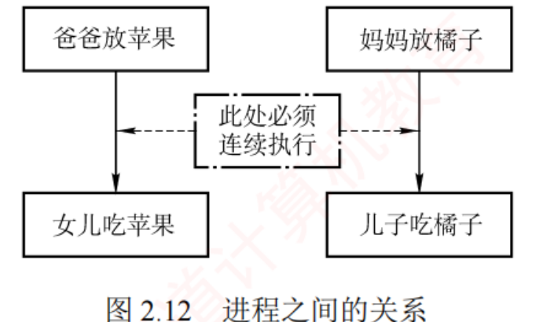
图 2.12 进程之间的关系（p.109）——上排「爸爸放苹果」「妈妈放橘子」，下排「女儿吃苹果」「儿子吃橘子」，竖直实线箭头是同步关系 （放了才能吃）；中间那个虚线框「此处必须连续执行」横跨两侧，说的是「放 → 被吃走 → 才 V(plate)」这一整段对盘子而言是一次完整占用 。注意左右两条竖线之间没有 横向连线——这正是"儿子与女儿之间无任何关系"的图证。
知识串联 · 苹果橘子的"两种产品各一个 full" ↔ 2.1.6 的"信号有 30 种编号"
按类型分队 为什么不能只用一个
full？因为
女儿只吃苹果、儿子只吃橘子 ——
被唤醒的人必须是"等这种东西的人" 。这个需求在 408 里出现过三次：
场景 怎么按类型分 本题 苹果、橘子各一个信号量 2.1.4 阻塞队列 "按阻塞原因划分为多个子队列" 2.1.6 信号 约 30 种信号各占位向量的一位 组原 ch5 中断 各中断源各一根请求线 / 各一个向量号
⟹ 统一的道理：要精确唤醒，就得先精确分队 。
用一个 full 会把儿子当成女儿唤醒，他拿不到橘子只能干等——书上说的"不能仅使用一个 full"就是这个意思。 我的补讲 · 这里的 P(plate) 与 V(plate) 在不同 进程里，看起来违反了前面那条检查规则
书上没解释这一点 → 潜台词是：plate 在这里不是普通的互斥信号量，而是"空位"信号量 →
所以能考的是"下列信号量中哪个起互斥作用"。
把它改个名字就通了：plate 其实就是生产者-消费者里的 empty（初值 n＝1）。
本题的名字 母题里的名字 初值 谁 P 谁 V plateempty1 爸爸/妈妈 儿子/女儿 applefull（苹果那一路）0 女儿 爸爸 orangefull（橘子那一路）0 儿子 妈妈
⟹ 于是三个信号量全都是同步信号量 ，一个互斥信号量都没有——
因为容量为 1 的缓冲区自带互斥 （empty 只有一个，拿到的人天然独占）。
这就是上表里"容量为 1 可以省掉 mutex"那一行的道理。 我的补讲 · 苹果橘子里"必须成对执行"到底在约束什么
书上说 dad 与 daughter、mom 与 son 必须成对执行 →
潜台词是：P(plate) 与 V(plate) 落在不同 进程里，构成一个"跨进程的占用区间" →
所以能考的是"盘子在什么时候才被释放"。
时刻 plate 的值谁占着盘子 开局 1 无人 爸爸执行 P(plate) 后 0 爸爸 爸爸放完苹果、V(apple) 0 仍被占着 （爸爸没有 V(plate)）女儿取走苹果、V(plate) 1 释放，妈妈才能放橘子
⟹ 所以"占用盘子"的区间是从爸爸放苹果开始，到女儿取走为止 ，横跨两个进程。
这正是"容量为 1 的缓冲区"的语义：放进去的东西不被取走，下一个就放不进来。 ③ 读者-写者问题
我的补讲 · count 是普通变量不是信号量，这个区别会直接决定卷面对不对
书上写 int count = 0; 而不是 semaphore count = 0; →
潜台词是：它是被保护 的对象，不是保护别人的工具 → 所以能考的是"下列哪个不是信号量"。
countmutex / rw类型 int 普通整型semaphore怎么改 count++ / count--只能通过 P / V 能不能直接读它做判断 能 （if(count==0)）不能 ——信号量的值不允许被程序直接读要不要被保护 要（靠 mutex） 它自己就是保护者
⚠️ 第三行是一条容易被忽略的铁律：信号量的值只能被 P/V 改变，程序不能写 if(S>0) 这种判断 。
卷面上出现直接读信号量值的写法，一定扣分。 知识串联 · 受保护的计数器 ＝ 引用计数，408 里到处都是
引用计数 "用一个计数器记录当前有几个人在用，第一个进来时加锁、最后一个出去时解锁"——
这个模式在 408 里至少出现四次：
场景 计数的是 归零时做什么 本节 读者-写者 正在读的读者数 V(rw)，放写者进来 OS ch4 文件 打开该文件的进程数 关闭文件、回写元数据 OS ch3 共享页 共享该页框的进程数 回收页框 2.4 资源分配 已分配实例数 资源变为空闲
⟹ 四处都必须解决同一个问题：计数器自身的读改写要互斥 。
书上那句"读者-写者问题的关键在于使用了受互斥保护的 计数器"，说的就是这个"受保护"三个字。 背景 · 读者-写者的"四条要求"原文，读一遍知道边界即可
① 允许多个读者同时执行读操作；② 任一时刻只允许一个写者执行写操作；
③ 写者在完成写操作前，不允许任何其他读者或写者访问文件；④ 写者开始写操作前，必须等待所有已进入的读者和写者全部退出。这四条是题面 不是考点——真正考的是"哪一行代码兑现了哪一条"（见下面那张对照表）。
读的时候不必逐字记，但要能在看到代码时反推出它们。
必记 · 读者优先（标准解）
关系 ：读者↔写者
互斥 ；写者↔写者
互斥 ；
读者↔读者无互斥，可并发。
信号量与变量 ：
count=0（当前读者数，
普通整型变量不是信号量 ）·
mutex=1（护
count）·
rw=1（护文件）。
int count = 0; semaphore mutex = 1, rw = 1;
writer(){ while(1){ P(rw); 写文件; V(rw); } }
reader(){
while(1){
P(mutex);
if(count == 0) P(rw); //第一个读者：把写者挡在门外
count++;
V(mutex);
读文件; //⚠️ 读文件在 mutex 之外 ⟹ 读者之间可并发
P(mutex);
count--;
if(count == 0) V(rw); //最后一个读者：放写者进来
V(mutex);
}
}
⭐
这是读者优先 ：只要已有读者在读，后来的读者都能立即进入，写者必须等所有读者退出
⟹ 可能导致写者饥饿 。 我的补讲 · 把读者-写者的四条要求逐条对到代码上，就知道哪一行不能动
书上先列四条要求再给代码 → 潜台词是：每条要求都由某一行代码兑现 →
所以能考的是"删掉某一行会违反哪条要求"。
要求 由哪一行兑现 ① 允许多个读者同时读 "读文件"写在 V(mutex) 之后 ，且只有第一个读者 P(rw)② 任一时刻只允许一个写者写 写者的 P(rw) … V(rw) ③ 写者写时不允许任何人访问 同上 ——rw 同时挡读者和写者④ 写者开始前须等已进入的读者退出 最后一个读者的 V(rw)
⟹ 可见 rw 一个信号量兑现了 ②③④ 三条，count 那套机制兑现了 ①。
删掉 if(count==0) 的判断，读者之间就变成互斥（违反 ①）；
删掉 rw，读写就不互斥（违反 ②③④）。 知识串联 · 读者-写者的 count ↔ 2.4 的"资源已分配实例数"
计数与判定 两节都用"数一个数"来判断能否放行，只是数的东西不同：
2.3 读者-写者 2.4 资源分配图化简 数什么 当前读者数 count 已分配实例数（＝资源结点的出度） 判据 count == 0 ⟹ 可以放写者进来空闲 ＝ 总数 − 已分配 ≥ 请求量 ⟹ 该进程可推进 更新时机 读者进出各一次 每删掉一个进程就重算
⟹ 两处的"动态判断资源状态"正是书上那句解题思想：
"面对复杂的同步互斥问题时，可考虑引入此类计数器来动态判断资源状态" 。
这句话在 2.4 化简资源分配图时又被用了一遍。 我的补讲 · 这道题的三个设计决策，每一个都能单独出一道选择题
书上按流程讲下来 → 潜台词是：三处"为什么这么写"才是考点 → 所以能考的是"若把某句挪走会怎样"。
写法 为什么必须这样 挪走/改掉的后果 「读文件」写在 V(mutex) 之后 让读者之间能并发读 若把读文件夹进 mutex ⟹ 读者之间也互斥了，退化成"一次一个" count++ 被 mutex 夹住count++ 不是原子操作不夹 ⟹ 两个读者同时读到 count＝0，都去 P(rw)，第二个被卡死 只有 第一个 读者 P(rw)、最后一个 读者 V(rw) 用一次加锁代表"整批读者" 每个读者都 P(rw) ⟹ 读者之间互斥；都不 P ⟹ 写者可能插进来
⭐⭐⭐
书上的收束句（务必记住）：「读者-写者问题的关键在于使用了受互斥保护的计数器 count 。
面对复杂的同步互斥问题时，可考虑引入此类计数器来动态判断资源状态，这是一种重要的解题思路。」
⟹ 这句话是本节送给你的一把万能钥匙：凡是题目里出现"第一个/最后一个""当人数达到 k 时"，
就上"mutex 保护的计数器 + if 判断"这套写法。 我的补讲 · 读者优先为什么会饿死写者——把过程演一遍
书上只给结论 → 潜台词是：这个过程要能自己演出来，否则记不牢 →
所以能考的是"下列哪种情况会导致写者饥饿"。
时刻 事件 countrw写者 t₁ 读者 A 到达 0→1 被 A 的 P(rw) 占住 — t₂ 写者到达，卡在 P(rw) 1 0 阻塞 t₃ 读者 B 到达（不需要 P(rw) ） 1→2 0 仍阻塞 t₄ A 走了，但 count 还是 1 2→1 不 V 仍阻塞 … 只要源源不断有新读者，count 永不归零 ≥1 0 永久饥饿
⟹ 病根在 t₃：新读者不必与写者竞争 rw，可以直接插到写者前面去 。
写者优先版加的那个 w，正是用来堵住 t₃ 这一步的。 知识串联 · "门卫" w 这类信号量，在真题里换过好几张皮
名额限制 一个初值为 k 的信号量，用来限制"同时能有几个人进来"，是真题的高频构件：
真题/教材题 限的是什么 初值 本节 写者优先的 w 入口权（有写者等时挡住新读者） 1 2013 博物馆 馆内人数上限 k 2019 哲学家变体 碗数封顶 n−1 n−1 2.3 哲学家破法 ① 同时尝试进餐的人数 4
⟹ 四处的作用完全一致：把"可能凑成死锁的并发度"压到安全线以下 。
🐍 实测：2019 那道题若把碗数不封顶（bowl＝m＝5），47676 个状态后死锁，现场是 5 人各持一碗一左筷 。 我的补讲 · 读者-写者的两个变体在真题里怎么认
书上只给了"读者优先"和"相对写者优先" → 潜台词是：真题会用别的词描述同一件事 →
所以要能从题面认出它是哪一版。
题面里出现 要写哪一版 "只要有读者在读，后来的读者可直接进入" 读者优先 （不加 w）"一旦有写者提出请求，就不再允许新读者进入" 写者优先 （加 w）"读者与写者按到达顺序公平服务" 加 w，且读者不 提前 V(w) （严格排队）
⚠️ 第三行是最容易写错的：要"公平"就不能提前放行下一个读者 ，
这与"读者之间可并发"是冲突的——题目要哪个就写哪个，别自作主张两个都要 。 必记 · 写者优先（加一个"门卫" w）
int count = 0; semaphore mutex = 1, rw = 1, w = 1; //w 是新加的门卫
writer(){
while(1){
P(w); //占住门：新读者别再进来了
P(rw); 写文件; V(rw);
V(w);
}
}
reader(){
while(1){
P(w); //先过门卫
P(mutex);
if(count == 0) P(rw);
count++;
V(mutex);
V(w); //⚠️ 立刻放开门，别挡住其他读者
读文件;
P(mutex); count--; if(count == 0) V(rw); V(mutex);
}
}
⭐⭐
w 如同"门卫"：有写者等待时新读者进不来；已在读的读者可正常读完。
⭐⭐
但这是相对 优先、不是绝对优先 ——多个进程同时阻塞在
w 上时，
系统通常按 FCFS 唤醒，先到的读者仍可能排在后到的写者前面 。
本质是"在防止写者饥饿的前提下给写者有限优先"。 我的补讲 · V(w) 为什么写在"读文件"之前 ，这是本题最精巧的一笔
书上说"读者更新 count 后立即执行 V(w)" → 潜台词是：w 只负责拦住新读者的入场 ，
不负责保护读文件这件事 → 所以能考的是"把 V(w) 挪到读文件之后会怎样"。 挪到之后的后果 ：读者甲进入并开始读文件时仍占着 w，
读者乙即使没有任何写者在等，也会被卡在 P(w) 上 ⟹
读者之间被串行化了，"多个读者可并发读"这个前提被彻底破坏。 ⟹ 记法：w 是"入口闸机"，人一进场就该放行下一个；真正的读写互斥由 rw 负责。
这与上面「读文件必须写在 V(mutex) 之后」是同一个道理的两次应用：凡是不需要互斥的动作，都要放在锁外面 。
知识串联 · 读者-写者 ＝ 计网/数据库里的「共享锁与排他锁」
读写锁 本题的两种锁在工程里有正式名字，记住能帮你一眼看穿变形题：
本题的角色 工程名 相容性 读者持有的（第一个读者 P(rw)） 共享锁 S 锁 读-读相容 写者持有的（P(rw)） 排他锁 X 锁 读-写、写-写都互斥
⟹ 相容矩阵只有一格是"相容"，这正是题面四条要求的紧凑表达。
教材里凡是出现"多个 A 可以同时…，但 B 必须独占"的题面（如"多人可同时查询、更新时须独占"），
一律套读者-写者，不要从头推 。 ④ 哲学家进餐问题
我的补讲 · 写者优先版里 rw 和 w 分别挡谁，一张表说清
加了 w 之后有三个信号量，容易搞混谁管谁 → 分工其实非常清楚。
信号量 保护什么 谁会被它挡住 mutexcount 这个变量读者之间（只挡极短的一瞬 ） rw文件本身 写者 ↔ 读者群、写者 ↔ 写者 w"入口"这个权利 有写者在等时，挡住新 读者
⟹ 三层保护由内到外：变量 → 文件 → 入口 。
读者优先版没有第三层，所以新读者可以随时插队；加上第三层就形成了"排队入场"。
⚠️ 注意 w 不保护任何数据 ，它只调节"谁能排到前面"——
这类信号量在真题里很常见（2013 博物馆的名额、2019 哲学家的碗都是这一类）。 背景 · 哲学家问题的"思考"与"进餐"两个动作，不必抠
书上说哲学家"交替进行思考与进餐：思考时互不影响"。"思考"这个动作在代码里就是一句注释，
不涉及任何共享资源，因此永远写在临界区外 ，也不需要任何信号量。 本题唯一的共享资源是筷子 （以及某些变体里的碗）。读题时把"思考""继续思考"这类词直接划掉，
剩下的才是要建模的部分。
必记 · 问题设定与那个会死锁的直观写法
5 名哲学家围坐、5 根筷子，
必须同时持有左右两根才能进餐（筷子逐根拿起） ；
哲学家 i 的左筷编号 i，右筷编号 (i+1)%5 ；
chopstick[5]={1,1,1,1,1}。
Pi(){ do{
P(chopstick[i]); //拿左筷
P(chopstick[(i+1)%5]); //拿右筷
进餐;
V(chopstick[i]);
V(chopstick[(i+1)%5]);
思考;
} while(1); }
⭐⭐
5 人同时饥饿、几乎同时拿到左筷 ⟹ 每人各持一根左筷、都在等右筷 ⟹ 循环等待 ⟹ 死锁。
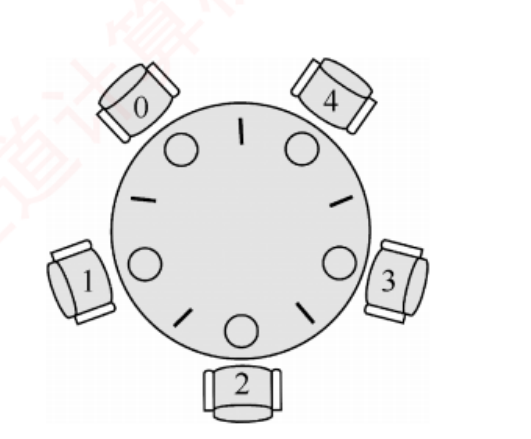
图 2.13 5 名哲学家进餐（p.111）——圆桌旁编号 0~4 的五名哲学家，每两人之间一根筷子（图上桌沿的短线），共 5 根 ，每人面前一碗米饭（圆圈）。看图要看出来的一件事：筷子数 ＝ 人数 ＝ 5，而每人要两根 ⟹ 5 × 2 > 5，注定不可能人人同时进餐。 这正是死锁分析的起点。
我的补讲 · 哲学家问题的"5×2 > 5"是所有资源类死锁题的通用起手式
书上没算这个数 → 潜台词是：它是判断"会不会死锁"的第一直觉 →
所以能考的是 2.4 那条 m > n(k−1) 公式的原型。
套公式 哲学家问题 结论 资源总数 m 5 根筷子 5 ≤ 5×(2−1) ＝ 5 ⟹ 可能死锁 m > n(k−1) 才安全，这里恰好取等，正好卡在边界上）进程数 n 5 位哲学家 每人最大需求 k 2 根 n(k−1) 5×1 ＝ 5
⟹ 于是"限制最多 4 人同时进餐"这个破法在公式上的意义是：把 n 从 5 降到 4 ，
此时 5 > 4×1 ＝ 4 成立 ⟹ 不会死锁 。一算就明白它为什么有效。
⚠️ 这也说明 2.4 那条公式其实在 2.3 就该用起来，不必等到下一节。 我的补讲 · 奇偶异序为什么能破环：沿环走一圈会矛盾
书上只说"打破循环等待条件" → 潜台词是：它的正确性需要一个两行的论证 →
所以能考的是"为什么规定奇偶不同顺序就不会死锁"。 逐步推 ：死锁要求 5 人各持一根、各等一根，形成首尾相接的环。
但相邻的两位哲学家必有一奇一偶 （5 人编号 0~4 首尾相接时至少有一处相邻同奇偶被打破的方向差异），
其中偶数号先拿右筷、奇数号先拿左筷，于是这两人会去抢同一根筷子 作为各自的"第一根"
——抢到的那个能继续，没抢到的那个手里一根都没有 ，环就断了。 ⟹ 关键点：死锁要求"人人手里都有一根"，只要有一个人两手空空，环就不成立。
🐍 实测（n＝5）：奇偶异序共 2164 个状态，0 死锁 。
知识串联 · 哲学家问题里"5 根筷子 5 个人"的对称性，是死锁的真正根源
对称破缺 三种破法各自打破了一种"对称"，这个视角比背条件更好用：
破法 打破了什么对称 ① 限最多 4 人 "人人都能同时开始"的对称 ② 奇偶异序 "人人都先拿左筷"的方向对称 ③ 全拿才拿 "拿筷子这件事可以被打断"的时间对称
⟹ 一句话：完全对称的并发系统最容易死锁，因为所有人会同时做出同样的错误选择 。
这也是 2.4 资源有序分配法有效的原因——给资源编号，本质就是人为制造一个全局的、不对称的顺序。 必记 · 防死锁的三种办法（各破哪一条必要条件，2.4 会用到）
办法 做法 破坏的必要条件 ① 限制人数 最多只允许 4 人同时尝试进餐 ，保证至少一人能拿到两根请求并保持 （把系统留在安全状态）② 奇偶异序 奇数号先拿左再拿右，偶数号相反 循环等待 ③ 全拿才拿 仅当左右两根都空闲时才允许同时拿起 （用 mutex 夹住两个 P）请求并保持
semaphore chopstick[5] = {1,1,1,1,1};
semaphore mutex = 1; //方法③：取筷子这件事本身互斥
Pi(){ do{
P(mutex);
P(chopstick[i]); P(chopstick[(i+1)%5]);
V(mutex);
进餐;
V(chopstick[i]); V(chopstick[(i+1)%5]);
思考;
} while(1); } 我的补讲 · 哲学家问题的"筷子逐根拿起"这五个字，是死锁的唯一入口
题面里"必须同时持有左右两根筷子才能开始进餐（筷子需逐根拿起 ）"这个括号最关键 →
潜台词是：如果能"一次拿两根"，本题根本不会死锁 → 所以能考的是"若把两次 P 变成一次原子操作会怎样"。
拿筷子的方式 会不会死锁 为什么 逐根拿（书上的直观写法） 会 拿到第一根后可能被切换，形成"持有并等待" 用 mutex 夹住两个 P（破法 ③） 不会 两根要么都拿到、要么一根也不拿 假想的"原子地拿两根" 不会 同上，本质就是破法 ③
⟹ 所以破法 ③ 的实质是把"两次申请"变成一次原子申请 ——
这正是 2.4 里"破坏请求并保持条件 · 静态资源分配"的最小实例。 我的补讲 · 三种破法在"并发度"上的排序，是"尽可能并发"类题目的答案
书上只说三种都能防死锁 → 潜台词是：它们的代价不同 →
所以能考的是"下列哪种方法在避免死锁的同时并发度最高"。
破法 同时最多几人进餐 并发度 ① 限最多 4 人尝试 2 人 （5 根筷子，两人各占 2 根）高 ② 奇偶异序 2 人 高 ③ 全拿才拿（mutex 夹住两个 P） 2 人 略低 ——拿筷子这个动作本身被串行化了
⟹ 三者进餐人数上限相同，但 ③ 多了一把全局锁：任一时刻只有一个人能"伸手" 。
题目若强调"尽可能并发"，② 是最优解——它不引入任何额外信号量，也不串行化任何动作 。 我的补讲 · 三种破法的 🐍 穷举结果，以及为什么方法 ③ 的 V(mutex) 位置不能挪
书上只说"这样就不会死锁"，没给证据 → 我用 工具/pv.py 逐个跑了一遍（n＝5）：
写法 状态数 结果 直观写法（各拿各的左筷） 3123 死锁：5 根筷子全为 0，人人持左筷等右筷 方法 ② 奇偶异序 2164 0 死锁 方法 ① 限 4 人（加初值 4 的信号量） 14642 0 死锁 2019 真题变体（碗不封顶 n−1） 47676 死锁：5 人各持一碗一左筷
⚠️ 方法 ③ 里 V(mutex) 必须写在两个 P 都成功之后、进餐之前 ：
写早了（放在两个 P 中间）⟹ 退化成直观写法，死锁重现；
写晚了（放在进餐之后）⟹ 变成"一次只许一人吃饭"，不死锁但并发度掉到 1 ，
按"尽可能并发"的口径要丢分。
⟹ 这条与 2025 真题「signal(position) 该放在放树苗之后还是填土之后」是同一个考点：
V 写晚了不算错，但按"尽可能并发"的口径要扣分 。
实测那道题写晚了会让"白等场面"从 4 个涨到 20 个（5 轮），稳定 5 倍。 知识串联 · 哲学家的三种破法 ＝ 2.4 死锁预防的三种手段，提前对上
破坏必要条件 2.4 会正式讲"破坏四个必要条件"，而哲学家问题已经把三种手段演示过一遍：
哲学家的破法 2.4 里的正式名字 破的条件 限最多 4 人同时尝试 类似"死锁避免" ——保证系统留在安全状态请求并保持 奇数号先左、偶数号先右 资源有序分配法的变体 循环等待 左右都空闲才拿（mutex 夹住两个 P） 静态资源分配（一次性申请全部） 请求并保持
⟹ 读 2.4 时回头对一眼，四个必要条件的"破法"就有了具体形象。
⚠️ 唯一没被演示的是"破坏互斥条件"——因为筷子本质上不能共享，这正是 2.4 说的"实践中不可行"。 背景 · 书上关于复习态度的一段话
「哲学家进餐问题是经典的进程同步案例，其本质在于预防循环等待。尽管大部分习题和真题通过消费者-生产者模型
或读者-写者问题就能求解，但对哲学家进餐问题仍然要熟悉。考研复习的关键在于反复多次和全面，'偷工减料'是要吃亏的。」 这段是态度提醒不是知识点。但它透露了一个有用的信息：真题里哲学家本身出得少，
多数大题能用生产者-消费者或读者-写者套出来 ——所以那两个模型必须默写到不假思索。
📄 p.112
我的补讲 · 三个经典模型在真题里的"出场率"，决定了你该先默写哪一个
书上三个模型平铺直叙 → 潜台词是：它们在真题里的地位差别很大 →
所以先看这张表再决定练习顺序。
模型 真题里的地位 练到什么程度 生产者-消费者 绝大多数 PV 大题的原型 （含全部"缓冲区/货架/盘子"类）🔴 闭卷默写，一字不差 读者-写者 凡是"多人可同时 A、B 须独占"就是它 ；count 套路应用极广🔴 闭卷默写（含写者优先版） 哲学家 真题直接考得少 （书上自己也这么说），但 2019 考过变体 🟡 能改写、会说三种破法
⟹ 时间紧的话按 生产者-消费者 → 读者-写者 → 哲学家 的顺序练，
前两个吃透就能覆盖 13 道 PV 真题里的大部分。 2.3.6 管程
知识串联 · 管程解决的"PV 太散容易写错"，正是你做题时的真实体验
抽象层次 从"自己写进入区/退出区"到"调用一个封装好的东西"，408 里这条抬升路线走了四步：
层次 程序员要写什么 出错风险 四种软件算法 自己维护 flag/turn 极高 （四种里三种是错的）TS / Swap 自己写忙等循环 高（忙等、饥饿） 信号量 自己摆 P/V 的位置与顺序 中 （顺序错就死锁）管程 只写"什么条件下该等" 低 （互斥由编译器/管程自动保证）
⟹ 每上升一层，程序员少操心一件事。考试考的恰恰是第三层 ——因为它既能写出来、又足够容易错。
管程之所以只出选择题，是因为它把最能出题的那部分（互斥）自动化掉了。 我的补讲 · 管程的"互斥自动保证"到底由谁实现
书上说管程"自动保证互斥访问，程序员无须显式编写互斥代码" →
潜台词是：这个"自动"必须由某个东西兑现 → 所以能考的是"管程的互斥由谁实现"。
层次 谁负责 语言层 编译器 在每个管程过程的入口/出口自动插入互斥代码运行层 底层仍然是信号量或互斥锁 硬件层 最终靠 TS / Swap 这类原子指令
⟹ 所以"管程比信号量更安全"不是因为它用了新原理，
而是因为它把最容易写错的那一步交给了编译器 。
⚠️ 考试问"管程的互斥由谁保证"时，标准答案是"由管程自身（编译器）保证，无须程序员干预" 。 必记 · 为什么要管程 ＋ 四个组成部分 考点追踪 · 2016
动机 ：⭐ 信号量机制中每个进程都要自己写 P/V，分散的同步代码既增加编程复杂度，又极易因顺序不当引发死锁。 管程 ＝把共享资源及其操作封装在一起 ，自动保证互斥访问 （程序员无须显式写互斥代码），
并通过条件变量实现同步 。四个组成部分 ：① 管程的名称 ；② 局部于管程内部的共享数据结构说明 ；
③ 对该数据结构进行操作的一组过程（函数） ；④ 对共享数据进行初始化的语句 。
我的补讲 · 管程的四个组成部分，用"哪个能省"来验收
书上列了四条 → 潜台词是：命题人会拿掉一条问"下列哪个不是管程的组成部分" →
所以要能说出每一条为什么不可少。
组成部分 少了会怎样 ① 管程的名称 进程无法指名调用它 ② 局部于管程内部的共享数据结构 没有被管理的资源，管程就没有意义 ③ 一组操作过程 外部无法访问（封装性要求只能通过过程访问） ④ 初始化语句 资源数的初值没人设，第一次调用就会出错
⚠️ 常见的错误选项是"⑤ 进程调度程序"或"⑤ 等待队列的定义"——
条件变量虽然常用，但书上的四部分里不含 条件变量 （它属于②里的数据结构）。
照王道口径答四条即可。 知识串联 · 管程 ↔ 生产者-消费者：同一道题的两种写法对照
两种实现 把同一个有界缓冲区问题用两种机制写出来，差别一目了然：
信号量写法（2.3.5） 管程写法（2.3.6） 互斥 自己写 P(mutex)/V(mutex) 不用写，进过程即互斥 缓冲区满/空 empty/full 两个信号量共享变量 count ＋ 两个条件变量 等待 P() 自动阻塞x.wait()，且自动放开管程唤醒 V()x.signal()，要自己判断"有没有人在等"
⟹ 两种写法的信息量相同，但责任分配不同。
408 的综合大题只会考左边那一列 ，管程只在选择题里以概念形式出现。 必记 · 管程与进程的六条区别（考点密集）
# 进程 管程 1 拥有私有 数据结构（PCB） 管理公共 数据结构（如缓冲区） 2 执行通用计算任务 专注同步控制与资源管理 3 引入是为了实现并发 引入是为了解决共享资源的互斥访问 4 主动 执行的实体被动 调用的模块5 多个进程可并发 执行 对同一管程的多个调用是互斥 的 6 有动态 的生命周期 是静态 的资源管理模块
⭐
书上明说"管程与类（class）高度相似"：封装性（内部数据只能被管程自身的过程访问）＋
互斥性（任一时刻仅允许一个进程执行管程内的过程）。 我的补讲 · 管程与进程的六条区别，按"三对反义词"记只需记三条
书上列了六条 → 潜台词是：它们两两成对 → 记三对反义词即可。
反义词 进程 管程 覆盖书上第几条 私有 vs 公共 私有数据（PCB） 公共数据（缓冲区） ① 主动 vs 被动 主动执行、可并发 被动调用、调用互斥 ④⑤ 动态 vs 静态 有生命周期 静态模块 ⑥ （剩下的 ②③） 做通用计算 做同步控制 ；为解决互斥而引入②③
⟹ 三对反义词覆盖了四条，剩下 ②③ 说的是"用途不同"，合起来一句话就够：
进程是干活的，管程是管资源的。 知识串联 · 管程的"自动互斥"在 2.2 那里也有对应物：谁来保证
谁负责互斥 把"互斥由谁保证"这条线从 2.1 拉到 2.3.6，会看到责任在逐级上移：
机制 互斥由谁保证 程序员要做什么 2.1 共享存储 用户程序自己 自己写 PV 2.1 管道 / 消息传递 OS 内核 调用 read/write 即可 2.3 信号量 P/V 原语保证自身 原子 自己摆位置和顺序 2.3.6 管程 管程（编译器）自动保证 只写"什么条件下该等"
⟹ 一条清晰的上升线：越往下，程序员越省心，出错概率越低 。
书上说管程"降低死锁风险"，降的正是第三行那种"顺序摆错"的风险。 必记 · 条件变量 vs 信号量（必考的一处对照）
x.wait()：条件不满足时把自己加入 x 的等待队列，⭐
并自动释放管程 （否则别人进不来，系统停滞）。
x.signal()：
唤醒一个 在 x 上阻塞的进程。
信号量 条件变量 有没有数值 有 ，反映可用资源数没有 ，只负责排队和通知资源数记在哪 就是信号量自己 由管程里的共享变量（如 S）显式记录 相似点 wait/signal 与 P/V 都能实现阻塞与唤醒
我的补讲 · 「条件变量没有数值」带来的一个实际差别，比背定义有用
书上只说"条件变量不维护数值" → 潜台词是：signal 打在没人等的时候会白白丢掉 →
所以能考的是"下列关于条件变量的说法"。
情形 信号量 V(S) 条件变量 x.signal() 此刻没有 进程在等 S 加 1，效果被"记住" ，下次 P 直接通过什么也不发生，信号丢失 此刻有 进程在等 唤醒一个 唤醒一个
⟹ 所以管程里 signal 前面总要配一句 if(有进程在等)，
而资源数必须另用共享变量 S 记着——两者合起来才等价于一个信号量。
⚠️ 这也解释了管程为什么"降低死锁风险"：互斥不用你写（自动的），你只需要写"什么条件下该等"。 我的补讲 · x.wait() "自动释放管程"这一句，是条件变量存在的全部理由
书上说"若不释放管程，其他进程将无法进入，从而导致系统停滞" →
潜台词是：这正是 2.3.5 那条"抱着锁睡觉"禁令在管程里的翻版 →
所以能考的是"进程在管程内等待时会发生什么"。
信号量方案 管程方案 持锁时阻塞 要靠程序员自己避免 （先 P 资源再 P 锁）x.wait() 自动释放管程写错的后果 死锁 写不出这种错
⟹ 这就是"管程降低死锁风险"的具体机制：它把"等待前必须先放锁"这件事做成了语言级的自动行为 。
⚠️ 因此判断题"进程在管程中等待时仍占用管程"是错 的——这是本小节最常考的一句。 知识串联 · 管程 ＝ 面向对象的类 ＝ Java 的 synchronized
封装 书自己点名"管程与类高度相似"。这条串联在 408 里的价值不在计网/组原，
而在
帮你一秒记住四个组成部分 ：
管程的四部分 类里的对应物 ① 管程的名称 类名 ② 局部共享数据结构 私有成员变量 ③ 一组操作过程 成员方法 ④ 初始化语句 构造函数
再加一条类没有的：任一时刻只允许一个进程执行管程内的过程 ——
这就是 Java 给整个类的方法都加 synchronized 的效果。
⟹ 记住"管程 ＝ 自带一把大锁的类"，六条区别与四个组成都能现推。 📄 p.114
2.3.7 本节小结
知识串联 · 「signal 打空会丢失」在工程里的后果，就是"必须用 while 而不是 if"
条件变量 书上的管程伪码写的是
if(S<=0) x.wait();，
而真实系统里通常要写成 while(S<=0) x.wait(); 。原因正是条件变量没有数值：
写法 被唤醒后 风险 if直接往下走 若被唤醒后条件又被别人改回去了，就会出错 while重新检查一遍条件 安全
⚠️ 但王道教材给的就是 if，考试按书上的写法答 ；
这里记 while 只是为了理解"条件变量不保证被唤醒时条件仍成立"这个性质。
⟹ 与信号量对照：P 操作返回时资源一定还在 （因为 value 已经减过了），
这是信号量比条件变量"强"的地方。 必记 · 小结第三问就是 2.4 的引子
「当两个或多个进程各自已占用某些资源，又同时请求对方所持有的资源时，可能形成互相等待的局面。
若无外部干预，这些进程将永久阻塞，无法继续推进，这现象称为死锁 。」 本节用 PV 解决了"该谁先跑"，但 PV 用错顺序会造出新的问题——那就是 2.4 要处理的。
我的补讲 · 小结第三问"会遇到什么新问题"——PV 自己会造出死锁，举两个已验证的例子
书上用一句话引出死锁 → 潜台词是：死锁不是外部强加的，是 PV 用错顺序自己造出来的 →
所以能考的是"下列 PV 解法会不会死锁"。
写法 🐍 穷举结果 死锁现场 生产者-消费者颠倒 P 顺序 49 个状态 mutex=0, empty=2, full=02013 博物馆颠倒 P 顺序 461 个状态 empty=0, mutex=0（占着门等名额）综 06 少 V 一次 48 个状态 P₁ 与 P₃ 双双停在 P(Sy) 哲学家朴素写法 3123 个状态 5 根筷子全为 0
⟹ 四个例子对应 2.4 的四个必要条件里的"请求并保持 + 循环等待"。
读 2.4 时把这四个现场当成"活的反例"，四条件就不是抽象概念了。 我的补讲 · 2.3 的自查清单：这十条能全说清，PV 大题就稳了
# 结论 常见错答 1 让权等待"原则上遵循但非必须" 把它当成必须满足的准则 2 Peterson 只违反让权等待 说它也违反有限等待 3 忙等大家庭：单标志法、TS、Swap、自旋锁、整型信号量 把记录型信号量也算进去 4 关中断不适用于多处理器；TS/Swap 适用 方向记反 5 value<0 时 |value| ＝ 阻塞进程数说成"还缺的资源数" 6 互斥信号量初值 1，同步信号量初值 0 同步也写 1 7 P(empty) 必须在 P(mutex) 之前 顺序颠倒 ⟹ 死锁 8 读者优先饿死写者；加 w 得到相对 写者优先 说成绝对优先 9 哲学家直观写法会死锁，三种破法各破一条必要条件 说不清破的是哪一条 10 条件变量无数值，signal 打空会丢失 与 V 操作等同看待
⟹ 做完练习系统 2.3 的 86 题后回来核这十条；十条全清再去
PV 模板手册 按 🔴 默写等级刷一遍。 知识串联 · 2.3 → 2.4 的过渡：同一个问题的"局部解"与"全局解"
同步与死锁 2.3 教的是
怎么写对一段同步代码 ，2.4 讲的是
整个系统层面怎么保证不卡死 。两者的关系可以这样对上：
2.3 同步与互斥 2.4 死锁 视角 一组进程的代码怎么写 整个系统的资源怎么分配 出错的表现 数据不一致 / 局部死等 循环等待、系统停滞 手段 信号量 · 管程 预防 · 避免 · 检测与解除 题型 综合大题（写代码） 选择题（算安全序列 / 套公式）
⟹ 最后一行是最实用的信息：2.4 不会让你写代码，只会让你算 。
所以 2.4 的复习方式与 2.3 完全不同——不必默写，把两个计算模型练熟即可。 2.4 死锁
我的补讲 · 这 26 页只考两样东西，练熟就是白拿分
我把 2.4 的 12 道真题逐个归了类 → 潜台词是：这一节看着概念多（四条件、三策略、三解除法），
但真题全部是选择题、0 道综合真题 → 所以能考的其实只有两个计算模型。
考什么 出现次数 要练的动作 ① 死锁公式 m > n(k−1) 真题 3 次（2009/2014/2021）＋ 教材 6 处 会正推也会反解 n 或 k ② 银行家算法 / 安全序列 真题 5 次（2011/2012/2018/2020/2022） 四步走，会数安全序列条数 ③ 概念辨析（避免 vs 检测、环 ≠ 死锁） 2015、2016、2019、2021 记三条单向蕴含
⟹ 时间分配：① 和 ② 各 40%，③ 20%。全节控制在全章 15% 的时间内，别超。
本节 12 道真题的年份缺口是 2010/2017/2023/2024/2025——近三年没考，但 2009–2022 里几乎年年有，
按"轮换命题"的规律，2026 是有可能回来的。 📄 p.150
2.4.1 死锁的概念
知识串联 · 死锁的两个例子，都能在 2.3 的 PV 里找到原型
循环等待 书上的"打印机 + 扫描仪"例子，与 2.3 的"两把锁反序加锁"是同一件事：
2.4 的说法 2.3 的写法 P₁ 占打印机、请求扫描仪 P(my1); P(my2);P₂ 占扫描仪、请求打印机 P(my2); P(my1);互相等待，永久阻塞 🐍 实测 23 个状态即死锁，现场 my2=0, mz=0
⟹ 所以"资源"这个词在 408 里可以是打印机，也可以是一个互斥信号量 。
2.4 的四个必要条件同样适用于信号量——这是把 2.3 与 2.4 打通的关键一句。 我的补讲 · 本节 12 道真题一道综合题都没有，这个事实本身就是复习指令
2.4 全部真题都是选择题 → 潜台词是：不需要练"写过程"，只需要练"算得快、判得准" →
所以复习方式与 2.3 完全相反。
2.3 同步与互斥 2.4 死锁 题型 综合大题（8 分/年） 全是选择题 要练的 闭卷默写 PV 代码 银行家表格填得快、公式反解得准 卷面要求 三层（思路/卷面/批注） 无 （选择题不写过程）时间占比建议 40% 15%
⚠️ 但别据此轻视 2.4：它的 12 道真题分布在 2009–2022 的九个年份里 ，
平均每年 0.9 道选择题 ＝ 每年约 2 分。2 分用 15% 的时间换，投产比其实很高。 必记 · 定义与两个例子
死锁 ＝多个进程因竞争资源而陷入相互等待的僵局：每个进程都在等待其他进程占有的资源，
而这些资源又不会被释放，形成循环等待链；若无外部干预，所有涉及的进程将被永久阻塞。 典型例子 ：系统仅有一台打印机和一台扫描仪。P₁ 占打印机、请求扫描仪；P₂ 占扫描仪、请求打印机 ⟹ 死锁。
我的补讲 · 死锁的定义里有三个词缺一不可，判断题就在这三个词上做手脚
书上的定义句很长 → 潜台词是：它其实由三个必须同时成立的条件拼成 →
所以能考的是"下列现象是不是死锁"。
关键词 缺了会变成什么 "多个进程"（≥2） 只有一个进程等不到资源 ⟹ 是饥饿，不是死锁 "相互等待 / 循环" 单向等待（A 等 B，B 不等 A）⟹ B 跑完就解开，不是死锁 "永久"（无外部干预不会解开） 等一会儿就好了 ⟹ 只是普通阻塞
⟹ 三个词合起来才是死锁。做判断题时逐个核这三条，比凭感觉稳得多。 背景 · 书上那个"狭窄小巷两车对峙"的比喻
一条小巷只容一辆车，两车分别从两端驶入，双方都坚持前行不愿倒车 ⟹ 巷中对峙。这个比喻只用来建立直觉，不会考。真要从它身上取一点东西的话，取这句：
"不愿倒车"对应不可剥夺条件 ，"都已经开进巷子"对应请求并保持 ，
"两端相向"对应循环等待 " ——比喻里恰好齐了三条必要条件。
必记 · 死锁 vs 饥饿（两条区别都要能说）
死锁 饥饿 成因 等待的事件只能由组内另一进程触发 资源分配策略不公平 ，等待时间无上限⭐ 涉及进程数 必须 ≥ 2 个，且循环等待 可以只有 1 个 ⭐⭐ 进程状态 必定处于阻塞态 可能就绪（SPF 下的长作业），也可能阻塞（长期等某设备） 系统整体 相关进程全部停滞 系统仍在正常运行 ，只是个别进程被持续忽略共同点 相关进程都无法顺利向前推进
知识串联 · 饥饿在 408 里出现四次，每次的"解药"都是老化
饥饿 把四处并排列出来，这个词就再也不会被当成死锁：
在哪 谁被饿死 解药 2.2 SJF 长作业 高响应比优先（等待久了响应比自然高） 2.2 静态优先级 低优先级进程 动态优先级（老化） 2.3 读者优先 写者 加"门卫" w，挡住新读者 2.4 静态资源分配 / 资源剥夺法 等大批资源的进程 / 被反复剥夺的进程 书上明说"需防止饥饿"
⟹ 四处的解药本质相同：让"已经等了多久"这件事产生影响力 。
凡是选项里出现"该算法可能导致某进程无限期等待"，先判断是饥饿还是死锁——看它是不是在就绪队列里 。 我的补讲 · "饥饿的进程可能处于就绪态"这一条是最好的判别器
书上把两条区别并列写 → 潜台词是：第二条（状态）比第一条（进程数）更好用 →
所以能考的是"下列进程处于死锁还是饥饿"。 为什么好用 ：死锁的进程一定在某个等待队列上睡着（阻塞） ；
而 SJF 下饿死的长作业一直待在就绪队列 里，随时可以跑，只是永远排不到第一 。
看到"它还在就绪队列里"这句话，答案立刻锁定饥饿。 ⟹ 一句话：死锁的人在睡觉，饥饿的人在排队。
⚠️ 反过来不成立：阻塞态的进程未必死锁（它可能只是在等一次正常的 I/O）。
我的补讲 · 「可剥夺资源不会导致死锁」这句话，能一秒排除一批选项
书上说"单纯因可剥夺资源的竞争一般不会导致死锁" → 潜台词是：题目里给的资源是哪一类，直接决定会不会死锁 →
所以能考的是"下列资源中，哪些的竞争可能引起死锁"。
资源 可剥夺？ 能引起死锁？ CPU（时间片） 可剥夺 不能 （抢占了就还回来了）主存 可剥夺 （可换出到外存）一般不能 打印机、磁带机、刻录机 不可剥夺 能 互斥信号量 / 锁 不可剥夺 能 （2.3 的反例都属这类）消息 / 同步对象 不可剥夺 能 ——书上明说"可被视为一种逻辑资源 "
⟹ 第二行值得多看一眼：主存之所以"一般不能"，正是因为有 2.2 的中级调度（对换）可以把它换出去 。
这是 OS 用"人为制造可剥夺性"来消灭死锁的典型例子。 知识串联 · "进程推进顺序非法"这半句，直接指回 2.3 的 P 操作顺序
推进顺序 书上说"即使系统资源充足，若进程请求和释放资源的顺序不合理，仍可能引发死锁"，
这句话在 2.3 有一个精确到行的实例：
2.4 的抽象说法 2.3 的具体代码 "资源充足" 缓冲区还有空位、产品也有 "请求顺序不合理" P(mutex) 写在了 P(empty) 前面"引发死锁" 🐍 49 个状态即死锁，现场 mutex=0, empty=2, full=0
⚠️ 注意那个现场里 empty=2——缓冲区明明还有 2 个空位，系统却卡死了 。
这就是"资源充足也能死锁"最直观的证据，比任何文字描述都有力。 必记 · 死锁产生的两类原因 考点追踪 · 2009、2014
① 系统资源的竞争 ：⭐⭐ 死锁的发生与不可剥夺资源 密切相关。
对于可剥夺资源（如 CPU 时间片），OS 可强制回收，因此单纯因这类资源的竞争一般不会导致死锁 。 ② 进程推进顺序非法 ：即使资源充足，请求和释放的顺序不合理仍会死锁。
⭐ 同步机制使用不当也会死锁 ——A 等 B 的消息、B 等 A 的消息，
此时消息通道或同步对象可被视为一种逻辑资源 。
我的补讲 · 四个必要条件里，前两条是"资源的性质"，后两条是"进程的行为"
书上把四条并列 → 潜台词是：它们的"可改造性"完全不同 →
所以能考的是"下列哪个条件在实践中最容易被破坏"。
条件 属于 能不能由 OS 改 ① 互斥 资源的固有性质 不能 ——打印机就是不能共享② 不可剥夺 基本不能 ——强剥夺会毁掉已完成的工作③ 请求并保持 进程申请资源的方式 能 （要求一次性申请全部）④ 循环等待 能，且代价最小 （按编号递增申请）
⟹ 所以 2.4.2 里四种破法的可行性排序是 ④ > ③ > ② > ① ，
这与书上给的评价（"资源有序分配法最常用""破坏互斥不可行"）完全一致。
记住"前两条动不了、后两条能动"，四种破法的优劣就不用背了。 知识串联 · 四个必要条件 ↔ 2.3 三个经典模型各违反了哪几条
必要条件 把 2.3 的三个模型放进四条件的框里检验一遍，两节就彻底打通：
模型 互斥 不可剥夺 请求并保持 循环等待 会死锁吗 哲学家（朴素写法） ✅ 筷子互斥 ✅ 不能抢别人的筷子 ✅ 拿着左筷等右筷 ✅ 5 人成环 会 生产者-消费者（正确写法） ✅ ✅ ❌ 先拿资源再拿锁，不会持锁等待 ❌ 不会 生产者-消费者（颠倒 P） ✅ ✅ ✅ 持 mutex 等 empty ✅ 会
⟹ 第二行与第三行的唯一差别就在"请求并保持"那一格——一个 P 的顺序，决定了第三个条件成不成立 。
这是四条件最直观的一次应用。 必记 · ⭐⭐⭐ 四个必要条件（必背，四条同时 成立才可能死锁）
① 互斥条件 ：资源要求排他性使用 ，一段时间内只能被一个进程占有。② 不可剥夺条件 ：已获得的资源用完之前不能被强行剥夺，只能由该进程主动释放 。③ 请求并保持条件 ：持有至少一个资源的同时又提出新请求 ；被阻塞时对已占有的资源仍保持不放 。④ 循环等待条件 ：存在进程集合 {P₁…Pₙ}，每个 Pᵢ 等待的资源正被下一个进程占有，形成循环等待链 。只要其中任一条件不成立，死锁就不可能发生 ——这正是 2.4.2「死锁预防」的全部依据。
我的补讲 · "必要条件"这三个字要抠：四条全满足也不一定 死锁
书上说"死锁的发生必须同时满足以下四个条件；只要其中任一条件不成立，死锁就不可能发生" →
潜台词是：这是必要 条件不是充分条件 → 所以能考的是"四个条件都满足，系统是否一定死锁"。
命题 对错 依据 死锁 ⟹ 四条件同时满足 对 必要条件的定义 四条件同时满足 ⟹ 死锁 错 图 2.15 就是反例：环存在但不死锁 破坏任一条件 ⟹ 不会死锁 对 逆否命题
⟹ 第二行正是"循环等待 ≠ 死锁"那一段要讲的事。
只有在"每类资源仅一个实例"的前提下，四条件才升级成充要条件。 必记 · 区分「不可剥夺」与「请求并保持」（书上的苹果比喻）
你手中持有一个苹果，他人不能强行拿走 ⟹ 不可剥夺条件 。你已持有一个苹果，又去请求第二个，但在拿到第二个前拒绝放下第一个 ⟹ 请求并保持条件 。
我的补讲 · 循环等待与请求并保持的关系：后者是前者的前提
书上把四条并列，但 ③ 和 ④ 其实有依赖关系 → 潜台词是：没有"保持"就凑不出"环" →
所以能考的是"破坏请求并保持条件后，循环等待还可能发生吗"。 推理 ：循环等待要求"每个进程都持有 一些资源并且都在等 "；
若破坏了请求并保持（进程要么什么都不持有、要么不再申请新的），就不可能出现"持有 + 等待"的节点，环自然无法形成。 ⟹ 结论：破坏 ③ 一定同时破坏 ④；但破坏 ④ 不一定破坏 ③ （有序分配法下进程仍可以持有并申请）。
⚠️ 这解释了为什么"静态资源分配"看起来最彻底却最少用——它破坏得太多，代价也最大。
我的补讲 · 这两条最容易混，用"主语是谁"一秒分开
书上用同一个苹果讲两个条件 → 潜台词是：区别不在苹果，在谁在动作 →
所以能考的是"下列做法破坏了哪个必要条件"。
条件 动作的主语 一句话 破它的办法 不可剥夺 别人 （想抢）"你抢不走我的" 申请不到就强制释放已占有的全部 请求并保持 我自己 （去要新的）"我攥着旧的要新的" 静态分配 ：一次性申请全部
⟹ 检验：哲学家问题里"每人拿着左筷不放、去等右筷"——主语是自己 ⟹ 破的是请求并保持 。
而"规定奇数号先拿左、偶数号先拿右"改的是申请次序 ⟹ 破的是循环等待 。
这两句就是 2.3 哲学家三种破法的判定依据。 我的补讲 · 图 2.15 的 PK 妙在哪：它不在环上
书上说 P₀ 和 PK 各持一台输出设备 → 潜台词是：解环的希望寄托在环外 那个进程身上 →
所以能考的是"多实例资源下，环存在时系统一定死锁吗"。
图 2.14 图 2.15 环 有 有（一模一样） 该类资源的实例数 1 个 2 个 持有者 全在环上 P₀ 在环上，PK 在环外 结果 死锁 PK 一释放就解开，不死锁
⟹ 关键洞察：环上的进程互相咬死，但环外的持有者随时可能把资源吐出来 。
多实例意味着"资源可能落在环外"，这就是环不再充分的全部原因。 我的补讲 · "每类资源只有一个实例"这个前提，在题目里长什么样
书上给出了"环成为充要条件"的前提 → 潜台词是：真题会用别的措辞给出这个前提 →
所以要能在题干里认出它。
题干这么写 意味着 环是不是充要条件 "系统中有一台打印机、一台扫描仪" 每类只有 1 个实例 是 ⟹ 有环即死锁 "资源分配图中矩形框内只有一个圆点" 同上 是 "某类资源有 3 个实例" 多实例 否 ⟹ 必须化简 "每个进程最多申请 2 个同类资源" 与实例数无关 ，这是在给死锁公式的 k用公式而非看图
⟹ 第四行是个提醒：看到"每个进程最多需要 k 个"就去套 m > n(k−1)，
看到"资源分配图"就去化简 ——两类题的解法完全不同，先分清是哪一类。 必记 · ⭐⭐ 循环等待 ≠ 死锁（本节最重要的辨析）
资源分配图中存在环，并不必然意味着死锁。 根本原因：当某类资源有多个实例 时，
即使图中存在环，系统仍可能通过资源重分配打破僵局。 只有当系统中每类资源均仅有一个实例 时，资源分配图中的环才成为死锁的充分必要条件 ；
否则环的存在仅表明系统处于潜在风险状态，未必实际发生死锁。
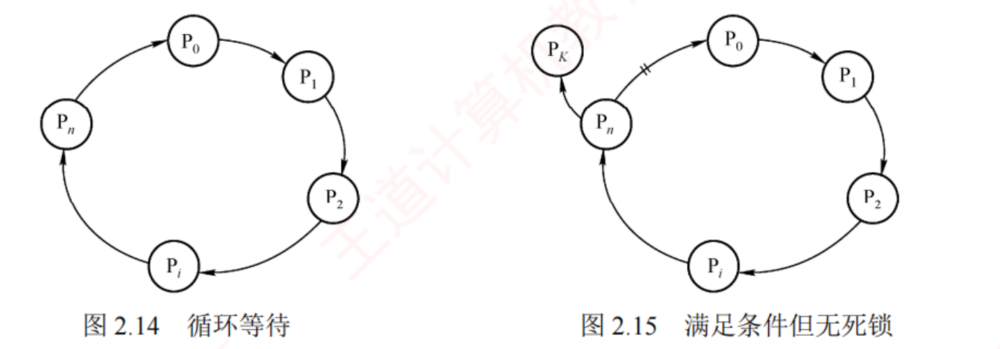
图 2.14 循环等待 · 图 2.15 满足条件但无死锁（p.151）——两张图的环一模一样 ，唯一的差别是右图多了一个 PK （它不在环上，却也持有 Pₙ 想要的那类资源的一个实例；图上 PK → Pₙ 那条边上打了两道斜杠表示"这条等待边可以被解开"）。只要 P₀ 或 PK 任一释放其持有的设备，Pₙ 即可拿到资源、环被解开。 这就是"多实例时环 ≠ 死锁"的全部图证。
我的补讲 · "大多数通用 OS 完全忽略死锁"——这条冷知识每隔几年考一次
书上把"完全忽略"列为第三种策略，还点名了 Linux 和 Windows →
潜台词是：这是一个反直觉的事实 → 所以能考的是"下列关于死锁处理的说法"。
为什么通用 OS 敢忽略 说明 死锁发生频率极低 用户进程之间很少同时抢多种不可剥夺资源 预防/避免的代价太高 银行家算法要预知最大需求，通用系统里根本拿不到 出了问题用户可以自己重启进程 代价由用户承担，比全系统降速划算
⟹ 这个策略有个名字叫"鸵鸟算法"（书上未提，知道即可）。
考试只需记住"大多数通用 OS 采用第三种策略"这个结论 。
⚠️ 反过来，银行家算法在实际系统中几乎不用 ，也是同一个理由——它只是教学与考试的模型。 知识串联 · 资源分配图 ＝ 数构的有向图，死锁检测 ＝ 拓扑排序的变体
环与拓扑 数构 ch6 判 AOV 网有没有环，用的是
拓扑排序：反复删入度为 0 的顶点；
若最后还剩顶点，就说明有环 。本节的
资源分配图化简 是同一套动作：
数构 · 拓扑排序 本节 · 资源分配图化简 找入度为 0 的顶点 找"请求全部能被空闲资源满足"的进程 删掉它和它的出边 删掉它的全部请求边与分配边（变孤立结点） 重复，直到无点可删 重复，直到无边可删 还剩顶点 ⟹ 有环 不可完全简化 ⟹ 死锁
⚠️ 但有一个关键差别：拓扑排序里"有环"就是终局；这里"有环"不一定 是死锁
——因为一类资源可以有多个实例，相当于图里的边带了容量。
⟹ 记法：资源分配图是"带重数的 AOV 网"，所以判环不够，必须化简。 知识串联 · 三种策略的"保守 → 折中 → 宽松"，与 408 里的其他三分法同构
保守与激进 表 2.5 第一列写的"保守 / 折中 / 宽松"，是一种在 408 里反复出现的设计谱系：
场景 保守端 折中 宽松端 本节 死锁 预防 （宁可闲置）避免 （每次分配前算）检测与解除 （先给再说）OS ch3 内存分配 固定分区 动态分区 请求分页（缺了再调） 组原 ch3 写策略 全写法（写直达） — 回写法（脏了再写）
⟹ 三行的取舍完全一致：越保守越安全但利用率低，越宽松利用率越高但要承担事后代价 。
这也解释了表 2.5 里"死锁检测"的缺点为什么是"终止或剥夺可能导致工作丢失"——那正是事后代价。 必记 · 三种处理策略与表 2.5 的横向对照
三种策略 ：①
预防或避免 （确保永不进入死锁状态）；②
允许发生，但能检测并恢复 ；
③
完全忽略 ——⭐
被大多数通用 OS（如 Linux 和 Windows）采用 。
资源分配策略 可能模式 主要优点 主要缺点 死锁预防 保守，宁可资源闲置 一次请求所有资源 · 资源剥夺 · 资源按序分配 无须运行时检测，实现简单 资源利用率低；剥夺频繁；不适用于动态请求 死锁避免 预防与检测的折中（运行时 判断） 每次分配前寻找可能的安全允许顺序 无须资源剥夺，利用率较高 须预知最大资源需求 ；进程可能被无限期推迟死锁检测 宽松，只要允许就分配 定期检测，发现后解除 不限制申请，无启动延迟 检测与解除有额外开销；终止或剥夺会导致工作丢失
⭐
预防与避免都是事前防范；预防的限制严格、实现简单但利用率低，避免的限制宽松但每次分配都要跑算法、实现复杂。 📄 p.152
2.4.2 死锁预防 考点追踪 · 2019
我的补讲 · 表 2.5 里三条"主要缺点"，各自对应一个真题问法
书上给每种策略写了缺点 → 潜台词是：缺点才是选择题的落点 → 逐条对上问法。
策略 缺点 常见问法 预防 不适用于动态请求 "下列哪种策略要求进程预先一次性申请全部资源" 避免 须预知最大资源需求 2015：避免与检测的区别 （就在"要不要预知未来"）检测 检测与解除有开销；工作可能丢失 2019：解除死锁的方式
⟹ 三个缺点各占一年真题。其中"须预知最大需求"这一条最值钱 ——
它既是避免与检测的分水岭（2015），也是银行家算法"不实用"的根本原因。 我的补讲 · 死锁预防"事前"、避免"运行时"、检测"事后"，三个时间点决定了三者的全部差别
书上说预防与避免都属"事前防范" → 潜台词是：三者真正的差别在决策发生的时刻 →
所以能考的是"下列策略在什么时候起作用"。
策略 决策时刻 需要的信息 预防 系统设计时就定死规则 （如资源必须按编号申请）不需要任何运行时信息 避免 每次分配资源之前 各进程的最大需求 Max 检测 周期性地事后检查 当前的分配与请求情况
⟹ 第三列就是 2015 那道题的答案来源：避免要"未来"（Max），检测只要"现在" 。
而预防连"现在"都不用看——这就是它"无须运行时检测、实现简单"却"资源利用率低"的原因。 必记 · 四条件各自的破法与可行性（表比文字好用）
破哪一条 怎么破 可行性与代价 互斥 把互斥使用的资源改成允许共享 ❌ ⭐ 实践中不可行 ——打印机、磁带机等临界资源本质不支持并发，
互斥性通常是保障正确性的基本要求 不可剥夺 请求新资源不满足时，强制释放其已占有的全部资源 ，日后重新申请 ⚠️ ⭐ 实现复杂、代价高昂 ：打印机被强制释放会使已完成的工作失效；
频繁申请释放增加开销、延长周转时间 。实际系统中极少采用 请求并保持 ① 静态资源分配 ：运行前一次性 申请全部；② 动态释放后申请 ：先释放用完的才能申请新的⚠️ 方法① 实现简单，但
⭐ 资源浪费严重 （末期才用的资源全程占着）＋ ⭐ 易引发饥饿 循环等待 ⭐ 资源有序分配法 ：每类资源编唯一号，必须按编号递增顺序申请，同类资源一次性申请 ✅ 最常用 。缺点三条：编号需稳定不利于新增设备 ；
实际使用顺序与编号不一致会提前占用造成浪费 ；增加编程复杂性
⭐⭐
有序分配法之所以有效：任何已持有大编号资源的进程都无法再申请小编号资源，
资源分配图中不可能出现环 。 我的补讲 · 静态资源分配的两个缺点，各自能单独出一道题
书上给"一次性申请全部"列了两条缺点 → 潜台词是：一条关于效率、一条关于公平 →
所以能考的是"下列哪个是静态资源分配法的缺点"。
缺点 属于 具体表现 资源浪费严重 效率问题 只在最后 1 分钟用的打印机，从第 0 分钟就被占着 易引发饥饿 公平问题 需要资源种类多的进程，永远凑不齐一整套
⟹ 第二条与 2.2 的饥饿是同一个词，但成因不同：
2.2 的饥饿是"调度策略不公平"，这里的饥饿是"要的东西太多、总有一样被别人占着"。
⚠️ 书上给的第二种实现（"动态释放后申请"）正是为了缓解第一条——
用完一样就还一样，不必攥到最后。 我的补讲 · 「按编号递增申请就不会有环」这句话要能自己证一遍
书上直接给结论 → 潜台词是：这个证明只有两行，写一遍就再也不会忘 →
所以能考的是"为什么有序分配能杜绝循环等待"。 反证 ：假设出现了环 P₁ → P₂ → … → Pₙ → P₁（Pᵢ 等 Pᵢ₊₁ 手里的资源）。
Pᵢ 正在申请的资源编号 > 它已持有的最大编号 （这是规则要求的），
而它申请的那个资源正被 Pᵢ₊₁ 持有 ，所以 Pᵢ 持有的最大编号 < Pᵢ₊₁ 持有的最大编号 。
沿环走一圈得到 max(P₁) < max(P₂) < … < max(Pₙ) < max(P₁) ，自相矛盾。 ⟹ 一句话：编号沿环严格递增，绕回起点就矛盾了。
这与 2.3 哲学家"奇偶异序"是同一招——奇偶异序其实就是让某一个人打破"总是先拿小号"的一致方向。
📄 p.153
2.4.3 死锁避免 真题 5 次，本节重心
知识串联 · 资源有序分配法 ＝ 2.3 哲学家的奇偶异序 ＝ 工程上的"按序加锁"
按序加锁 "给资源编号，只能按递增顺序申请"这条规则，在三处以不同面貌出现：
场景 编号规则 效果 2.4 资源有序分配法 每类资源一个全局编号 资源分配图不可能出现环 2.3 哲学家奇偶异序 让一部分人反着拿 破坏"人人方向一致" 2.3 两把锁反序加锁的反例 没有编号规则 ⟹ 出事 🐍 23 个状态即死锁
⟹ 第三行是最好的记忆锚：那个死锁反例，只要给两把锁编个号、统一按编号申请，就一定不会死锁 。
这就是有序分配法在最小规模下的样子。 必记 · 安全状态与三条单向蕴含 考点追踪 · 2018
安全状态 ＝存在某个进程执行序列 (P₁…Pₙ)，使得对每个 Pᵢ，
在它之前的进程全部完成并释放资源后，系统仍有足够可用资源满足 Pᵢ 的尚需 资源量 。
这样的序列称
安全序列 （
可能有多条 ）。
找不到任何一条 ⟹ 不安全状态。
⭐⭐⭐
三条单向蕴含（方向绝不能反）：
安全 ⟹ 一定不死锁 · 不安全 ⟹ 可能 死锁（不必然） · 死锁 ⟹ 一定不安全
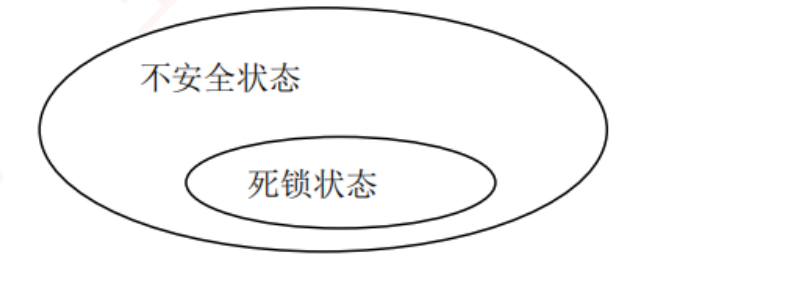
安全状态 · 不安全状态 · 死锁状态的包含关系（习题配图，p.131 / p.134 两处同图）——死锁状态是不安全状态的真子集 ：落进"不安全"但没落进"死锁"的那一圈，就是"目前还没卡住、但已经没有任何安全序列了"的状态。这张图一眼定住三条蕴含的方向 ，比背文字牢。
我的补讲 · "安全序列"这个词的三个易错点
书上给的定义句很长 → 潜台词是：三个细节都可能被单独拿来出题。
细节 正确理解 错误理解 安全序列可能有多条 "可能存在多个" ——找到一条就够了以为唯一 它只是"存在一种可行的推进顺序" 系统不必 真按这个顺序执行 以为 OS 会强制按序调度 判据是"尚需资源量" ＝ Max − Allocation 比的是 Need 拿 Max 去比 ⟹ 会误判成不安全
⟹ 第二条最重要：安全状态的含义是"存在一条活路"，不是"必须走这条路" 。
正因如此，"不安全"才只是"可能死锁"——因为系统也可能碰巧 走了一条好路。 我的补讲 · "不安全但没死锁"不是空话，它有可计算的实例
书上只说"不安全不一定死锁" → 潜台词是：这句话必须有实例才站得住 →
所以能考的是判断题「系统进入不安全状态就一定发生死锁」（错）。 教材综 03 第 3 问就是这样一个实例 ：两个请求都批准后 Available = (0,1,0)，
🐍 DFS 枚举安全序列条数 ＝ 0（确实不安全），但此刻没有任何进程处于阻塞态 ——
大家都还在跑，只是从此刻起无论怎么调度都必然走向死锁 。 ⟹ 一句话：不安全 ＝ "已经没有退路"，死锁 ＝ "已经动不了"。 前者是预言，后者是现状。
这正是"死锁避免"存在的意义：它在"还能动"的时候就拒绝分配，不等真卡住。
我的补讲 · 表 2.6 那个"再分 1 台就不安全"的结论，要会自己复算
书上直接给出"分给 P₃ 一台后进入不安全状态" → 潜台词是：这一步是真题最爱的问法（"能否分配"）→
所以必须能自己走完验证。
步骤 Work（可用） 此时能满足谁 结论 分给 P₃ 一台后 3 − 1 ＝ 2 P₁ 需 5 ❌ · P₂ 需 2 ✅ · P₃ 需 6 ❌ 只能先推 P₂ 推 P₂：Work ＋= Allocation₂ 2 ＋ 2 ＝ 4 P₁ 需 5 ❌ · P₃ 需 6 ❌ 推不动了 ⟹ 不安全
⚠️ 书上原文写的是"把剩余 2 台给 P₂，P₂ 可完成并释放 4 台 ，可用变为 4"——
与上表第二行的 Work ＋= Allocation₂ 是同一个结果 ，只是叙述角度不同：
叙述方式 算式 结果 书上（先真给再回收） 可用 2 − 2 ＝ 0；P₂ 的 Alloc 变 4，完成后全释放 ⟹ 0 ＋ 4 4 安全性算法（不真给，只加 Allocation） Work ＋ Allocation₂ ＝ 2 ＋ 24
⟹ 两条路殊途同归，但考场上一律用第二条 ——它不需要改 Available，出错概率低得多。
记牢那条铁律：Work ＋= Allocation，不是 += Max。 知识串联 · 安全状态 ↔ 2.3 的"不变式"，两者是同一种"永远不越界"的保证
不变式 我写 PV 穷举器时，检查的是"缓冲区不越界""临界区内不超过 1 人"这类
不变式 ；
银行家算法维护的
安全状态 是同一类东西——
一个必须时刻成立的性质 。
2.3 的不变式 2.4 的安全状态 要保证什么 任何交错下都不越界/不死锁 任何时刻都存在一条安全序列 怎么保证 PV 的位置与顺序写对 每次分配前跑一次安全性算法 破坏后 死锁或数据不一致 可能（不必然）死锁
⟹ 差别在于：2.3 是"写代码时一次性保证"，2.4 是"运行时每次检查" 。
前者零运行开销但要求程序员写对，后者有开销但能容忍任意的请求序列。 必记 · 表 2.6 的三进程算例（12 台磁带机）
进程 最大需求 已分配 尚需 可用 P₁ 10 5 5 3 P₂ 4 2 2 P₃ 9 2 7
T₀ 安全 ，安全序列
(P₂, P₁, P₃) ：可用 3 ≥ P₂ 尚需 2 ⟹ P₂ 完成释放 4，可用 5；
5 ≥ P₁ 尚需 5 ⟹ P₁ 完成释放 10，可用 10；10 ≥ P₃ 尚需 7 ⟹ 全部完成。
⭐
若此时再分 1 台给 P₃ ：P₃ 已分配变 3、可用降为 2 ⟹
进入不安全状态
（把 2 台给 P₂ 使其完成后可用变 4，但 P₁ 尚需 5、P₃ 尚需 6，都满足不了）。
知识串联 · 四个数据结构 ↔ 数构的矩阵与向量运算
矩阵运算 银行家算法本质是三个 n×m 矩阵加一个 m 维向量上的
逐元素运算 ：
运算 形式 数构/组原里的同款 Need ＝ Max − Allocation 矩阵逐元素减 数构的矩阵运算 Need[i] ≤ Work 向量的逐分量 比较 不是比大小，是比"每一维都不超过" Work ＋= Allocation[i] 向量逐分量加 —
⚠️ 第二行是最容易出错的一处：(1,2,2) ≤ (3,3,2) 成立，因为三个分量都不超；
但 (0,1,3) ≤ (3,3,2) 不 成立，因为第三维 3 > 2
⟹ 考场上养成习惯：逐列画勾 ，三列全勾才算满足。 我的补讲 · 银行家算法的名字不是修辞，四个数据结构都能对到银行上
书上给了"OS ＝ 银行家、资源 ＝ 资金、请求 ＝ 贷款"的比喻 →
潜台词是：四个数据结构在比喻里各有对应物，对上了就不会记混谁是谁。
数据结构 银行里的对应物 Available 银行金库里还剩多少现金 Max 客户签合同时声明的最高授信额度 （签了就不能改 ）Allocation 已经放给该客户的贷款 Need 额度里还没用掉的部分 ＝ Max − Allocation
⟹ "安全状态"在比喻里就是：存在一个放款顺序，使每个客户都能拿满额度、完工、连本带利还回来 。
银行家宁可拒绝一笔本可放出的贷款，也不让自己陷入"谁都还不上"的局面 ——这就是第 ④ 步的意义。 必记 · 银行家算法的四个数据结构 考点追踪 · 2013、2019
Available （长度 m 的可利用资源向量）·
Max （n×m 最大需求矩阵）·
Allocation （n×m 已分配矩阵）·
Need （n×m 尚需矩阵）。
Need[i, j] ＝ Max[i, j] − Allocation[i, j]
⭐⭐
每个进程运行前必须声明其最大需求量，且该最大需求量在整个生命周期内不得更改
（否则安全性保证失效），且不得超过该类资源总量。 我的补讲 · Available 没给怎么办——2012/2020 都要自己算
书上的例题直接给了 Available → 潜台词是：真题常常不给，要你自己从总量倒推 →
所以能考的是"根据下表求 Available"。
Available[j] ＝ 资源总数[j] − Σi Allocation[i][j]
验算表 2.7 （总量 A/B/C ＝ 10, 5, 7）：
资源 总量 各行 Allocation 之和 Available ＝ 总量 − 和 A 10 0＋2＋3＋2＋0 ＝ 7 3 ✅B 5 1＋0＋0＋1＋0 ＝ 2 3 ✅C 7 0＋0＋2＋1＋2 ＝ 5 2 ✅
⟹ 三个分量都对上 (3, 3, 2)。做题第一步就该做这个校验 ——它能同时验证你有没有抄错表。 必记 · 银行家算法四步 ＋ 安全性算法四步（考场卷面模板）
银行家算法（对请求 Requestᵢ） ：
① 合法性检查 ：
Requestᵢ ≤ Needᵢ？否则
视为非法请求 （超过了声明的最大需求）。
② 可用性检查 ：
Requestᵢ ≤ Available？⭐
不过就直接"让 Pᵢ 等待"，不用做安全性检查 。
③ 试探性分配 （三行同时改）：
Available -= Request_i //系统可用减少
Allocation[i] += Request_i //Pi 已分配增加
Need[i] -= Request_i //Pi 尚需减少
④ 安全性检查 ：安全 ⟹
正式确认分配 ；不安全 ⟹
撤销分配、恢复三个数据结构的原值，让 Pᵢ 等待 。
安全性算法 ：
Work = Available、
Finish[] = false；
反复找
满足 Finish[i]=false 且 Need[i] ≤ Work 的进程，
⭐⭐
令 Work += Allocation[i] 、
Finish[i]=true；
全部 true ⟹ 安全，否则不安全。 我的补讲 · 银行家算法四步里，哪一步会"改数据"、哪一步只是"看"
书上第 ③ 步叫"试探性分配"、第 ④ 步失败要"撤销恢复" →
潜台词是：只有第 ③ 步真正动了数据结构 → 所以能考的是"若请求被拒绝，系统状态如何变化"。
步 动作 改数据吗 失败时 ① Request ≤ Need？ 否 报错（非法请求） ② Request ≤ Available？ 否 让进程等待 ③ 试探性分配 是 （三个结构同时改）— ④ 安全性检查 否 （只用 Work 副本推演）撤销第 ③ 步、恢复原值，让进程等待
⟹ 答案：请求被拒绝后，系统状态与请求前完全一样 ——无论卡在 ①②④ 哪一步。这就是"试探"两个字的含义。 陷阱 · Work += Allocation 而不是 += Max（2018 的 A/C 之争全在这）
进程完成时释放的是它手里已经拿到的 资源（Allocation），不是它声明过的最大需求（Max）。 写成 Work += Max 会把 Work 算大，导致把不安全状态误判成安全。
2018 真题的两个干扰项正是这么造出来的。 ⚠️ 第二个易错：比较 Need[i] ≤ Work 必须每个分量都不超过 ，
只要有一个分量超了就不满足——不是比总和。
知识串联 · 安全性算法是贪心，且这次贪心是正确 的
贪心策略 2.2 提过 SJF 的贪心只在特定前提下最优，而这里的贪心
无条件正确 ，原因值得记：
2.2 SJF 的贪心 2.4 安全性算法的贪心 每步选谁 当前最短的作业 任何一个 Need ≤ Work 的进程 选错了会怎样 可能导致平均周转变差 不会 ——见下原因 先做短的会影响后面的等待时间 Work 只增不减：先推谁，后面能推的只多不少
⟹ 这就是书上"此处选择 P₁（也可选择 P₃ ）"那句话的理论依据：
只要当下能推的都能推，顺序无所谓，结论（安全/不安全）唯一。
⚠️ 但"安全序列 "本身不唯一——问"写出一个安全序列"时随便写一条合法的即可。 必记 · 表 2.7 五进程三资源的模板题 考点追踪 · 2011、2012、2018、2020、2022
5 个进程、3 类资源 A/B/C，总量
10, 5, 7 ；T₀ 时刻：
进程 Max (A B C) Allocation (A B C) Need ＝ Max − Alloc Available P₀ 7 5 3 0 1 0 7 4 3 3 3 2 P₁ 3 2 2 2 0 0 1 2 2 P₂ 9 0 2 3 0 2 6 0 0 P₃ 2 2 2 2 1 1 0 1 1 P₄ 4 3 3 0 0 2 4 3 1
安全性算法的推进过程（表 2.8） ：
顺序 Work Need Allocation Work ＋ Alloc P₁ 3 3 2 1 2 2 2 0 0 5 3 2 P₃ 5 3 2 0 1 1 2 1 1 7 4 3 P₄ 7 4 3 4 3 1 0 0 2 7 4 5 P₂ 7 4 5 6 0 0 3 0 2 10 4 7 P₀ 10 4 7 7 4 3 0 1 0 10 5 7
⟹ 安全序列
{P₁, P₃, P₄, P₂, P₀} ，T₀ 处于
安全状态 。
（初始时 P₁ 与 P₃ 都满足条件，选哪个当第一个都行 ⟹ 安全序列不唯一。） 我的补讲 · 表 2.8 那一列 Work 的推进，有个"只增不减"的自查
书上逐行给了 Work 与 Work＋Allocation → 潜台词是：这一列有单调性，可以用来自查 →
所以填表时每一行都该比上一行大。
行 Work 比上一行 P₁ (3,3,2) — P₃ (5,3,2) A 增了 2 P₄ (7,4,3) 三维全增 P₂ (7,4,5) C 增了 2 P₀ (10,4,7) A 增 3、C 增 2 末态 (10,5,7) ＝ 三类资源的总量 ✅
⟹ 两条自查：① Work 逐行只增不减；② 全部完成后 Work 必须恰好等于资源总量 。
末态对不上总量，说明某一行的 Allocation 抄错了。这个校验能救回大量抄写错误。 知识串联 · 银行家算法的"试探 → 检查 → 回滚"，与数据库事务是同一套动作
试探与回滚 第 ③④ 步这套"先改、再验、不行就撤"的动作，在计算机里有个通名叫
事务 ：
银行家算法 通用说法 ③ 试探性分配 （改三个数据结构）执行操作 ④ 安全性检查 校验不变式 不安全 ⟹ 撤销、恢复原值 回滚（rollback） 安全 ⟹ 正式确认 提交（commit）
⟹ 这个视角能帮你记住一个易错点：回滚之后系统状态与请求前一模一样 ——
就像事务没提交过一样，不留任何痕迹。 必记 · 三个请求 ＝ 三种结局的完整样板
请求 卡在第几步 结局 P₁ 请求 (1,0,2) 四步全过 批准 。Available 变 (2,3,0)，安全序列 {P₁,P₃,P₄,P₀,P₂}P₄ 请求 (3,3,0) ⭐ 卡在第 ② 步 （3,3,0 > 可用 2,3,0） 让 P₄ 等待，不用做安全性检查 P₀ 请求 (0,2,0) ⭐ 卡在第 ④ 步 试分后 Available ＝ (2,1,0) 满足不了任何进程 ⟹ 拒绝，撤销恢复
⭐
书上原话：「安全性算法是银行家算法的核心。典型考题会给出某个请求向量，
只需执行前三步得到更新后的 Allocation 与 Need，再跑安全性算法即可。」 我的补讲 · "卡在第②步"与"卡在第④步"的区别，答题措辞完全不同
书上三个请求恰好演示了三种结局 → 潜台词是：三种结局的标准答句 不一样 →
所以能考的是综合题的表述分。
卡在哪 标准答句 要不要做安全性检查 ① 合法性不过 "该请求超过其声明的最大需求，是非法请求 ，予以拒绝" 不用 ② 可用性不过 "当前可用资源不足，让该进程等待 " 不用 ④ 安全性不过 "试探分配后系统进入不安全状态，撤销本次分配、恢复原状态，让该进程等待 " 要（正是它没过）
⚠️ 最容易丢分的是把 ② 和 ④ 的答句写混：② 根本没有"撤销"这一说 （压根没分配过）。
批卷时"撤销试探性分配、恢复数据结构"这半句是独立采分点。 我的补讲 · 考场提速：集合推进法（能省掉一半表格）
书上老老实实逐行填表 → 潜台词是：考场上时间不够，需要一个提前判定的技巧 →
这个技巧书上藏在教材综 05 的注意框里。
什么时候能直接下结论 结论 某一步的 Work 已能满足余下任意一个 进程的尚需资源 直接判安全 ——剩下的必然能一个个推完Work 已加到天花板 （所有能完成的都完成了）仍满足不了任何进程 直接判不安全
⟹ 用在上面这道模板题：Work 推到 (7,4,3) 时，余下的 P₀(7 4 3)、P₂(6 0 0)、P₄(4 3 1) 中
P₄ 和 P₂ 都能满足，接着 Work 只会更大 ⟹ 此时就可以停笔写"安全"。
⚠️ 但如果题目问的是"写出一个安全序列"或"共有几条安全序列"，就必须老实推完
——
🐍 复算过的真题条数：2011 → 0 条 · 2012 → 66 条（且只有选项 D 在其中）·
2018 → 0 条 · 2020 → 唯一 1 条 · 2022 → 恰 2 条。 知识串联 · 集合推进法的两条判据 ↔ 数构里的"单调性剪枝"
单调性 集合推进法之所以成立，靠的是"Work 只增不减"这条
单调性 。
同一种"靠单调性提前下结论"的技巧在 408 里还有两处：
场景 单调的量 提前结论 本节 安全性算法 Work 只增 能满足余下任意一个 ⟹ 直接判安全 数构 Dijkstra 已确定顶点的距离只增 出队即最终值，不必回头 数构 拓扑排序 入度只减 入度归零即可入队
⟹ 三处都是同一句话：某个量单调变化 ⟹ 一旦达到某条件就永远满足 ⟹ 可以提前收工。
考场上敢用集合推进法，靠的就是这条单调性——不是"感觉差不多了"。 必记 · ⭐⭐⭐ 死锁公式 m > n(k−1)（本节考得最多的一条，正文没写但真题考了 3 次）
设某类资源共 m 个，n 个进程，每个进程对该资源的最大需求为 k。
不会死锁的充分条件：m ≥ n(k−1) + 1，即 m > n(k−1)
可能死锁：m ≤ n(k−1)
推导（就是鸽巢原理） ：最坏情况是
给每个进程都发到"差一个"的量，即每人 k−1 个，共 n(k−1) 个 ；
此时只要系统还剩下 1 个，就能让某个进程凑齐 k 个、跑完、释放全部，链条就活了。
三道真题全在等号 上设坑 ：2009（8 台打印机，问 K 最大取几）· 2014（3/4/5 台，问 n 至少几）·
2021（每进程需 2 个，问至少几个进程）。
⚠️ 「不死锁」要求严格大于 ，写成 ≥ 就会差一个。 我的补讲 · m > n(k−1) 的三种问法，反解也要会
三道真题分别问了 m、n、k 中的不同一个 → 潜台词是：公式要能三个方向变形。
问什么 变形 对应真题 给 m、n，问 k 最大取几仍不死锁 n(k−1) < m ⟹ k < m/n ＋ 1 2009：8 台打印机 给 m、k，问 n 至少多少才可能 死锁 m ≤ n(k−1) ⟹ n ≥ m/(k−1) 2014：3/4/5 台 k＝2 时问至少几个进程 m ≤ n(2−1) ＝ n ⟹ n ≥ m 2021：每进程需 2 个
⚠️ 三道题全部在等号上设坑 ：问"一定不死锁"就要严格 m > n(k−1)，
问"可能死锁"就是 m ≤ n(k−1)。读题先圈出"一定"与"可能"这两个词。 知识串联 · m > n(k−1) 就是鸽巢原理，书自己点名了
鸽巢原理 教材习题里写着「这类题可用到组合数学中鸽巢原理 的思想」。
对应关系：n 个进程 ＝ n 个鸽巢，m 个资源 ＝ m 只鸽子 ；
若每个鸽巢最多放 k−1 只还能放下（m ≤ n(k−1)），就可能人人都差一个 ⟹ 死锁；
一旦鸽子比 n(k−1) 多，必有某个鸽巢装到了 k 只 ⟹ 有人能跑完。 ⟹ 同一个原理在 408 里还管着两处：数构哈希冲突必然发生 （表长 < 关键字数）、
组原 ch3 Cache 组内必然替换 （映射到同一组的块数 > 组相联度）。
三处的句式都是"抽屉不够多，必有一个装超"。
📄 p.157
我的补讲 · 银行家算法能不能用于"一次申请多类资源"——能，而且题目一般就是这样
书上的 Request 是一个向量 而不是标量 → 潜台词是：一次请求可以同时要 A、B、C 三类 →
所以能考的是"某进程请求 (1,0,2) 能否满足"。
检查 怎么比 例（P₁ 请求 (1,0,2)） ① Request ≤ Need 三个分量逐个比 (1,0,2) ≤ (1,2,2) ✅ ② Request ≤ Available 三个分量逐个比 (1,0,2) ≤ (3,3,2) ✅ ③ 试探分配 三行同时逐分量加减 Available (3,3,2)→(2,3,0)
⚠️ 第 ③ 步最容易漏改其中一行。固定写成三行竖排、逐行打勾 ，比在脑子里同时改三个矩阵可靠。
另一个自查：改完后 Allocation₁ ＋ Need₁ 必须仍等于 Max₁ （(3,0,2)＋(0,2,0)＝(3,2,2) ✅）。 2.4.4 死锁检测与解除
我的补讲 · 多类资源版的死锁公式：Σkᵢ < m + n
教材 Q28 给了一个推广式 → 潜台词是：当各进程的最大需求不相同 时，
m > n(k−1) 就不能用了 → 所以要会用推广式。
若 Σi kᵢ < m ＋ n，则系统一定不会死锁 （kᵢ 为进程 i 的最大需求）
推导 ：死锁要求每个进程都拿到 kᵢ − 1 个仍不够，即
Σ(kᵢ − 1) ＝ Σkᵢ − n ≥ m ；
取反即 Σkᵢ − n < m ⟹ Σkᵢ < m + n ⟹ 不可能死锁。
⟹ 当所有 kᵢ 都等于 k 时，Σkᵢ ＝ nk，代入得 nk < m + n ⟺ m > n(k−1)——
两个公式是同一个，后者是前者的特例 。
🐍 实测：这个界是紧 的——能死锁的最小 Σkᵢ 恰好等于 m + n。 必记 · 避免 vs 检测（2015 专考这组对比） 考点追踪 · 2015
⭐⭐ 死锁避免 要求在运行过程中始终 确保系统不进入死锁状态，因此需要预先知道进程从开始到结束的全部 资源需求 ；死锁检测 只判断当前时刻 系统是否已经 发生死锁，无须预知未来的资源请求 ，
只依据当前的资源分配和请求情况 。
知识串联 · 避免 vs 检测的"要不要预知未来"，是 408 里一条通用的分水岭
预知未来 "需不需要知道将来会发生什么"这条线，在 408 里划开过好几对算法：
要预知未来的 不要预知的 结果 2.4 死锁避免（要 Max） 2.4 死锁检测 避免更安全但更难实现 2.2 SJF（要运行时间） 2.2 多级反馈队列 SJF 最优但不可实现 OS ch3 OPT 页面置换 LRU / CLOCK OPT 是理论下界，不可实现
⟹ 三行的结论一致：需要预知未来的算法都是"理论最优但工程不可用" ，
真实系统一律用"靠历史猜未来"的替代品。
这也是为什么 Linux/Windows 用鸵鸟算法而不用银行家算法。 背景 · "死锁定理"这个名字，知道它指的是哪句话就行
死锁定理 ＝「系统处于死锁状态，当且仅当其资源分配图不可完全简化」。 它没有独立的推导要背，也不会让你证明。考试只会以两种形式出现：
① 直接问"判断系统是否死锁的方法是什么"（答：化简资源分配图 / 死锁定理）；
② 给一张图让你化简。第二种才是真正要练的 。
必记 · 资源分配图的画法与化简 考点追踪 · 2016、2021
画法 ：圆圈＝进程，矩形框＝一类资源 ；框内的圆点数＝该类资源的实例数 ；
请求边 （进程 → 资源）＝申请一个单位；分配边 （资源 → 进程）＝一个实例已分配给它。化简两步循环 ：
① 找出所有资源请求都能被当前空闲资源满足 的进程 Pᵢ，
⭐ 空闲资源数 ＝ 该类资源总数 − 已分配实例数（＝资源结点发出的分配边数） ；
删掉它的全部请求边与分配边，使之成为孤立结点 。它释放的资源可能让别的进程也能推进 ⟹ 重复 ① 。死锁定理：系统处于死锁状态，当且仅当 其资源分配图不可完全简化 。 化简后仍有边相连的进程，就是死锁进程。
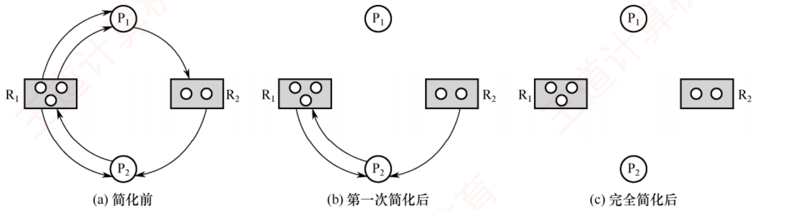
图 2.16 资源分配图及其化简过程（p.157）——(a) 简化前 ：R₁ 有 3 个实例、出度 3（无空闲 ），R₂ 有 2 个实例、出度 1（剩 1 个空闲 ）；P₁ 只请求 1 个 R₂，能满足 ⟹ 先删 P₁ 。(b) 第一次简化后 ：P₁ 已成孤立结点，它释放的 2 个 R₁ 让 P₂ 的请求也能满足。(c) 完全简化后 ：所有边删光 ⟹ 该图可完全简化 ⟹ 系统没有 死锁 ——尽管 (a) 里明明有环。这张图是"环 ≠ 死锁"最直接的反例。
我的补讲 · 请求边与分配边的方向，用一句话永久记住
书上文字描述了两种边的方向 → 潜台词是：画反了整题全错 → 所以要一个不会记反的口诀。
边 方向 口诀 请求边 进程 → 资源 "我伸手去要" （手从人指向东西）分配边 资源 → 进程 "东西发到我手上"
⟹ 于是"资源结点发出 的边数 ＝ 已分配的实例数"这句话就顺理成章：
从资源框射出去的箭头，每一根都代表一个实例已经到了某个进程手里。
⚠️ 图 2.16(a) 里 R₁ 的三个圆点全部有箭头射出 ⟹ 空闲 0；
R₂ 两个圆点只射出一根 ⟹ 空闲 1 ——这个 1 就是全题的突破口 。 知识串联 · 化简资源分配图 ↔ 安全性算法，两者是同一个贪心的两种表述
贪心消解 把两节的算法并排写，会发现它们
逐句对应 ：
安全性算法（2.4.3） 资源分配图化简（2.4.4） Work = Available先算出每类资源的空闲数 找 Need[i] ≤ Work 的进程 找"全部请求都能被空闲资源满足"的进程 Work += Allocation[i]删掉它的分配边 ⟹ 空闲数增加 全部 Finish ⟹ 安全 所有边删光 ⟹ 可完全简化 ⟹ 无死锁
⟹ 差别只有一处：安全性算法用的是 Need （未来还要多少），化简用的是当前请求边 （此刻在要多少） 。
这正是"避免要预知未来、检测只看现在"的算法级体现。 我的补讲 · 化简时最容易算错的一步：空闲资源数
书上给的公式是"总数 − 出度" → 潜台词是：图里没有直接标"还剩几个"，必须自己数边 →
所以能考的是 2016/2021 那两道"至少有几个进程死锁"。
要数的东西 怎么数 易错 某类资源总数 数框里的圆点 数成了边数 已分配数 数从这个框发出 的箭头（分配边） 把指进框的请求边也算进去 空闲数 总数 − 已分配数 — 某进程能否推进 它的全部 请求边都要能满足 只看满足了一条就删
⟹ 做题顺序固定为：先给每个资源框标上"空闲 x 个"，再逐个进程试删 。
标好了再动手，正确率立刻上来——这与 2.2 甘特图"先画三行时间轴"是同一类习惯。 我的补讲 · 2016/2021 那两道"至少几个进程死锁"，靠的是化简后数剩下的点
书上给的注意框写"经死锁定理化简后，仍有边相连的进程即为死锁进程" →
潜台词是：这句话把"判断有无死锁"升级成了"数出死锁了几个" →
所以能考的是"下列系统中处于死锁状态的进程至少有几个"。
步骤 做什么 1 给每个资源框标出"空闲 x 个" （总数 − 射出的箭头数）2 找出全部请求都能满足 的进程，删掉它的所有边 3 更新空闲数 （它归还了资源），回到第 2 步4 删不动了 ⟹ 剩下还有边相连的进程就是死锁进程，数一数即可
⚠️ 问"至少 几个"时还要多想一层：题目常常只给资源总数与各进程的请求/占有数量 而不给图，
这时要构造"最少几个进程凑成环"的情形——环最少要 2 个进程 ，
但若每类资源实例较多，往往需要更多进程才能耗尽资源。 知识串联 · 撤销进程法 ↔ 2.1.5 的终止原语，回收动作是同一套
进程终止 死锁解除里的"撤销进程"不是新机制，就是 2.1.5 那五步终止原语：
2.4 解除死锁要做的 2.1.5 终止原语的第几步 选中一个死锁进程 —（按优先级或撤销代价选） 释放它占用的全部资源 第 ③ 步：释放全部资源归还 OS 把它从队列里摘掉 第 ⑤ 步：PCB 移出队列 被释放的资源让其他进程得以推进 —（这才是解除死锁的目的）
⟹ 所以"撤销进程法代价高"的具体含义是：第 ③ 步把它做过的工作连同资源一起清零了 。
书上说"尤其当进程已接近完成时，已完成的工作将全部丢失"，指的正是这一步。 必记 · 死锁解除的三种方法 考点追踪 · 2019
① 资源剥夺法 ：挂起部分死锁进程、抢占其资源重新分配。⭐ 需防止被挂起的进程因长期得不到资源而饥饿 。 ② 撤销进程法 ：强制终止部分或全部死锁进程并回收资源；按优先级或撤销代价 决定顺序。
实现简单但代价高——尤其进程已接近完成时，已做的工作全部丢失。 ③ 进程回退法 ：让进程回退到之前某个足以回避死锁的状态 ，回退时自愿释放资源。
需记录历史状态并设置还原点，实现较复杂。
📄 p.175
2.5 本章疑难点
知识串联 · 三种解除方法 ↔ 2.4 前面讲过的三种破坏条件的手段
解除死锁 死锁已经发生后，三种解除法其实还是在破坏那四个条件，只是"事后"版：
解除方法 实质上破坏了 代价 资源剥夺法 不可剥夺条件 被挂起的进程可能饥饿 撤销进程法 把进程整个拿掉，环自然断 已完成的工作全部丢失 进程回退法 请求并保持 （回退时自愿释放）要记录历史状态与还原点，实现复杂
⟹ 三种方法的代价依次是"公平性 → 工作量 → 实现复杂度"。
2019 真题问"解除死锁的方式"，四个选项里通常混入"增加资源"这种非标准答案 ——
教材只承认这三种 。 知识串联 · "一个程序可被多个进程并发执行" ↔ 2.1.2 的"程序段可共享"
代码共享 疑难点第 3 条与 2.1.2 讲的是同一件事，只是一个从"进程"角度说、一个从"内存"角度说：
2.5 疑难点的说法 2.1.2 的说法 2.1.3 的位置 一个程序可被多个进程并发执行 程序本身是静态的，可被多个进程共享 只读代码段 各进程互不干扰 每个进程的数据段是私有的 .data/.bss/堆/栈
⟹ 三处合起来就是一句可以直接写进卷面的话：
"多个进程运行同一程序时，内存中只保留一份只读的 代码副本，而各自拥有独立的数据段与 PCB。" 必记 · 进程与程序的区别（四条）
① 进程是动态 概念（程序及其数据的一次执行活动），程序是静态 的有序指令集合 ；
从静态视角看进程由程序、数据、PCB 三部分组成。进程有生命周期、动态创建与消亡、是暂时 存在的；程序可长期保存、是永久 存在的。 一个进程通常执行一个程序，而一个程序可被多个进程并发执行 ；进程能创建新进程，程序不能。 组成不同 ：进程 ＝ 程序 ＋ 数据 ＋ PCB。
我的补讲 · 2.5 疑难点第 2 条其实是在提醒你银行家算法的"两次检查"
疑难点里说银行家算法"先检查资源是否足够，若有则试探性分配，再执行安全性检查" →
潜台词是：两次检查缺一不可 → 所以能考的是"只做可用性检查行不行"。
只做 会漏掉什么 后果 可用性检查（第②步） 没考虑"分了之后还能不能收场" 可能进入不安全状态 ⟹ 后续死锁 安全性检查（第④步） 没检查"眼下够不够分" 会去试探一个根本分不出的量
⟹ 表 2.7 的三个请求恰好证明了这一点：P₀ 请求 (0,2,0) 通过了可用性检查（2,3,0 够），
却在安全性检查上被拒 ——只做第②步就会错误地批准它。
这就是"死锁避免"比"有多少给多少"高明的地方。 我的补讲 · 疑难点第 1 条那四小点，有一条容易被答成反的
书上第 3 小点说"一个进程在其生命周期中通常 执行一个程序，而一个程序可被多个进程并发执行" →
潜台词是："通常"两个字是留了余地的 → 所以能考的是"进程与程序是一一对应的吗"。
说法 对错 一个程序可以对应多个进程 对 （同时开三个记事本）一个进程可以执行多个程序 按王道口径答"通常执行一个" （不必展开 exec 那一层）进程与程序一一对应 错 进程能创建新进程，程序不能 对 ——这一条最常被拿来当正确选项
⟹ 最后一行值得单记："能不能创建新进程"是区分动态实体与静态代码的一个很干脆的判据 。 必记 · 同步与互斥的区别和联系（一句话版）
并发进程的两类制约关系：竞争使用临界资源必须互斥访问 ⟹ 竞争关系 ；
协同完成任务、在关键点等待对方的信号 ⟹ 协作关系 。
知识串联 · 2.5 第 3 条把全章缝回一句话：竞争关系 vs 协作关系
两类制约 疑难点最后一句"竞争使用临界资源 ⟹ 竞争关系；协同完成任务 ⟹ 协作关系"，
恰好可以给全章四节各归一个位：
节 处理的是哪类关系 2.1 进程与线程 两类都要用到 ——IPC 是协作，共享存储的同步是竞争2.2 CPU 调度 竞争 （大家抢 CPU 这个可剥夺资源）2.3 同步与互斥 同步＝协作，互斥＝竞争 ——两类的正面处理2.4 死锁 竞争 （抢不可剥夺资源抢出了僵局）
⟹ 于是整章 139 页只有一条主线：多个进程要共用一台机器，要么排队（竞争），要么配合（协作），
两件事都做不好就会出错 。
这句话也是 ch3–ch5 的主线——内存、文件、设备同样是"共用"的对象。 我的补讲 · 全章 139 页读完，这张总账表是最后一遍自查
把四节最贵的结论各抽三条，凑成十二条。能全部说清，本章 277 道题的知识缺口就补完了；
剩下的错题都属于"读题不细"，靠练习系统的错题本解决，不必回来重读正文。
节 三条最贵的结论 2.1 ① PCB 不在进程虚拟地址空间里 ② 阻塞→运行、就绪→阻塞两条边不存在 ③ ULT 里一个线程阻塞则整个进程挂起 2.2 ① 模式切换 ≠ 上下文切换 （换身份 vs 换人） ② 算完成时间时 CPU 与 I/O 可并行 ③ 多级反馈队列只有"时间片耗尽"才降级 2.3 ① P(empty) 必须在 P(mutex) 之前 ② value<0 时 |value| ＝ 阻塞进程数读者优先会饿死写者，加 w 只是相对 写者优先 2.4 ① 环 ≠ 死锁（多实例时） ② Work += Allocation 不是 Maxm > n(k−1) 要严格大于
读完这一章之后
1）先刷题，别急着往下读。 本章 277 题 / 74 道真题 ，
建议按 2.2 → 2.3 → 2.1 → 2.4 的顺序刷（理由见本页开头那张分配表）。
错题全部进错题本，重刷时对照本页各节末尾的自查表定位。
2）PV 必须动手写。 PV 同步模板手册 有 26 张模板卡
（基石 4 · 经典 9 · 教材变体 7 · 真题打法 6），每张都带信号量清单 、穷举复算 与反例的死锁现场 。
先按 🔴 默写等级过一遍，再去做 13 道 PV 统考大题。
3）辨析题去套路库。 OS 套路库 收的是"看到什么 → 想到什么"，
本章占 30 张 （2.1 7 · 2.2 8 · 2.3 10 · 2.4 5）：状态转换两把尺子、甘特图五步与 CPU/IO 泳道法、
PV 四步总纲 + 五种题型模板 、银行家集合推进法，
本章的分界线（同步 vs 互斥、模式切换 vs 上下文切换、饥饿 vs 死锁、避免 vs 检测）在那里各有一张卡。
4）易混概念去卡库。 操作系统卡库 里本章占 56 张
（「进程与调度」30 + 「同步与死锁」26），按组收录，适合考前一天扫。
下一章： 第 3 章 内存管理 （75 页）——
本章的进程内存映像 （2.1.3）、中级调度＝对换 （2.2.1）、TLB 与进程切换 （2.2.4）三处都会在那里展开。